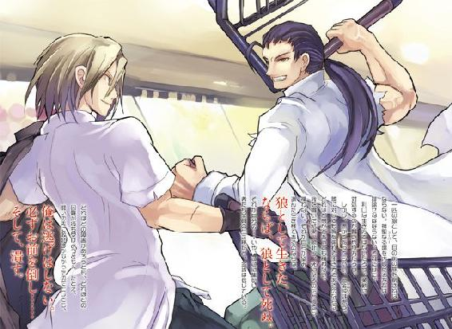
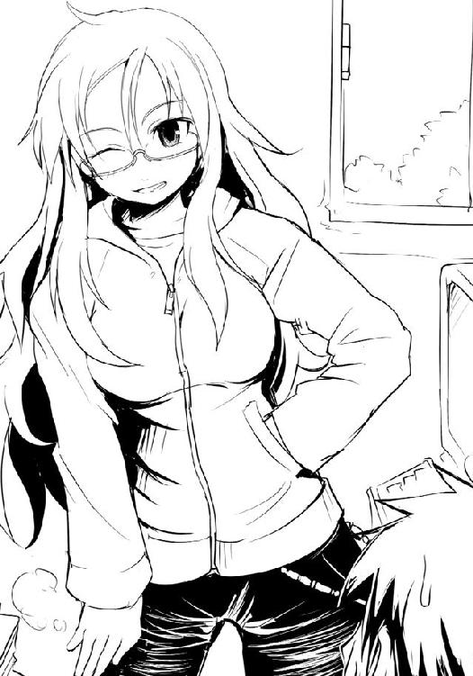

| ベン・トー 02 ザンギ弁当２９５円 | |
| アサウラ | |
| 集英社 (2013) | |

ベン・トー ２
ザンギ弁当２９５円
アサウラ
この本は縦書きでレイアウトされています。
また、ご覧になる機種により、表示の差が認められることがあります。

主要登場人物
佐藤 洋（さとう・よう）
比較的馬鹿な烏田高校一年。体力には自信がある。ゲームはセガ派。ハーフプライサー同好会所属。
著莪あやめ（しゃが・あやめ）
丸富大学付属高校一年。佐藤洋と同じ生年月日の従姉で、イタリア人の母を持つハーフ。佐藤とは実家同士も近く、双子のようにして育ってきた。やはりゲームはセガ派。二つ名は『湖の麗人』。
槍水 仙（やりずい・せん）
烏田高校二年。ハーフプライサー同好会会長。二つ名は『氷結の魔女』。
白粉 花（おしろい・はな）
烏田高校一年。小説執筆が趣味の小柄な女の子。ライトノベル研究会とハーフプライサー同好会に所属。
白梅 梅（しらうめ・うめ）
烏田高校の一年生ながら生徒会長に就任。白粉花と仲が良い。梅の字が二度続くからといって『バイバイ』と彼女を呼んではいけない。
金城 優（かねしろ・ゆう）
烏田高校三年。最強と謳われる存在。二つ名は『魔導士』。
遠藤忠明（えんどう・ただあき）
丸富大学三年。庶民経済研究部現部長。かつては『パッドフット』の二つ名だったが、現在は『帝王』。
松葉 菊（まつば・きく）
かつて最強と呼ばれた庶民経済研究部部長。自称の二つ名は『オオカバマダラ』。現在は結婚し、スーパーで半額神として働いている。
二階堂連（にかいどう・れん）
丸富大学二年。庶民経済研究部の諜報組織『ガブリエル・ラチェット』の頭目。
井ノ上あせび（いのうえ・あせび）
丸富大学付属高校一年。かわいそうな娘。
石岡勇気（いしおか・ゆうき）
割と残念な佐藤の幼なじみ。
木和田輝（きわだ・てる）
全てが謎の人物。
イラスト／柴乃櫂人
需要と供給、これら二つは商売における絶対の要素である。
これら二つの要素が寄り添う販売バランスのクロスポイント......その前後に於いて必ず発生するかすかなずれ。
その僅かな領域に生きる者たちがいる。
己の資金、生活、そして誇りを懸けてカオスと化す極狭領域を狩り場とする者たち。
――人は彼らを《狼》と呼んだ。
１章 湖の麗人
アタシさ、トライ・アンド・エラーを要求される状況って嫌いじゃないんんだ。
湖の麗人
０
小さなスーパーだった。チェーン店ではなく完全に個人事業として経営されており、物量こそ少ないものの、スーパーにとって必要なものは全て揃っている、そんな店だった。
当然、総菜......そして弁当の販売と値引きもまた――。
弁当コーナー前のスペースは他店より狭く、故に戦うには特別なスキルを要するため、その場にいるのは《狼》と称される者たちの中でも古参かつ、ごく限られた存在だ。特にすでに一線を退いた狼......《古狼》と呼ばれる者たちが時折現れることで有名であった。
現在一八時五〇分。あと一〇分程度で半額神と呼ばれる、総菜等を半額にする権限を有する店員が現れ、人々の心を震わせるシールを貼ることだろう。店内をゆっくりと歩む大学生から三十路前の四名の男たちは静かにその時を待っていた。
ふと、彼らの足が一時止まり、全員がこの店のエントランスへと視線を向ける。
動きの悪い自動ドアを抜け、店内に現れたのは近くの大学付属高校の制服を着た女だった。
『彼女』は寝起きなのか、長い金髪はボサボサだ。ブレザーにチェック柄のスカート、襟元にはリボンが結ばれているかわいらしい制服からすると、その髪は幾分不釣り合いである。加えてかけられた眼鏡の向こうに忍ばせた瞳はこれから命を懸けた戦いに挑もうとする覇気などまったくなく、いつもの散歩道を行く犬のように無防備かつ気楽なものだ。
だが、そんな『彼女』の姿に店内にいた男たちは一斉に息を呑んだ。その『彼女』を眺める限りでは何一つ凄みはないが、噂に聞いていたからだ。四月から近隣のスーパーに現れ始め、わずか一カ月で頭角を現し、早々と二つ名を手に入れた娘......その姿なりというのがボサボサの金髪で、眼鏡をかけ、薄汚れたスニーカーを履いた外国人......しかしながらも何よりも特筆すべきなのはその娘がとびきりの美人である、というところだという。店内を歩む『彼女』は誰の目からもその全ての条件を満たしていた。
『彼女』は軽い足取りで真っ直ぐに弁当コーナーに向かってゆき、残されていた三つの弁当（三〇％引き）を歩きながら眺める。その場を通り過ぎると、ポリポリと後頭部を掻いた。
『彼女』が飲料コーナー前に辿り着いた時、店内トイレ横にある、店員専用ドアを開けて一人の男が現れる。彼こそが、この店の半額神である。
弁当コーナーへ向かうと彼はジャンパーのポケットから半額シールを取り出す。それを残っていたいくつかの総菜、そして弁当へと貼り付けていく。全てに貼り終えた時、彼は新顔である『彼女』を一瞥しつつ、店員専用扉を開けて、中へと戻る。
そして、彼の消えた扉が閉まる時、戦いが始まった――
数分の後、『彼女』は外していた眼鏡をかけつつ、レジを抜けた。手に提げられたレジ袋には割り箸と半額シールの貼られた弁当が収まっている。
『彼女』は今宵用意された三つの勝利の座、その一つを初参加のフィールドで手に入れたのだ。通常、それはなかなか為し得がたい勝利である。特にこの店の特殊性を踏まえるのならば偉業といっても差し支えなかった。
『彼女』は悠々と自動ドアを抜け、春も終わりを迎えつつある夜空の下へ。
風が吹いて、髪が揺れた。と、同時に何者かの声が『彼女』の耳へと滑り込む。
「あなた宛に、言伝を預かっております」
その男の声に彼女は立ち止まる。声は駐車場の方から聞こえていたが、数台の車が止まっているだけで人影はなかった。ただ何者かの気配だけが、うっすらと感じられる。
「今宵、丸富大学部室棟最上階にある庶民経済研究部部室へ来られたし、とのことです」
「誰？ どこにいるの」
『彼女』は言うも、その声の主は何も応えない。しかしその沈黙こそが応答なのだと気づいた時、『彼女』には相手が誰であるのか、いや、どういった存在であるのかを理解した。
「なるほどね。噂で聞いたことはある。空で吠えたてるもの......《ガブリエル・ラチェット》か。ということは、その言伝の主は《帝王》？」
「......ご名答」
「その部室に行ったら、何か面白いことでも待っているのかな？」
「二つ名を持つ狼ならば損のないことかと。......それでは」
それらの言葉で持って、声の主の気配は霧散する。物音一つ、薄い人影すら見せることなくガブリエル・ラチェットはその場を去ったのだ。
フム、と『彼女』はまたポリポリと頭を掻きつつ、しばし考える。最近の自分は狼としてそこそこのレベルに達している、そろそろ次のステップに進んでみるのも面白いかもしれない。通り名を持たぬただの狼ではなく、二つ名を持った抜き出た者たちとの戦いに......。
だとすれば今回の呼び出しは丁度良い。噂でしか知らないが、この周囲の地区の強者たちを統括する組織......それが大学の部室棟に本拠地を置く庶民経済研究部だという。今回、何を目的として自分に声をかけてきたのかはわからないが、彼らの呼び出しに応じれば、誰がその強者なのか、彼らと相まみえるには何時、何処の店に行けばいいのか、そういった情報を聞き出すことができるかもしれない。
フフン、と『彼女』は鼻で笑い、先ほどより軽やかな足取りで歩き出す。
これから何が起こるのだろう、そう考えると自然と『彼女』の口元には笑みが浮かぶ。
『彼女』は面白いことが好きだった。大好きだった。面白いこと、そのためには多少の危険などものともせず、多少の困難などいくらでも乗り越えられた。それらが多少でなかったとしても、同様だった。
一部の貧しき者を除き、皆がそうであるようにこの半額弁当を奪取するという戦闘領域......いや、強者たちを退け、手を伸ばして神の恵みを得る狩猟場に参戦しているのもまた、ここに食事以上の楽しみを見つけたからにほかならない。
『彼女』は丸富大学付属高等学校一年、著莪あやめ。
興趣にただただ貪欲な娘にして、厳しき世界に台頭した若き一匹の狼。
またの名を――《湖の麗人》といった。
１
僕、佐藤洋は今、陳列されているおかきの袋を見ていた。
知っての通りおかきってのはお餅を乾燥させて焼いたもの、または揚げたものなんだけど、こいつには謎がある。サラダ味、という謎だ。
餅米料理のバリエーションが豊富であることは既知の事実だが、さすがにこれをサラダに活用する前衛的料理はかの『キューピー３分クッキング』でも僕はお目にかかったことがない。
昔、これが疑問で疑問で仕方なくって、徹夜でその理由を調べたことがあった。何でもサラダ味というのは『サラダ油』を使用したものを指し、同時に〝ＳＡＬＡＤ〟の元になったラテン語のＳＡＬという言葉は『塩』という意味であることからもサラダ味とは塩味のことである......とのことだ。今考えればそんなことに一晩を使うなんて当時の僕は何と若かったことか、と思う。まさにあの時は苦い青春の日々だ。
......もしかしたら、単に塩味と表記しないのは、消費者にこういった経験を積ませることによって、己はまだサラダ・デイズの中にいるということを認識させ、「あなたはまだお菓子が必要な子供なのだ」というメッセージを暗にすり込もうとする製菓会社の深い意図があってのサラダ味なのかもしれない――とか考えていたら、グゥ〜っと僕のお腹が鳴る。
そう、僕は空腹だった。だからこそ、今、僕はスーパーに来ているのだ。
時刻は現在二〇時四五分。弁当が半額になる半値印証時刻は目前だった。
僕がいるお菓子コーナーにフラリと二人の男がやってきて、僕と背中合わせになるようにして駄菓子を見つめ始める。顎髭と坊主の男。未だ名は知らないが、お互い見知った男たちだ。
「今日は妙に人が多いな。弁当が四つだってのに、オレたち含めてもう一〇人はいるぞ」
顎髭の声だ。お互い顔を菓子に向けたまま、喋る。
「アブラ神の店でも似たような状況だった。おかげで僕もここにいる」
僕が言うと、坊主がやはりかと呟く。僕と顎髭は坊主の言葉に耳を澄ます。
「噂に聞いたところによると、最近あちらからの遠征組が妙に増えているらしい。そのせいで競争率が上がっているんだろう」
あちら？ と僕は呟いてみるも、男たちは華麗にスルーする。
「こいつも噂でしかないんだが、どうもガブリエル・ラチェットが動いているらしい。連中が動いているとなると、ひょっとしたら......」
その時、店内の空気がざわめく。顎髭、坊主、ともに同じ方向、スーパーのエントランス方向に顔を向けた。かすかに自動ドアが開く音がする。
菓子コーナーからは他の陳列棚が邪魔で何も見えない。ただ、空腹により鋭敏化した僕らの感覚神経は何者が入店したのか、はっきりと認識する。
「おい、まさか、この状況でさらに魔女まで加わるってのか」
男たちは勘弁してくれ、と呟くと舌打ちしつつ、どこかへと歩き去っていってしまった。代わりに固い足音を鳴らして現れたのは、一つ年上のＨＰ同好会会長、槍水仙。
ダーク系のアイシャドウ、少し荒々しさを感じるも実際は丁寧にそう見えるようにセットされている髪、カルバンクラインの香水、そして黒いストッキングと一体化しているかのような、若い女性が履くにはややハードなブーツ......彼女のまたの名を《氷結の魔女》といった。
先輩はいつものように飄々として僕の隣に立って菓子を見つめ始めるが、店内にいる狼たちが明らかに先輩を意識しているのが隣に立っているだけの僕にでさえ感じられる。
無理もない。ただでさえ一〇人もの狼と呼ばれる弁当を欲する誇り高き空腹な獣がいるのに、神からの恵みである弁当は四つしかないのだ。人数が一人増えることだけでもプレッシャーだろうが、それが、このジジ様の店舗を縄張りとする凄腕だとすれば言わずもがな。
「今日は厳しいな。佐藤も来るんだったら他の店で早めに弁当を手に入れておけばよかった」
槍水先輩は醤油煎餅の袋に目をやりつつ、言った。その口調にはどこか、すまない、という申し訳なさそうな気持ちが混ざっていて、僕は、いえ、と苦笑する。
「今日は残念だが、サバが残ってない。私は『特盛り五目あんかけ焼きそば』を狙う」
それだけ言うと先輩は瞼を閉じ、腕を組む。ＨＰ同好会では同じ弁当を狙って争ってはいけないとする決まりがあるので、その弁当には手を出すな、ということだろう。
会話はそれでお終いになり、僕らは無言のまま時が来るのを待った。
果たして現れるこの店の半額神、ジジ様。紫色のスタッフジャンパーに身を包んだ初老の彼は精肉コーナー横のスタッフルームから姿を現すとまずは深々と一礼。そしてすぐ横の精肉、卵、飲料コーナーの順に、一日の営業で乱れた陳列を美しく直していく。店内にいる一一の狼がそれとなくその姿を見、戦いの時を待つ。呼吸を整え、今宵の獲物を想う。
店内の空気が張っていく。産毛が逆立つような感覚とともに、体がうずく。
ジジ様が最後にパンの陳列を整え終え、ついに総菜・弁当コーナーへと足を向けた。彼は懐から半額シールの束を取り出すと、残されていた総菜パックにその黄色と赤で美しく彩られた半額シールを貼っていく。素早くも、美しく、艶やかな装飾を施していく。熟練し、洗練された職人技というのは全てにおいて美しい、彼の指先はその事実を再確認させてくれる。
そして、全ての総菜に半額のシールが貼られ終わった時、ついに我々にとって最も心躍る弁当が半額になる瞬間が......瞬間が......アレ？
ジジ様が腰に手を当て、弁当コーナーを眺める。ここで動きを止めたのを、僕は初めて見た。
店内が激しくざわつき始めた。僕もまた、その空気にワンテンポ遅れてから「もしや」と事の次第に気づく。残されている弁当はわずかに四つ、それを欲する客は一一人。
......まさか......いや、そんな......だが......もしかして......半額にしないつもりか......？
今日の需要と供給のズレは確かに微妙なものでしかない。現在の三割引きで放置しておいたとしても誰かが買っていく可能性は十分に考えられた。
慌てた僕は槍水先輩を見るが、彼女は相変わらず腕組みしたままで、瞼を閉じてじっと何かに耐えるように平静を保っていた。
僕はその槍水先輩の姿に――胸の下で腕を組んでいるので胸がやたらに強調されている姿に、地味に僕を誘惑しているんじゃないのか、といらぬ妄想をする余裕すらなく、迷子の子供のように辺りの気配を探ることに徹する。
店内にいる誰もが嫌な予感に悚然としている。あちこちから「神よ」と祈りの声すら聞こえてきそうだ。
しかしそんな僕らの願いを裏切るように、ジジ様は、まぁいいか、みたいな顔をして精肉コーナー横の扉を抜け、スタッフルームへと戻っていってしまった。
......冗談だよね？ あれは、シールが足りなくなったから戻ったんだよね？ それとも尿意？ あぁ、歳いっているから近いんだね。しょうがないなぁ......。
......アレ？ おかしいな、トイレにしては少し長いな。......まさか、マジ、なの......？
え？ 嘘だろ？ 冗談だろ？ 笑えないよ、そんなの。早く戻ってきてシールを......。僕は胸の内で幾度となく繰り返すも、願い空しく時間が一分、また一分と過ぎ去っていく。
一五分くらいが経った頃だろうか。こんな精神状態なのでもっと短かったかもしれないが、それくらいの時間が経過した時、ついに弁当コーナーに向かう者が現れてしまった。当然弁当は三割引きのままである。
まずいな、と先輩が横目で彼を見て、呟いた。
男は弁当を前にし、俯いていた。棚に並ぶ弁当を見ているのではなく、ただ俯いていた。まるで合否を確認しに来た受験生のように、緊張しているのがその後ろ姿からわかる。
きっと店内中から一斉に視線を浴びせられているであろう彼は、ゆっくりと右手を胸元の高さまで持ち上げ、視線を弁当へ――。
あぁ、やめろ！ 思わずそう叫びそうになるも、僕は口に手を当てて必死になって堪える。すると、まるでその想いが彼に届いたかのようにその手が止まった。
ドクン、ドクンという鼓動が聞こえ始める。それはまるで弁当コーナー前に立つ彼の心臓の音のようでもあったし、彼を見つめる僕たち全員のものでもあるかのようだった。
彼の指先が、僕らの位置からさえもはっきりとわかるほどに、震えていた。
今、彼の胸にはどんな想いが去来していることか。目の前に鎮座する弁当、それら全てが手を伸ばせば簡単に自分のものになる。だが、それは求めていた半額弁当ではない。
彼が手を止め、逡巡していることからもわかる。彼は醜い《豚》ではない。誇り高き狼だ。もし彼が手を伸ばして弁当に触れれば、必ず手に取りレジへ向かうことだろう。決して弁当を手にキープしたまま半額神が訪れるのを待ったり、触るだけ触ってその場から離れるような愚かで恥知らずなマネはしないだろう。
わかる、わかっている。名も知らぬ一匹の狼よ。三割引きの段階であるにも拘らず弁当の前に立ってしまう気持ちはわかる。このまま半額にならないのだったら、ならばいっそ......。そういう気持ちは痛いほどにわかる。そして恐らく相当に腹が減っているのだろう。三割引き弁当の前に立ってしまいたくなるくらいに、減っているのだろう。だが......だが、よく考えろ！
僕たちは何故ここにいるのか、何故数百円安くなった弁当のために命を懸けて戦うのか......今一度思い出すんだ。君にだってわかっているはずだ。
半額弁当は在庫処分扱いの弁当じゃない。半額弁当とは、敵を押しのけ、自らの手で勝ち獲って初めて加えられる勝利の一味が入った至高の料理にして、神からの恵みだ。この、自らを試し、生き様を刻む場、大規模小売店にだけ存在する極めて稀少で価値ある存在......それを求めて君は、僕たちは、強敵の集うこの場にいるんじゃないのか――
......その時、自分の胸に湧き起こった気持ちに気がつき、自分自身驚いた。僕は弁当が一つなくなるということを心配はしていなかった。無論、弁当が一つなくなれば半額を狙う僕たちにとって勝率は間違いなく下がるし、何より弁当の数が少なくなればなるだけジジ様が半額しなくても十分に捌けると判断してしまう可能性が高くなっていく......そういう考えはある。
だが、胸に湧き起こった気持ちはそれらとは別のものだった。
それは、弁当コーナー前に立つ彼への批判ではなく......応援だった。
彼が如何なる人物か、名も知らぬ、顔も知らぬ、そんな男だ。しかし何処かで感じる同じ狼としての仲間意識。それがはっきりと、ある。
だから、僕は胸の内で必死に呼びかける。負けるな、と。頑張れ、と。
己の弱い心に負けるな、きっと希望――半値印証時刻――は訪れる。だから、今一度その場を離れ、ともに、頑張ろう。半額神を信じよう。
彼の震えは指先から全身へと広がっていた。肩を震わせながら、天井を見上げる。泣いているのかもしれなかった。
今弁当を手にすることは何も恥じるべきことじゃない。仕方のないことだってある。僕を含め、皆、そう納得してくれるのは間違いない。誰も非難なんてしない。一人を除いては。
非難の声をあげるのは、いつだって自分自身だ。君は......本当に、それでいいのか？
「......あきらめるな」
どこからか、かろうじて耳に拾えるほどの小さな声が聞こえた。お菓子の陳列棚の向こうにいる人のだろう。当然、店内に流れるＢＧＭにかき消されてしまいそうな、そんな声は弁当コーナー前にいる男の耳元には届かない。
声色からもわかる。その声の主は......いや、きっと彼を見守る全員が、僕と心は同じだ。
――あきらめるな。共に生きよう、共に戦おう、共にゆこう、同志よ。
僕たちは切に願う。彼が、今一度僕らと共にあらんことを――。
天井を見上げていた彼は、上げていた右手をさらに高く上げ、己の額に掌を当てた。そしてそのまま俯き、手を放す。
僕たちは息を呑んだ。彼の、決断が出たのだろう。
彼は、後ろから見ていてもはっきりとわかるほどに大きく息を吸い、吐き出す。そして......ゆっくりと踵を返し、その場から鈍りのない足取りでどこかへと去っていく。
その一歩一歩に逞しさが宿っているのは、誰の目にも明らかだった。
彼の靴音が語る。今取らなければ後悔するかもしれない、仮に半額になったとしても誰かに取られるかもしれない......しかし、それがどうした、と。
彼は今、勝敗すら乗り越えた誇り高き存在になったのだ。そう、まさにそれは新たな戦士の誕生の瞬間だった！
思わず拍手したくなった。彼は見事、己の弱さを乗り越えたのだ。
見やれば槍水先輩でさえ瞼を伏せて口元に笑みを浮かべて頷いていた。まるで役者も客も一体となった極めて良質な舞台を見た後のような充実感のある、笑みだった。
不思議なもので、何一つ視線を交えたわけでも、言葉を交わしたわけでもない店内の他の狼たちとの一体感すら、僕はこの時感じていた。敵だらけの店内に居心地の良ささえ、感じた。
ただ見ていただけとはいえ、僕もまた一つ成長した、そんな気がした。
「頑張ったな、あの男。あそこまで行って引き返すのは相当な勇気を要しただろう」
槍水先輩が呟く。えぇ、と僕は応えた。
「今宵集いし者たちからはもう脱落者は出ないだろう。あとは待つだけだ。あんなものを見せられた後じゃ、ジジ様も半額にしないわけにはいかないだろうしな」
先輩はクスリと笑う。僕もつられて笑った。空腹だったが、不思議と満たされた気分が胸に宿っていた。
あの弁当コーナーから見事引き返してきた男が今、空を舞っていた。
全身が絞った雑巾みたいな状態での、きりもみ飛行だ。グルングルン回転していた。
僕の目の前で清々しいほど鮮やかに、槍水先輩は彼をぶっ飛ばしたのだ。
あの彼の英断から数分の後、店内に仕方がないなという表情で、けれどどこか嬉しそうに戻ってきたジジ様が弁当に半額シールが貼り終わり、争奪戦が始まったわけなのだが......速攻でこの有様である。始まる前の彼の勇敢な姿は全て悠久の彼方へ吹っ飛び、今ではただのフライング・ヒューマンだ。
おまけに床に落ちそうになった瞬間、負け犬は邪魔だと言わんばかりに、近くにいた狼たちが彼をさらに遠くへと蹴り飛ばしやがった。
......人間とは......勝負とは......現実とは......何とも酷なものだ。彼がこれに懲りずにまたこの場に訪れることを、僕は期待してやまない。
......などと第三者ぶっている場合ではない。僕とて半額弁当を求める者、悠長に吹っ飛んだ彼に想いを馳せている余裕はない。弁当、弁当だ。弁当を奪取せねば！
視線を、吹っ飛ばされた彼から半額弁当が陳列される棚へ移す。そこに背を向け、人をかき分けて槍水先輩がやってくる。手にはすでに弁当があった。
残り三つ、ここからが本番だった。二つ名を有する者が勝ち抜けたため、場が乱れ始める。
僕は目を凝らす。残っている弁当はゴトリとした塊状の肉が三つも入ったヒレカツ弁当と、表面のてかり具合からも窺える脂ののった半身がインパクトのあるホッケ弁当、野菜も肉もたっぷりと入った焼き肉弁当の三つ。
しかしながら僕は乱戦の中央付近で流れに揉まれており、弁当棚に手を伸ばすことすら叶わない。と、その時、僕の肩をポンと誰かの手が叩く。通常、この状況で体に誰かが触れるというのは攻撃の前兆にほかならず、思わずビクリと身が震えた。だが、すっと僕の横に現れたその手の主の視線は僕ではなく前方、弁当棚に向けていた。茶髪の大変いい乳をした女子高生だった。彼女もまた、幾度も闘い、幾度も助け合っているが、未だ名は知らない。
彼女はチラリと僕の顔を見てくる。敵意のない目だった。その瞬間、僕は彼女の意図を理解した。僕は頷く。――共闘の誘いだ。
僕は彼女の脇を抜け、前方で固まっていた男たちに突進する。当然受け止められ、カウンターパンチを喰らいそうになる。僕はそれをしゃがんでかわす。しゃがんだ僕の背に茶髪の足が乗せられ、一瞬グッと体重をかけられるものの、すぐにそれは消える。男の呻き声。顔を上げた僕の目の前には倒れ行く男と、彼に飛び蹴りを喰らわせ、勢いを殺すことなく前進する茶髪の背。僕は彼女に続く。
かろうじて弁当に手が届く距離まで到達。最前線で弁当を奪い合っていたのはあの顎髭と坊主だ。どうやら二人ともホッケ弁当を狙っているようだが、保険として他の弁当に伸ばされた手をも一緒に弾き合っている。結果、二人とも決定打に欠けた闘いを続けていた。
僕もあのホッケ弁当が狙いだったので、そこに参戦する。僕は坊主に拳を放つも簡単に受けられる。カウンターが来るかと思ったが、来ない。坊主は僕よりも顎髭の方を気にしていた。
ただその顎髭も、僕と坊主が戦っている隙に......というわけにはいかない。顎髭の方には茶髪が行った。彼女の膝蹴りがモロに顎髭の腹部に叩き込まれ、彼はそのまま床に伏す。
茶髪が弁当に手を伸ばそうとするが、それを僕を押しのけた坊主の手が弾く。
僕もまた坊主から彼女に攻撃対象をシフト。ここに至ればもはや共闘の意味はない。敵だ。
身を低くして僕は茶髪に足払いを掛けた。彼女の体が宙に浮く。一気に彼女を乱戦の外周にまで蹴り飛ばしてしまいたかったのだが、立ち上がろうとする僕の胴に顎髭がしがみついてきた。それでも勢いで立ち上がるものの、蹴りを放つことができない。
茶髪が床を転がり、代わりに顎髭が僕を支えにして立ち上がる。間近で僕を見る顎髭。だがその視線は僕ではなく、その後ろを見てヤバイという表情を浮かべた。
何がヤバイのか、僕は顎髭の瞳に映る光景を見た。坊主の蹴りが、迫っていた。
僕は顎髭を突き飛ばして自由を得る。だが、防御する間も、かわす間も、振り返る間すらなく、僕は側頭部に強烈な一撃を――
僕はさして重くないレジ袋を手にレジを抜けた。そう、入っているのはどん兵衛と総菜の天ぷら一品だけである。
しかしながら僕には敗北感はなかった。どこか晴れやかだった。
それは天ぷらが八八円セールで元々安いのに、さらに半額、トドめにその獲物がやたらと巨大なイカ天だったから......というのもある。だが、それ以上に半値印証時刻になる前の〝彼〟と共に、隔靴掻痒の時間を乗り越えたことが大きいのだろう。
たとえ争奪戦に負けたとて、負けはしなかった、弱き己の心に。だから、晴れやかだった。
きっと槍水先輩に吹っ飛ばされた彼も同様の気持ちでいることだろう。......レジに向かう途中、未だに気を失って倒れている彼を見つけたけれど、いい顔だったし。
レジを抜けたところで先輩が待ってくれていて、彼女と肩を並べて店外へ出る。
僕らを夜風が包む。その風に乗ってかすかに遠くからエンジン音が聞こえてきた。スーパーの駐車場に一台のバイクが進入してくる。
僕はかすかに息苦しさを感じる。見れば槍水先輩が僕の肩に手を置き、そこで制服をギュッとつかんでいて、喉元が少しばかり絞めつけられていた。
「行こう、佐藤」
そう言って先輩は僕を引っ張るようにしてスーパーのエントランスから離れるのだが、どうしたというのだろう......？
僕は歩きながらもバイクの主を見る。一瞬、この地域で最強と謳われる《魔導士》こと金城優かと思ったが、よく見ればバイクの種類も、乗っている人間の体格も違う。一八〇以上ある彼のシルエットではない。
そいつは一度バイクのエンジンを止めようとするものの、何かに気がついたように顔を上げ、トコトコとつま先で地面を蹴って駐車場からスーパーのエントランスに近づいていった。
丁度その時弁当を持った坊主と、湯気が上がるカップヌードルを手にした顎髭が店内から現れる。彼らはライダーに一瞬ギョッとするものの――きっと僕同様魔導士だと思ったのだろう――知っている人間ではないと判断したのか、首を傾げつつ歩き去る。
「あっちゃ、終わってんじゃん。なんだよ、あそこの情報も案外当てになんないなぁ......」
フルフェイスヘルメットのせいか、ややくぐもった女性の声で、そのライダーは一人ぼやく。気のせいか、知り合いというか身内に似たような声をした奴がいるが......ただアイツはバイクは持っていなかったはず......いや待て。以前、教習所に通っているとか言っていたっけ？
ちょっと気になったので近寄って声をかけようと思ったのだが......相変わらず槍水先輩が制服をつかんだままだったので行くに行けない。
「先輩？」
「......あ、すまない」
先輩は手を離す。バイクがエンジン音を高らかに上げて駐車場を出ていくと、僕と先輩の間に、何故か妙な空気が流れた。
「......部室に戻ろう。白粉も待っているだろう」
そう言って一人先に歩き出す先輩は、何かを払うように首を振った。
その後、僕たちはいつものように烏田高校校舎横に立つ部室棟へ向かい、エレベーターもないのに五階というアホみたいな位置にあるＨＰ同好会の部室へと足を運ぶ。
その妙な名前の同好会であることからもわかるように、部室内もなかなか独創的だ。扉を開けてまず目を引くのは部屋の中央にドデンと備えられた十人以上は座れる大きな円卓。そして壁の一面を完全に覆っている半額シールの層、反対の壁には半値印証時刻等が事細かに書き込まれた地図が貼られている。他にも未だに何が入っているのかよくわからないが、いろいろと詰まった棚、家庭用としては高出力な一〇〇〇ワットの電子レンジや、電気ポットなどが並び、とどめに小型の冷蔵庫まで備えてある。多分、ここまで生活に関して充実した部室というのは他の部はもちろん、他校にもそうはないだろう。
ただいま、と僕は言いつつ部室の中に入るが、いるはずの白粉花からのおかえりの声はない。代わりに聞こえてくるのはキーボードを叩く音と、ブツブツという女の子の独り言だ。
明かりのついていない部室に女の子一人、そしてぼんやりと光っているノートパソコンのモニター......加えて彼女は僕らの方には背中を向けて座っているので、怪しげな呪術でも行っているかのようで不気味な光景だった。
「〝もう俺のケツは限界だ、頼む、許してくれ......サト......サイトウは泣きながら懇願するが〟......この辺でとりあえず一発出しておいた方がいいかな......うん、よしそうしよう」
微妙に寒気のする独り言だった。僕はとりあえず彼女の後ろに束ねている髪をむんずとつかむと、そのままグッと後ろに引っ張る。あぅ、と呻き声を出し、彼女は仰け反った。眼鏡越しの大きな瞳が驚いたように見開かれ、僕とようやく目が合う。......逆さまだけど。
「......あ、お、お帰りなさい。えぁっと......あの、何でしょう？ あの、あたし何か......？」
僕が睨んでいたので、何か勘違いしたようだ。......いや、勘違いでもないか。
まぁしかし仕方のないことである。人を勝手に小説の中の登場人物にして......男にいろいろとヤられる展開にされれば......誰でもそうなるだろう。しかも本人はそれが僕じゃなくて、サイトウヒロシだって言い張っているのだから、その微妙な改変具合がまた余計にいじらしい。
「待たせたな。さぁ、夕餉にしよう」
槍水先輩は僕らのやりとりなど気にする様子もなく、平然と弁当を円卓の上に置いた。
別に決まりというわけではないのだけれど、同好会に入って以来、僕たちは部室で夕食をとることがほとんどだった。各自――といってもメンバーは僕と白粉と、槍水先輩しかいないんだけど――その日手に入れた半額弁当、もしくはカップ麺を持って集まり、飯を喰う......ある種ＨＰ同好会唯一の活動である。
僕も腹が減っていたので白粉への不満は胸にしまい込み、手を離して、どん兵衛の準備に入る。白粉もまた、パソコンを閉じて先に手に入れていた自分の弁当を電子レンジへと入れた。
しばしの後、彼女は温め終わった弁当を取り出し、窓際の席に座る。これもまた決まりというわけではないのだが、晩飯を食べる際は何故か電気を点けず、全員が巨大な円卓の窓際に座り、月明かりのみで食べるのだ。
白粉が円卓に置いた弁当の表面を覆うビニールを剥ごうとするが、アチチと手を離してしまう。仕方ないのでどん兵衛にお湯を入れ終えた僕が隣に座りつつ、代わりに破いてあげる。
今日の彼女の獲物は、残念ながら値札部分が黒くなってしまって弁当名は読めないが、豚串と思しきものが五本も入ったなかなかヘビーな弁当だ。
槍水先輩が半額弁当を温めている間に、僕は冷蔵庫から麦茶を取り出し、人数分を注いだりして時間を潰す。
しかしながら何故だろう。槍水先輩はともかくとして、白粉のような小柄で体力的にもそんなに強くなさそうな女の子がこうして弁当を獲れているのに、僕はといえばどん兵衛とイカ天。どうにも納得がいかない。
「あの、先輩」
槍水先輩は僕らに背を向けつつ、なんだ、とそっけなく応える。彼女は自分の弁当を温めている間電子レンジから目を逸らさないので、話しかけづらい。僕は終わるのを待った。
槍水先輩は電子レンジから『特盛り五目あんかけ焼きそば弁当』を取り出し、僕の横の席についた。うずらの卵は一個だが、ベビーコーンは四本も入っている豪華仕様だ。
「何で僕は負けるんですかね？」
「何だ、藪から棒に」
先輩が乱雑に包装を破ると、中から美味しそうな匂いとともに湯気があふれ出る。それから察するに相当念入りに温めたことが窺える。この種の塩分を多く含む汁のある食品は電子レンジでは温めにくく、通常の〝あたため〟では中心部が生ぬるい状態で終わってしまうことが多い。だが、さすがは先輩といったところか。
とりあえず僕たちはそれぞれ箸を持ち、手を合わせて「いただきます」と声を出し、本日の晩餐会を始める。先輩は山盛りになっている五目あんかけ焼きそばに箸を突き立て、掲げるように麺を持ち上げる。湯気が立ち昇る。とろとろの〝あん〟を纏い、月明かりを鈍く反射する大量の麺を先輩は口元に持っていくと、ズルズルと凄まじい勢いで食べ始めた。
スーパーで売られるこの種のあんかけ焼きそばといえば、本来のそれと違って、どうしても〝あん〟が染みこんでしまうため麺がカリカリということはない。ただそれでもきちんと揚げているため麺は油っこい場合が多いのだが......先輩はそれを気にする様子もなく豪快に啜る。
「なんて言うか......白粉が弁当獲れるのに、僕が獲れないっておかしくないですか？」
「え？ あ、あたしですか？」
チラリと白粉を見やると、彼女は恐る恐るというふうに何故か豚串を一本差し出してくる。顔を見ると申し訳なさそうな表情をしており、また何か自分がやらかしたのか、と心配しているらしい。つまりこの豚串は、これで許して、ということらしい。
解け出た脂でてらてらと光る豚肉からは猛烈にジューシーな匂いが放たれている。それはどん兵衛とイカ天という、植物性の油しか使っていない本日の夕餉の僕にとってかなり刺激的だ。ただこんな表情の彼女から豚串を貰うのはカツアゲみたいで抵抗がある......。
いや、いいよ、と言うものの彼女はそれでも手を引っ込めないので、仕方なく串を受け取り......肉の先を彼女の口先に持っていく。彼女はきょとんとしつつも、パクリと喰いつき、はぐはぐとその肉を食べ始めた。......何か、動物にエサを上げているみたいだな......。
「人を見かけだけで判断するな、佐藤」
「いや、まぁ、そうなんでしょうけど......」
フム、と困ったように眉根を寄せつつ先輩はズルズルと麺を啜り、時折具材を摘んでは口に放り込んでいく。
「以前も言ったと思うが......弁当獲得へのもっとも強力な武器はここだ」
そう言って先輩は箸を持った手の人差し指で、トントンと、僕の胸を......いや、その少し下をノックした。心臓、というよりは胃袋のあたりだろうか。
「以前から言っているだろう？ あの場で勝つには戦闘意欲、敵に立ち向かう覚悟、そして何より空腹がものを言う。大きくまとめるのならばそれらは意志の力だ。それがなければ、どれだけ筋力があろうが、体格が良かろうが、格闘技の経験者だろうがただの負け犬になる」
先輩は喋りつつも合間合間でズルズルとあんかけ焼きそばを食べ、山盛りだったそれが見る見るなくなっていく。最終的に容器には一口分の麺と、うずらの卵だけが残った。その卵を少量残っていた〝あん〟を纏わせてから先輩は口にする。
きっと先輩の舌の上ではプルンとした白身が弾け、中からまったりとした黄身が現れるとともに〝あん〟と相まって得も言われぬ味が広がっているのだろう。やや俯き、瞼を閉じてその味わいを堪能する先輩の表情からそれが如何に美味なるものかが想像できた。
先輩は追撃をかけるように、口内に卵が残っている状態で最後の麺を啜る。......あん、卵、麺の三重奏は如何なる味なのだろう。
先輩は夕餉の締めに麦茶を一気に飲み干すと、ふぅ、と一息吐いた。
そして、彼女は円卓に肘をつき、手首で口元を隠すようにして隣の僕を見る。
「何故戦っているのか、何故弁当を欲しているのか、何故その弁当なのか......それをしっかりと思い定めろ。そして弁当を獲るという行為に意義を見いだせれば、負けるはずはない」
僕は、はぁ、と曖昧な返事をしつつどん兵衛を啜る。先輩の喰いっぷりに見とれていたため、麺が少し柔らかくなっている。だが、うまい。どん兵衛は鍋に移して麺がクタクタになるまで煮込んでもうまいのだから、当然だ。日清食品の技術力の高さが窺い知れる。
上に乗せたイカ天も頂こうとするのだが、ズルリと周りの衣が剥がれ落ち、白いイカの身だけが僕の口からぶら下がる。肉厚なそれを無理やり喰い千切る。イカ天の衣が浮いたことでよりマイルドになった出汁を啜って、一緒に味わう。――うまい。
「白粉は、今日、なんでその弁当を選んだんだ？」
尋ねつつ白粉を見ると、あのヘビーな弁当も半分くらいがなくなっている。先輩もそうだが、彼女も小柄なわりによく食べる。
「お弁当の名前が『見よこの脂と肉の層、滲み出る肉汁、熱き漢たちに贈る夢の豚串弁当！』っていうんですけど、見た瞬間、あ、これしかない、って思ったんです」
うん、聞いた僕がバカだった。名で選ぶ時点でダメだが、それ以上にその長ったらしい名前を丸暗記している時点でこいつはダメだ。
ひょっとして、それぐらいのバカな方が弁当は獲れるものなのだろうか？ 僕はどん兵衛のお揚げを齧りつつ、一人考えた。
２
『朝起きたら自分の部屋にかわいい女の子がいた』
これだけでファンタジー、ロマンチックが止まらない、男子諸氏の憧れ、妄想の結晶、ロマン輝くダイヤモンドジュエリーだ。
こうなれば確実にその女の子はどこか異世界とかから難を逃れるためにこの世界にやってきた姫君なのだけれど、何故かその出口がその男の子の部屋で、巻き込まれるような流れでその彼は姫を守りつつも悪の組織を愛と勇気で倒したりするわけである。途中、最近の流行として学園シーンを入れる傾向が強いので、そういったサブストーリーも忘れてはならない。
そんな楽しくも大変な非日常を送るうちに、何の変哲もない少年はいつしか壮大な物語の主人公となっていくわけだ。
そうそう主人公といえば、二四時間ぶっ続けで放送して募金を集めたりする番組があった。その番組の終了時には恒例のように何故か『本当の主人公はあなたです』と意味不明な一文を映し出すのだが、これを見ていた親父が何を思ったのか「おい洋、おれが主人公だってよ、どうするよ？」と嬉しそうに言い始めたことがあった。
ＭＤの『マイケルジャクソンズムーンウォーカー』という悪の組織に誘拐された子供たちをマイケル・ジャクソンがダンスで救い出す愉快痛快なゲームをせっかくの休日をまるまる使ってやっていた我が家の親父が主人公の番組などはっきりいって終わっている。この国のテレビが終焉を迎えたといっても過言ではない。
とりあえず話は戻るが、今現在、僕はこの『朝起きたら自分の部屋にかわいい女の子がいた』という状況に置かれているのである。
......とりあえず僕は悪の組織を倒すためにムーンウォークでも練習するべきだろうか？
いや待てよ。ここは烏田高校男子寮の一室。部屋の外には若さに溺れ、性欲の権化である男子高生の群れ......ある意味すでにラストダンジョンと言っても過言ではない。ムーンウォークの習得は間に合いそうにないから、あのポゥ！ の声だけでも練習するべきか？
......ただそれ以前の問題として、その女の子が身内な上、床に寝転がり、何故か僕の部屋で当然のようにくつろいで何やら本を読んでいるのだが......。
「お？ ようやく起きたか、もう九時だぞー」
そう言って本を手にその女の子、従姉の著莪あやめは立ち上がり、僕の顔を見る。

彼女がかわいいかどうかはこの際置いておくとして、その装いは相変わらずのボサボサ金髪に碧眼と眼鏡の組み合わせ、そしてダメージジーンズとパーカというラフさであり、少なくとも悪の組織に追われているお姫様ではなさそうだった。
「......何してんの......？」
著莪はピッと部屋の脇に山積みにされていた本を指差す。
「エロ本読んでた」
僕は愕然とした。彼女の指の先にあるのは見紛うことなき、僕の秘密コレクションである。
親族の同世代の異性に大量に隠していたエロ本を見つかった場合、人にはどれだけの選択肢があるのだろう。
１．死ぬほど慌てふためきつつ本を見えないところに追いやり、泣く。
２．それがどうしたの？ とクールガイを装いつつ、泣く。
３．「君が側にいてくれればこんなもの必要ないんだけどね」とさりげなく好意をアピールしながらも少しエロイ方向に話を持っていきつつ、泣く。
４．アババババと壊れた電子機器のような奇声を発し、裸で転げ回って不思議ちゃんだからしょうがないと思わせつつ、泣く。
５．重大な犯罪をこの場で行い、エロ本のことなどどうでもよくさせ......刑務所で泣く。
......うーん、２番あたりが狙い目だろうか......？
「いや〜、寮とはいえさすがは一人暮らしって感じ？ エロ本がこうも堂々と置いてあるとはさすがに思わなかったよ」
そう言ってププっと笑いを堪えるような顔をして、ろくに声も出せない僕の肩を叩く。
......ここは一つ２番はやめて、５番に行くべきだろうか。
「以前はスッゲーわかりにくい所に一冊二冊隠し持っているだけだったのにね？ まぁ、あの時が異常だったのかな、床材の下とか信じられないところにあったもんねぇ」
......何が信じられない、だ。あの、僕の英知の結晶であるような隠し場所を幾度となく暴き出した女の言う台詞か......。
普通はベタなところでベッドの下とか本棚の裏なのだろうが、はっきり言ってウチではそのレベルでは生き残れない。たとえるなら巨乳系美人教師が男子校の担任教師になっちゃうくらいに危険なケースであるといえよう。何せ僕が留守の時に、著莪と親父が宝探し気分で探索を始めるのだからやっていられない。見つけたコレクションは堂々と居間のテーブルの上に並べられているのだ。はっきりいって幼心に厳しすぎる。死にたくなるっての。
そのため考えつく限りの見つかりにくい場所に選りすぐりのコレクションを隠すようになったものの......それでもやっぱり見つかる時は見つかってしまうのだった。
「あんたの趣味も変わったよねぇ。これとか、もう折り目がガッチリついちゃってるもの」
感傷に浸っている僕をよそに、著莪はエロ本の山から一冊の本を取り出すのだが――
「......違う、そのインリン様の写真集はクラスメイトの内本君が......」
「いいっていいって。そういう見苦しい言い訳は」
違う。正真正銘僕が以前、入院していた時に同級生の内本君が見舞い品として持ってきてくれた本だ......。返そうにも彼は受け取らず（新たに買ったらしい）、かといって売る勇気もなく、捨てるのも勿体なく......それで今に至っているだけで僕の趣味というわけでは......。
著莪は写真集をパラパラと流し見て、時折興味深そうに目を凝らす。
「お互い今さら恥ずかしがることもないっしょ？ 何年一緒にいると思ってんの？」
違う。いろんな意味で違う。まずその本の持ち主が違う。そして著莪のその台詞は『お風呂場でお互い裸でバッタリ出くわしてしまった時』及び『彼女が着替えをしている部屋に偶然入ってしまった時』などの大変ファンタジックで嬉し恥ずかしの微エロイベントが発生した時のはずである。......間違ってもエロ本を前にしての台詞ではない......特にプライバシーを侵害している側が使うべき言葉じゃない......。
確かに著莪は親戚関係――僕の親父の弟が彼女の父――で、互いの実家が二〇〇メートルも離れていないご近所さん......加えて同じ病院で、同じ日に生まれているので新生児室で並んで寝かされていたことからもわかるように、生まれてからずっと双子のような関係だったわけだが......だからといって人のエロ本を漁っていいわけがない！
ちなみに、親父が正月に親戚一同集まった際、「ってことはあれだな！ おれたちは同じ日に仕込んだってわけだ、やっぱ血を分けた兄弟だな！」と、最低なことを大声で言ったせいで親戚の会合に一家全員呼ばれなくなったサブストーリーも忘れてはいけない。
「......お前、何しに来たんだよ......帰れよ......」
著莪は「んー」と何かを考えるように天井を見上げ、頭をポリポリと掻く。彼女が何かを考えたりする時のクセだった。
こういう素振りをするということは、素直には言いづらいことがあるという証明にほかならないわけで......何か嫌な予感がした。
「んー......まぁ、いいじゃん。ゲームしようよ。実家からサターン持ってきてんでしょ？ 『ガーヒー』やろう、『ガーヒー』」
『ガーヒー』というのは『ガーディアンヒーローズ』の略であり、敵を含めた全登場キャラを使用出来る六人対戦も魅力的な、横スクロールアクションＲＰＧだ。名作である。
なし崩し的に僕はＳＳを用意し、二人でプレイし始める。はっきりいって意味がわからない。何故土曜の朝っぱらからエロ本を漁られたり、寝間着代わりのジャージのままで従姉とゲームをしているのか。実家住まいの中学まではよくあったことなのだが、まさか寮へ引っ越してきても同じ状況になるとは思わなんだ。
......というか、何でコイツ、男子寮に単独で入り込めたんだろう。
とりあえず僕たちは二人協力プレイでストーリーモードをしばらくかかってクリアすると、コントローラーを置いて、一息ついた。
「......で、何しに来たんだよ？」
んー......ちょっと待って、と隣に座る彼女は眼鏡を外し、ゴホンゴホンと咳き込み、あーあーなどと発声して喉を慣らす。そしてチョイチョイ、と手招きするようにするので顔を寄せると、彼女も耳打ちするように顔を近づけてくる。
著莪の柔らかな唇がかすかに耳に触れる。「ねぇ......」と布に水が染みこむような、じわりとした声で彼女は言葉を紡いだ。
「いつからアタシたち、用がないと会っちゃいけない関係になっちゃったの......？」
今にも泣き出しそうな、震えてしまいそうになるのを堪えたような、そんな声。それは雨に濡れた子犬の声のように聞く者の心を惹きつける......のだが――
「そういうのは事前に声を作るところを見せちゃダメなんじゃないのか？」
だよねー！ と声をあげて彼女はアッハッハッと笑う。
「よろしい佐藤。紛らわしいことをしたお詫びにオプーナを購入する権利をやろう」
『オプーナ』というのはＷｉｉ初のオリジナルＲＰＧで、愛くるしいキャラクターが魅力の一本である。各自ゲームショップへ急げ。
「いや、それより何をしに来たかを教えてくれ」
「......ねぇ......いつからアタシたち、用がないと会っちゃ――」
「いや、それはもういいって。というかせめて台詞を変えてくれ」
「だよねー。オプーナを一〇〇万本買ってきていいよ」
「んで、何しに来たの？」
「......ねぇ、いつからアタシたち、用がないと――」
「いや、だから......」
「あと何回やる？」
「もうやらない」
「つまんなーい」
「つまれ」
「うん、つまる」
そう言って著莪は眼鏡をかけつつまたアッハッハッハと笑った。
もうわけがわからない。というか最後の方の会話は確実に日本語としておかしなことになっていた気がする。微妙にこういう意味のわからなさとしつこさに父方の気質を感じる。というか、コイツこそが親父の子で、僕は実は叔父さんの子なのではないだろうか。
なにぶん著莪の親父さんは博士号を持つような人で、現在は医療機器関係の企業で研究を行っている。しかも特別講師として母校の大学付属高校に戻った際、イタリアから留学していた未成年の教え子に手を出して妻にしちゃうような犯罪者......いや、違う。ナイスガイなのだ。
故に僕に、ソノ気があれば某アイドル事務所に入れちゃうようなナイスガイなのは当然として、小四の夏休みに『意外と簡単にできるブービートラップ』というテーマで、石岡君をサンプルに十数種のトラップを試し、極めて多種多様かつ詳細な情報を記録した伝説的な自由研究を作っちゃうくらい知的好奇心旺盛な僕こそが、叔父さんの子として相応しい気がする。
特に石岡家の玄関前に設置した罠で、石岡君を地上数メートルまで瞬時に吊り上げた際の映像はあまりの完成度から六年経った今でもネットの動画系サイトで見ることができる。検索する時は『玄関開けたら一秒でブービートラップ』か『いってきまああぁぁぁぁぁぁ――――!?』のどちらかのキーワードで見つかるはずだ。
......実はそれら全て石岡君との共同制作ということでの仕込み映像だったのだが、何故か制作者名義から石岡君の名が消えていて、彼の夏休みの宿題評価がワンランク低いものになっていたが、今そんな話はどうでもいい。発表会後に石岡君が怒濤のごとく詰め寄ってきたので、作品にリアリティを出すために必要な措置だった、後で先生にだけは全部説明して君の評価が下がらないようにする、と彼を説得した記憶もあるが、当時の僕はＤＣの『シーマン』の育成に忙しかったので、今に至るも先生に説明していない真実とかは本当にどうでもいい。
つまりこれほど機転の利く頭脳明晰な僕こそ、叔父さんの子なんじゃないかと思うわけだ。
僕らの誕生にどんなドラマがあったのだろう、と妄想する僕をよそに、著莪は、勝手にゲームソフトを入れているダンボール箱の中を漁り始める。
「おーい、佐藤、デス様は？ っていうかガンコンはー？」
「ないよ。親父が手放さなかったんだ」
デス様とは『デスクリムゾン』という伝説的なガンシューティングゲームのことである。極めて高難易度かつ中毒的なその魅力によって人々を虜にした歴史に名を残す名作だ。
著莪はウチの家系で唯一これをガンコン使用で、一度もタイトルロゴに戻らず――ゲームオーバーにならず――にクリアできる特技があった。
「つまんねー」
「つまれ」
「うん、つまる。......お、『バトルバ』だ。やるか」
『バトルバ』は六人対戦が可能な武装カーアクションゲームだ。家に大勢友達がやってきた時などこれ一本で一日が終わるくらいに盛り上がれる名作である。
著莪がソフトを入れ替え、慣れた手つきで対戦モードを選択。
「さてさて......え〜っと車はっと......オレはせっかくだからこの赤の車を選ぶぜぇ！」
「......はいはい」
なんだよー、もっとちゃんとつっこめよー、と著莪は僕の頭を小突いてくる。これが一カ月前までは、なんていうことのない日常だったのに、一人暮らしの気楽な日々を知ってしまうと何だか......疲れる。
補足としていれておくと、著莪が言った、〝オレはこの赤の......〟というのはデスクリムゾンのＯＰムービーで主人公が赤くない扉を選ぶ時に言う名台詞である。
気がつけば日が暮れていた。
ずっと一日中二人でゲームである。寝起きから何も食べずにゲーム三昧である。不健康にもほどがある、というかいろんな意味で終わっている。実際一日も終わりかかっている。
「さぁてと、最後に『ファイターズメガミックス』やって帰るかなぁ」
そう言って彼女はディスクを入れ替え、メニュー画面から対戦モードを選択する。
......こいつは一体、本当に何をしに来たんだ......？
「でも、なぁんか忘れているような気がするんだけどなぁ。まぁいいか」
うーん、と胡坐をかいたまま著莪は両手を上げて背筋を伸ばす。パキポキと関節が鳴った。
......僕はこの時、ある事実に気がついてしまった。二時間ほど前に著莪は上着であるパーカを脱いで、シャツ姿なわけなのだが......今になってそれにようやく気がついた。
コイツ......成長している......？ いや、待て待て、落ち着け。最後に見たのはいつだったか？ いや見たといっても覗きとかじゃなく、きちんと服の上からの意味なわけで......いやまて、僕は誰に言い訳しているんだ？
え〜っと冬の間はほとんど見ていなかったから、いや見たといっても当然服の......以下略。
ともかくここ半年で、シャツの上から僕のような奴でさえ一目でわかるくらいにコイツ、成長しているのか......その、なんだ、乳房的な意味合いなものが！
いや待て早まるな。最近はその種のサイズを偽装する商品も多い。見極められるか、本物か否かを。その、なんだ、乳房的な意味合いなものを！
「あ、そうだ、思い出した。一番重要なこと......っておい」
しまった......と後悔しても、もう遅い。思わず著莪の胸を凝視していたのがご本人様に見つかってしまった。うっすら冷や汗なのか脂汗なのか自分自身わからないものをかきつつ、僕はその著莪の顔を見て......強い後悔の念を胸に抱いた。
スッゲー、悪い顔して微笑んでいるのね。もう税金使って道路やら橋やら好き勝手作っちゃう政治家くらいに悪どい顔だ。自分の絶対なる優勢を誇示している、というか、相手の弱みをつかんだ瞬間というか......犯人を特定した瞬間の探偵のような、そんな下品な笑みである。
著莪はその顔のままいきなり体を寄せてきて、僕の腕にグイっと押しつけてきやがる......その、アレだ、乳房的な意味合いのものを！
「実はさぁ、ちょっとお願いがあるんだけど聞いてくれない？」
またやけに湿っぽいというか、シンプルに表現すればエロイ声でそんなことを言い出す。
「......い、いやだ」
こういう顔をした著莪のお願いはろくなものじゃない。経験からわかっている。
著莪はまた、僕の耳に唇をつけるようにして囁く。はっきり言ってそれは意味のわからないお願いだった。
「な、なんでそんな......？ しかもそんなの無理に決まっている」
「そこをさ......どうにかしてよ。それとも本当に、当てがない？」
また湿っぽい声で言ってくる。どう考えても彼女のお願いには根本的に無理がある。大体それを貸してくれるような人なんて......あ、一人いた。
「ほら、いるんじゃん。......ね？ お願い」
「いるにはいるけれど......って、今、僕、口で何も言っていないよね？」
「何年一緒にいると思ってんの？ 顔でわかるって。......お願い、聞いてくれるよね？」
「無理でございます」
「うーん、じゃ、しょうがない。......賭けようか」
ヤバイ！ 賭はヤバイ！ この流れはヤバイ！ 絶対にヤバイ！
僕は慌てて著莪から身を離そうとするものの、床に座っていたので手をついて体を反らすくらいしか為す術がない。著莪は僕の首に腕を回し、覆いかぶさるようにして体重をこちらに預けてきて、僕の耳元から唇を近づけたまま離そうとしない。
「対戦で、一本勝負。アタシが勝ったら今のお願いを聞く。逆にそっちが勝ったら......うーん、まぁいっか。好きなように触っていいよ、左右」
「......や、やらない......」
「贅沢になったなぁ。でもまぁお互い高校生かぁ。中学生とは違うよね。......じゃいいよ。生で。ブラの下に手突っこんでＯＫ。それならいいっしょ？」
こいつ正気か......とここまで来ると逆に引いてしまう。そんな僕に追い討ちをかけるように、著莪はペロリと僕の耳を舐めてくる。驚きのあまり、僕は後ろに倒れてしまうのだが......。
「はいはじめー」
すぐさま体勢を立て直した著莪は、僕のキャラまで勝手に決め......不意討ち的に賭けゲームを始めてしまう。ＳＳのロード時間の短さがこれほど憎いと思ったことはない。
......まぁ、長かったとしてもどのみち......。
３
ギャンブルってのは良くない。少なくとも僕はそう思う。
それ以上に、勝敗に関係なく不利益にしかならない勝負なんてのは問題外だ。......が、悲しいことに人生というのはそういった勝負に限って避けられないものである。
著莪とのことなんてその良い例だ。彼女は本当にそういった勝負を頻繁に持ちかけてくる。
昔の話......というか、ついこの間までの話なのだが、著莪とコンビニへ行った際......、
〝なぁ、佐藤。寒いからおでん食べよう......っていうか奢って。っていうか奢れ〟
〝......口調がだんだん強制的になっていくのは何故だ......？〟
〝いや、単にアタシが喰いたいから。あ、じゃあこうしよう。じゃんけんでアタシが買ったら佐藤がおでんを奢る、アタシが負けたらキスしてあげる。もちろん口に、思いっきりディープなやつ。......いい？ アタシは絶っっっ対に、パーを出すから。いい？ パー出すからね？〟
〝......いや、それは......〟
〝出さなかったら負けだから。じゃーんけーん――〟
......とくるわけである。もちろん彼女の場合、そういうトコで中途半端な嘘をつく性格ではないので僕が勝てば本当にする気でいたのだろう。言葉通りに思いっきりディープなやつを。
ただし、そんなことをやろうものなら次の日、学校でそのことを著莪本人が言い触らすはずだ。昨日アイツはアタシとキスがしたくて云々、と。そうなれば学校でのクールでナイスガイな僕のイメージは総崩れである。立場がないというか、僕らの永遠のマドンナ・広部さんに変な目で見られてしまう......。となれば、もはや、わざと負ける以外に手はないのだ。
はっきりいって当時の僕の財布というのは著莪の第二の財布とほぼ意味を同じくしていた。というより僕と一緒の時は僕の財布の方がメインだった気もする......。
アイツは自分の特性を十分に理解しているところがやりづらい。身内であり、ほぼ毎日顔を合わせていた僕でさえそれなりに美人だ、と思うくらいの姿なりだから、利用されるとはっきり言って男側は圧倒的不利だ。というか、こういう場合女の方が圧倒的に強いよね......。
男女平等の世界はいつ訪れるのか、とか考えていると携帯が鳴る。白粉からのメールだ。
〝すみません！ もうちょっと、もうちょっとだけ待ってください！ すぐにイきます〟
慌てた時の携帯メールって、普段どんな言葉をつかっているかすぐにわかるよね......。何だよ、イきますって......。
僕は学校近くにある公園のベンチで一人、もう夏も近い昼下がりだというのに妙なうすら寒さを感じた。
というのもアイツが書いている、僕が主人公（？）の小説に『筋肉刑事シリーズ』というのがあるのだが、それをまともに読んでいる人間を未だに見たことがない。
僕はそういう人間じゃないので断定はできないが、物を作る人って大抵何かを作った場合、人に見せたがるものじゃないだろうか。白粉の周りにはそういう友人は確認できない......となれば残された可能性は......ネットである。そう、広大な、世界に通ずる、ネットの世界......。
......何となく、嫌な予感がした。
それから暫くして、白粉が公園の入り口に現れた。何故か隠密行動でもしているかのようにキョロキョロと辺りを見回してから僕の所までやってきたのだが......今日は日曜日だというのに学校の制服を着ている。
お待たせしました、と公園まで走ってきたのかやや荒い息で彼女は言い、僕の隣にやや距離を置いて座る。そして僕らの間に、トスっと約束のブツが入っているのであろう紙袋を置いた。
「えっと、部活の帰り？ なんで制服を......？」
僕は事前に買っておいて、ややぬるくなってしまった缶のココアを白粉に手渡す。......僕なりの、精一杯の謝礼である。
「あ、いいんですか？ ありがとうございます。いただきます。......えっと、その、この制服は......その......アレです。その......何着たらいいか、わからなくてそれで......」
彼女が何を言いだしたのかわからず、僕は「え？」と聞き返してしまう。
「えぁっと、気に......したり、しません？ その、ほら、何か変な服とか着てたら後ろ指......さされて笑われそうで、こ、こわくありません？」
「そりゃウチの親父みたいに、真冬の風呂上がりに、タオル一枚腰に巻いて自販機までエネルゲン買いに行くってんなら......いろんな意味で怖いけど」
何でも火照った体には雪が気持ちいいらしい。一度猛吹雪の日にそれをやって、全裸で帰ってきた時は本気で家から追い出そうかと考えたこともあったが......。
「夜ならそんなに気にしないんですけど、ほら、明るいうちはよく見えるので......それでちょっと服選ぶのに時間かかっちゃって」
......悩んだ末に、制服、か。う、うーむ......まぁ別にいいか。
「でも、コレ、どうするんですか？ あ、ちゃんと洗濯してあるんで綺麗だと思います」
「......うん、できれば理由は聞かないでほしい。というか僕もよくわからない......」
「えっと、サイズとかは大丈夫ですかね？」
そう言って白粉は紙袋からそれを取り出してみせる。烏田高校の制服だった。
著莪に言われ、白粉に頼んで持ってきてもらったのは......そう、彼女の予備の制服一式だ。僕はやや失礼な気がしつつも、上着を広げてみる。
「白粉ってちょっと大きいの着ているよね？ だから大丈夫だと......。うん、少しキツイかもしれないけど僕でもいけそうだし――」
その瞬間グニュっと白粉の口元が下品な笑みに歪む。そして、僕とは逆方向に視線をやり、もの凄い小声で何やら呟いた。
「......エヘヘ、やっぱり着るんだ。そうなるとやっぱりサト......サイトウさんはあたしの見立て通り確実に〝受け〟なわけで......」
「ココア冷めちゃうから飲んじゃいなよ」
「あ、はい」
僕が言うと、彼女はすぐさま表情をいつも通りのかわいらしい顔にし、いただきますと言って缶を口に当てる。僕はその瞬間を逃さず、傾けられたその缶を下から指で押し上げる。当然そうなると座っている白粉は自分の意志では缶を下ろすことができなくなるので......、
「んー!? ん―――！」
......と、なる。
「僕が着るんじゃないから。わかった？ わかるまで......飲み続けてもらうから」
「んっ、んぅ！」
わかったようなので、僕は手を離す。白粉が咳き込んだ。
「......ひ、ひどいですよ〜......」
「ごめん、ごめん。それじゃ今思いついたことを言ってみて」
「筋肉刑事とその相棒サイトウは最近頻発している女子高生ばかりを狙った事件を解決するためにおとり捜査を決行！ 女子高生に扮したサイトウさんに犯人が襲いかかるものの、ちょっとした手違いからすぐに助けに来るはずの筋肉刑事がやってこない！ そうこうしているうちにサトウさんは犯人に――！」
「ココア冷めちゃうから飲んじゃないよ」
「あ、はい。......んぅ!? ん―――!!」
素直でバカな子だ......。このまましばらく彼女にはココアを飲み続けて反省してもらおう。
４
我が目を疑う。そういうことって意外に多いものだ。
あれは中二の冬、体育の時間での出来事だった。丁度その時僕らはバスケットをやっており、小生意気に上靴からバスケットシューズなんて贅沢品に履きかえた男子たちがキュッキュッと床を鳴らしていた。それに休憩中の女子たちがキャーキャーと声をあげる。どこにでもある甘酸っぱい青春の一幕である。
そんな中、バスケット部所属だった石岡君は人一倍頑張っていた。そりゃ何一つカッコイイところを有していない彼ではあったが、スポーツ、それもバスケットに関してはなかなかのもの。石岡君が唯一黄色い歓声を浴びることができる場所なのだ。
まぁ、その時は楽しい体育の時間で終始したのだが......。本当の問題は授業終了時に発生した......というより、発覚した。みんなが脱ぎ捨てていたジャージを拾い上げている時だ。
小学校の頃から僕ら男子生徒の憧れの的、広部さんが、真っ青な顔で一言呟いたのだ。
私のジャージがない......と。
マドンナが助けを求めていると知るや否や、男子たちが働き蟻のごとく一斉に体育館内の探索を始めるのだが見つからない。ひょっとして彼女の香りが染みこんだジャージを誰かがお持ち帰りしようとしているんじゃないのか、などと極めて悪質な陰謀説が皆の頭を過り始めた時、僕は見つけてしまったのだ。......胸元に『石岡』と刺繍されたジャージを。
当然、キュウリに蜂蜜をかけるとメロン味になると信じているような綺麗な心の僕は、人を疑うこともなく、それをバカな石岡君が忘れていってはいけないと思って彼のもとに持っていったのだが......着てるのね、彼、上着を。
え、なんだい？ とキョトンとしている石岡君の胸元にはさも当然のように『広部』の文字が鎮座しちゃってて僕にはどうしていいのかがわからない。思わず「......左手は添えるだけ」とかシュートのコツを呟いてみたりした。
真顔で首を傾げて「洋君、どうしたの？」とか奴が言いだした時はそのあまりのプリティさに首だけ抱きしめてやろうかと思った。
すぐにクラスメイトたちも僕と石岡君の沈黙の対峙に気がつき、事の次第が明らかとなった。男子全員が言葉を失い、体育館中に女子のキャーキャーという声が響き渡った。さっきの黄色い歓声と文字にすれば一緒だが、当然今度は忌避の声だ。広部さん本人に至ってはもう震えて泣いちゃう始末。
それも当然といえば当然で、水を浴びたみたいに石岡君の髪先から汗が滴っててそれが上着に落ちてるし、背中は汗染みになっちゃってるし、彼の体からジャージを貫通して湯気が上がってて、もう界王拳三倍状態だし......加えて当の本人は未だ気づかずに「みんな、どうしたの？」とか言っている時点で救いようがない。ここまで来るともはや犯罪ではなかろうか。
彼のバカさをよく知る身としては純粋に勘違いして着ただけだろう、というのはわかる。だが、せめてそれが他の男子の、百歩譲って他の女子のジャージならばの話だ。芸能界からのスカウトが来るぐらいの広部さんが相手では、もはや計画的犯行にしか思えない。
その後、石岡君に起こった出来事は非常に陰湿かつ暗い話になるので割愛するとして......その時のインパクトと同レベルの事態が今、目の前で起こっている。
放課後の黄昏空の下、掃除を終えた僕はいつものように部室棟へと向かったのだが、何かいるのね、その入り口の前に。
「オッス！」
オラ、悟空！ とか続けたら本気で殴ろうと思ったが、さすがにそこまでそいつ、著莪はアホではなかったようだ。だが何故こいつがここにいるのか。何せ彼女はうちの学校の生徒ではない。ここからいくらか離れた叔父さんの母校である大学付属高校に通っているはずである。
それが何故、うちの学校の制服――多分昨日渡した白粉のものだろうが――を着、髪を押し込んだニット帽を被ってにこやかな笑顔でここにいるのか。
「なんだよ、学校間違えたのか。ここはお前の学校じゃないぞ」
「失敬だなぁ。わざわざこうして私有地に不法侵入までして会いに来ているのに。しかも驚かそうと思ってあえて連絡しなかったことを評価してほしいなぁ。ドキドキだったんだぞ、来なかったらどうしよう、とか、屈強な警備員さんに捕まって、内側からは開けられない部屋に放り込まれるんじゃないか、とか」
「嘘つけ。どうせまた良からぬことを考えてきているんだろう。帰れ」
僕は著莪を無視して、その脇を抜け、部室棟の中に入る。そのまま五階まで行こうとしたのだが......彼女の呟いた一言に僕の足は固まった。
「......氷結の魔女に会いに来たんだ」
僕は振り返る。黄昏を背にした彼女は、目元だけで笑っていた。どう？ 驚いた？ とでも言うように、どこか得意げに。
「まさか......お前は......狼か......？」
「......アンタと同じく、ね」
著莪はそう言いつつ、ニット帽を取り去り、その金髪を解放する。ニット帽に収められていたためか、相変わらずボサボサのその髪は同系色の黄昏空に溶けているかのようだ。さらに逆光だと夏服の制服から彼女のボディラインがかすかに透けて見え、どこか水に濡れた......そう、まるで水に浮かんでいる彼女を上から見下ろしているかのように感じられた。
驚きというよりも、発すべき言葉が見つからず、しばしの沈黙のにらみ合いが続く。部室棟に向かってきていた幾人かの生徒が著莪を見て何か声を出し始めたので、やむなく僕は彼女の手を取って部室棟の上階を目指した。
うちの学校には茶髪くらいはいるものの金髪となると一人もいない。それも本当にハーフなのかと疑いたくなるぐらい綺麗な天然ものとなるとさすがに目立つ。
「お前は槍水先輩に会うために、一昨日、僕の所まで来たんだな!?」
僕は著莪の手を引きながら、駆けるように階段を昇りつつ、訊いた。
「半分はそう。でももう半分は佐藤に言――」
まだ何か著莪が言おうとしていたものの、僕はそれを切る。
「何故だ！」
「......三日前、魔女の縄張りまで行ったけど聞かされていた時間と実際の半値印証時刻が違ってて......何か、面倒になったからこうして直接会いに来たわけ。その方が面白いっしょ？」
五階に達し、僕はＨＰ同好会の扉の前まで来て、振り返る。
「そうじゃない、何故、会う？」
「決まってるじゃん。アタシたち、二つ名を持つ者が相手の縄張りに足を踏み入れるとき、それは......戦うため」
「二つ名!? 著莪、お前は......!?」
著莪の手が素早く伸びてＨＰ同好会の扉を引き開ける。待て、という言葉を僕が発する間もなく扉は開け放たれ......まぁ、なんというか、とりあえず我が目を疑うってことはやっぱり多いものだなぁっと思ったわけで......。
「あぅっあぅっあぅっあぅっ！」
「どうだ？ もうやめるか？」
「......も、もぅちょっと......あ、あ〜っ！」
静かに......著莪は、扉を閉めた......。
「佐藤、ＨＰ同好会はどこに？」
「......ここだ」
「ここプロレス同好会か何かでしょ？ 今、円卓の上でちっこい女の子がキャメルクラッチかけられていたけど......」
「......うん。それでもここが......そうなんだ」
「ちっこい女の子がオットセイみたいな声をあげてたけど？」
「......うん。それでもここが......そうなんだ」
なんでよりにもよってこのタイミングでやってんだよあの二人！ さっきの会話の流れならこのあと槍水先輩と緊迫したやりとりとか行われるはずだろうが！ 空気ぐらい読めよ！
著莪がまた恐る恐るというように扉を開けるのだが......。
「えぁあああ、ああぅああうぐぁああ！」
「今、なかなかいい音が聞こえたな。どうする、続けるか？」
「はっは、い......あと、ちょっとだけ......うぅあぁ〜！」
ねぇ......と著莪が小さな声で呟く。
「今、円卓の上でちっこい女の子が逆エビ固めをかけられているように見えるんだけど......。疲れ目なのかな。佐藤、目薬持ってない？」
「......持ってないし、多分お前の目も目薬を必要としていないと思う」
そして、僕らは沈黙したまま、槍水先輩の見事な逆エビ固めと、苦しそうに呻きながらもどこか気持ちよさそうな声をあげる白粉に見入っていた。
確か白粉はいつも前屈みになって執筆しているので、背中を反らされたりすると気持ちが良いとかなんとか言っていたっけなぁ......。
丁度僕らは彼女らの真横に位置しているので、なかなかサービスシーン的なものはないのだが、逆にそのチラリズムが......あ〜、そういうことを言っている場合でもないな、うん。
「......なぁ、とりあえず、今は帰ってくれないか。槍水......えっと、氷結の魔女が今日向かう店と時間はあとでメールしておくから」
「......うん、そうする。なんか、ゴメンね」
急にテンションの下がった著莪は申し訳なさそうな顔をし、扉を静かに閉めた。僕もなんだか悪いことをしたような気がしてしまう。なんというか、見せたくないし、見せられた方としても困る......そういうものをおっぴろげてしまったような......。友達が家に来た際、母親がネットゲームのボイスチャットで「アタシ、ネネっていいます。一四歳です、よろしく〜」とか、もの凄いカワイイ声で言っているのを見られた時とか......そういう類の心境だった。
僕の部屋に行くという著莪に部屋の鍵を渡し、彼女を見送る。すると......。
「......あ、あの、今度は......その......ふ、踏んで貰えませんか......？ お願いします......」
どこか照れたような、恥ずかしくて口を閉じてしまいそうになるのを一生懸命堪えたような、そんな白粉の声が扉越しに聞こえ、続けて先輩の躊躇のない「わかった」との返答。
深い溜息を吐き、僕は部室の扉を開け、中に入る。......予想通りの光景が広がっていた。
僕たちはジジ様の店で、著莪を待っていた。
槍水先輩は著莪のことを話すと、この辺り一帯で最も遅い時間に半額になる、最終半値印証時刻を有するこの店で待つ、との即断をした。何でも遠くから出向いた相手がはっきりと勝負を仕掛けてくるのならば、最大限の能力でもって相手をしてやるのが礼儀だという。
そのため最も腹が減る時間、そして後がないという切迫感、さらにはここの店舗が有するサバ系弁当の魅力......それらをもってして相手をする......というのだ。
本当に数時間前まで白粉にキャメルクラッチを掛けていた人とは思えない。ちなみにその白粉は先ほどアブラ神の所で半額弁当を手に入れ、現在部室で執筆しながら待ってくれている。
「しかし、お前の家系は面白いな。従姉までとは」
口調はいつもの調子だが、先輩の目は鋭く青森産ニンニクに向けられていた。僕も彼女の横でニンニクに目をやる。ただしこちらは値段が四分の一の中国産だ。
「おかしな家系なもので......。特に父方のは。著莪もそれに漏れず」
「さっきから気になっていたんだが、同い年の従姉を名字で呼ぶのは珍しいな。面倒じゃないか、親戚の集まりとかあった時に」
......言えない。親父がアホなことを言って集まりに呼ばれなくなっているから大丈夫とか。
「え〜、その何ですか。著莪がとあるゲームにハマリまして、その中に通称『横滑り佐藤』というキャラがいまして、それで、こう、僕を佐藤と呼び始めたのでお互いに......」
「ほぅ、そいつは横滑りするキャラなのか？ なんだ、横滑りというのは？」
僕は悩む。果たして先輩にあの種のゲームの説明をして面白さが伝わるタイプなのだろうか。多分伝わらないタイプだと思うが......だからといって煙に巻くようなことをするのも......。
とか考えていた時、先輩はすっと腕を組み、瞼を閉じて顎を引く。まるで何かを考えているかのようなポーズだが......彼女が発する空気はそんな生やさしいものではなかった。それは......側にいるだけで、肌がビリビリと震えるほどの緊張。
唐突なそれに、思わずたじろぎそうになるとともに、店内の空気が変わったのを感じ取る。店内からかすかに聞こえていたざわめきが消えたのだ。まるで風のない日の、湖畔の水面のように穏やかささえ感じるほどの静寂。......緊張が突如ピークに達したのだ。糸を、ピンッと限界まで引ききった時のような、妙な安定感。不自然なまでに大きく聞こえる店内ＢＧＭ。何が起こったのかわからない、けれど〝何か〟を感じ取って自然と滲み出る汗。
僕は......いや、恐らく店内にいた全員が呼吸するのも忘れ、自然と視線をそのスーパーのエントランスへ向けた。
透明な自動ドア越しに近づいてくる人影。白い服を着た、金髪の女であることがわかる。彼女は自動ドアが開くのを待ち、そのスニーカーで店内に、今、足を踏み入れる。
店内の緊張が消えた――そう感じた。音がしたわけではない。体に物理的に感じる何かがあったわけではない。ただ、糸を引っ張りすぎて切れた瞬間の、一瞬の浮遊感があった。そしてその次の瞬間には先ほどまでとは打って変わって大きな衝撃が店内を走った。
著莪が眼鏡を外しつつ、無表情に、僕を......いや、槍水先輩を見る。槍水先輩もまた、横目でその視線を受け止める。
著莪はそのまま何事もなかったかのように弁当コーナーへ向かう。下見だろう。槍水先輩は再び瞼を閉じた。
たった一度の目配せ。ただそれだけだというのに店内の空気はなんとも言えない慌ただしさに揺れていた。これが二つ名を有する者が二人、同時に同じ場に現れた場合の〝普通〟であるのか、それとも〝異常〟であるのか、それはわからなかった。何せ、二つ名を持つ幾人かと接触したことはあるが、常に一人だった。
下見を終えたであろう著莪が近づいてくる。僕の顔を見ると、見知ったニヤリという笑みを浮かべる。得意なゲームをする時によく見せる笑みだった。
彼女は僕を間に挟む形で槍水先輩と並ぶ。空気が痛いほどに張っていた。先輩が瞼を開く。
「噂は聞いている。......《湖の麗人》だな」
いつもよりもドスの効いた低い声で、先輩は著莪を、随分と大層な名で呼んだ。
「どうも。今日の狙いは？」
「サバの味噌煮。うまいぞ、ここのは」
「聞いてる。絶品だってね」
「やはり後ろに誰かがいるんだな。最近活動が活発になったガブリエル・ラチェットか？」
二人は互いに国外、国内産ニンニクの値札を見ながら会話を続けた。
「情報を聞いただけ。来たのはアタシ自身の意思。他の用事もあったし、丁度良かった」
そして著莪は僕を見る。どこか、大丈夫だよ、と言うような目だ。意味がわからなかった。
「今、奴らは何をしている。狙いは何だ。何故――」
「余計なことばかり気にかけていると......弁当取り損ねちゃうんじゃないの？」
著莪が挑発的な口調で言うと、二人は首ごと動かし、睨み、再び視線を交える。
間にいる僕は正直逃げ出したかった。二人とも見知った女性、しかしながらこうも僕の知らない一面を見せつけられると、驚きを通り越して......何だか怖い。槍水先輩はまだしも、著莪までこんなレベルに達しているなんて......。
「佐藤、お前の狙いは何だ？」
先輩が急に声をいつものトーンに戻して、普通すぎるほど普通に尋ねてくる。そのギャップに少しばかり返答が遅れた。
「わ、和風豆腐ハンバーグ弁当に挑戦してみようかと」
この店では初めて見るタイプの弁当で、ソース......というより半透明な飴色のあんがかけられているなかなか興味を引かれる作品だった。どうも豆腐のみというのではなく半分くらい挽肉も入っているようなので、ヘルシーだけど味が......ということもなさそうだったし。
「あぁ、あれうまそう。獲れたらアタシにも半分くらいちょうだい。サバ味噌一口やるから」
これまた著莪もいつもの口調に戻して言ってくる。しかもすでに彼女の中ではサバの味噌煮を奪取するのは確定だと言っているようだが......いや、それよりも気になるのは......。
「割合的におかしくないか......？」
アッハッハッハッ、と彼女は笑う。槍水先輩は不機嫌そうに、また瞼を閉じた。
バタンと音がし、スタッフルームからこの店の半額神であるジジ様が現れた気配がした。きっとまずはいつものように精肉コーナーに向かい、そこの陳列を整えることだろう。その後、卵、飲料、パン、総菜、弁当の順に移動するので今少しの時間がある。
著莪がいきなり僕の手を取って、その場から離れる。不意のことだったので思わず体勢を崩しそうになりつつも、彼女に導かれるに任せた。
青果コーナーから大分離れた鮮魚コーナー前までやってくる。先ほどの爽やかな香り漂う場から大分変わり、幾分冷気とともに生臭みが鼻に滑り込み、『おさかな天国』が耳にしつこい。
なんだよ、と僕はいつもよりも強引な著莪の顔を見る。すると、驚いた。さっきまでまるで極道みたいな声で話していた彼女の額には珠のような汗が浮いていた。顔は無表情だ。
「ねぇ、氷結の魔女って......あれが普通なの？」
彼女は少しだけ、僕の手を握り続けている力を強くした。
「いや、あれだけ殺気立っているというか、闘志出しているのは初めて見た。というか、二つ名を持っている相手と戦う時はいつもあぁなのかもしれないけれど」
彼女は悔しそうに顔を歪めながら、俯いた。
「アレを相手に勝つのは......相当、厳しい。噂以上。二つ名を有してからまだ一年くらいだっていうから、どうにかなるかと思ったけど......」
「やめたら？ 先輩の掌底にぶっ飛ばされるよ？」
僕は初めて争奪戦に参加した際、ド素人だということもあったのだろうが、それでも先輩によって十数メートルぶっ飛ばされたのだ。
だから著莪にそう言ったのだが......何故か彼女は、どこか無理を感じさせる得意げな顔をして、僕を見る。
「お生憎。アタシさ、トライ・アンド・エラーを要求される状況って嫌いじゃないんだ」
わかってる、と僕は言った。
正確にはトライアル・アンド・エラーと言うのだが、要は試行錯誤の意だ。挑戦しては失敗する......その繰り返しを続けるには根性、もしくは相応のマゾッ気がいる。古いゲームや難易度の高いゲーム、そして人生の攻略においてある種、最も重要なスキルであろう。
著莪は、その種のものを何より楽しめるタイプだった。目の前の壁はあくまで障害でしかなく、飛び越せるものだと本気で信じ、そして......やる。
「負けは覚悟の上。けれど、ただでは負けない。必ず次での勝機をつかんでやる。佐藤、お前はちゃんと弁当獲れよ。んで少しアタシにちょうだい。ハグしてやるから」
いやいいよ......、そう言おうとするも、その時にはすでに著莪の顔から表情は消え、代わりに先ほど先輩と並んで立っていた時のような厳しさを佇ませており、僕は口を閉じるほかなかった。
見慣れた相手だというのに、まるで見知らぬ人を前にしたような感じを受ける。
そして、彼女はゾッとするほど綺麗なのだと、改めて思わせる何かを有していた。
僕の知らない著莪あやめの姿。
この会わずにいた二カ月程度の期間で、彼女が身につけた一面。湖の麗人。
確か、その名は『アーサー王伝説』などで出てくる妖精だか魔術師だかいう存在の名前だったはずだ。最初大層な名だと思ったが、今の彼女を見てしまえば、なるほどそれは相応しい名なのだと思い知らされる。
気がつけば、すでにジジ様は残されていた五つの弁当全てに半額シールを貼り終え、スタッフルームへと向かって歩き始めていた。著莪が今の顔になったのは戦闘態勢に入ったからだ。......僕とただ喋っていながらも、ずっとそちらに気を配っていたのだろう。
ジジ様がスッタフルームの扉の前で一度店内を振り返り、お辞儀をする。そしてそのままするりと奥に姿を消し、バタンと扉が閉まり......戦いが、始まった。
著莪が素早く通路を走り抜け、未だ人のいない弁当コーナー前に最初に到達する......かに見えた。だが、横合いの菓子コーナーから茶髪が現れて立ち塞がり、攻撃を仕掛けられる。足払いとも下段への蹴りとも見える足技を著莪は茶髪ごと飛び越し、弁当コーナーへ背を向けて構える、が、バックステップでそのまま進行し続ける。茶髪もまた蹴りの威力を殺さずに活かし、そのまま半回転。体を著莪と弁当コーナーへ向け、距離を詰めていく。
茶髪との一連のやりとりは一瞬であったが、飢えた狼たちが場に集うのには十分過ぎる時間だった。店内にいた一〇の獣が、さして広くはないスペースに群れをなし、乱戦を形成する。
著莪は、まったくそれらを見ることなく乱戦の中へ背中から突っこんでいく。
人込みで彼女の姿が見えなくなって......ようやく僕自身が完全に出遅れてしまっていることに遅まきながら気がついた。慌てて僕も駆けて、乱戦の中へ突入する。著莪の姿が見える。
彼女は乱戦の中心で、四方から攻撃を受けるものの、その全てを受けるでなく、かわすでなく、受け流す。まるで何かを待っているかのように、必要最低限の体力でいいような、そんなふうに戦っていた。
何を待っているのか......考えるまでもない。
戦う僕らを、一瞬影が覆う。見上げる間もなく、上方から巨漢が大の字で降ってきた。全員慌ててその場から飛び退く。
巨漢が床に落ち、そしてその上に、ヒラリと一枚の羽根が舞い落ちるように、彼女、氷結の魔女は降り立った。
そして、言うのだ。巨漢の腹の上に硬いブーツの底を押しつけながら、皆よりも一段高い所から、ただ、一言。――来い、と。
群集から、著莪が飛び出した。本来ならば弁当に向かうべきこの場所において、著莪は槍水先輩を狙った。だが先輩は素直にそれを受けようとはせず、一歩後方に下がって巨漢から降り、その彼をいとも簡単に著莪に向かって蹴り飛ばす。
巨漢の体が迫る。著莪は飛び出した勢いを幾分殺し、先にそいつを手で払う。
しかしそれを読んでいたかのように槍水先輩は距離を詰めており、著莪が巨漢を払った隙をついて、掌底を放ってくる。著莪はそれを素早くガードして受け止めた。彼女のスニーカーが床の上でこすれて煙を上げる。
かすかに、槍水先輩は「ほぅ」と感心の吐息を漏らしたように見えた。だが次の瞬間にはそんな様子は消えており、ガードで精一杯だった著莪の脇腹に蹴りを叩き込んで、彼女を弁当コーナーの棚下まで吹き飛ばす。
著莪は床を転がり、弁当の棚にぶつかった。今この瞬間、倒れたままにせよ、手を伸ばせば弁当が手に入るのだろうが、そうは甘くない。周りから他の狼たちが再び群れ、槍水先輩もまた距離を詰めてくる。弁当に手を伸ばすことも叶わず、著莪はその場から転がるようにして身を逃がすのが精一杯のようだった。
――っと、僕も著莪のことばかり気にしているわけにはいかない。僕も自らの戦いに集中しなくては。弁当コーナーへ他の者たちを押しのけつつ、接近する。
「よぅ、ワン公」
そう肘打ちとともに短く声をかけてきたのは、顎髭だ。相変わらず僕はワン公、つまり狼ではない、未熟な犬として呼んでくるが、いつの間にか彼らから言われるのは不思議と嫌な感じはしなくなっていた。「おぅ」と短く、肘打ちとともにその言葉を受ける。
次に繰り出された顎髭の足払いに、僕はモロにひっかかり、体が宙に浮く。その瞬間を逃すわけもない顎髭なのだが......攻撃はない。見れば顎髭を茶髪が後方から蹴り飛ばしていた。前のめりに倒れ行く顎髭をよそに、茶髪が弁当コーナーへ手を伸ばす......しかし、横合いから見知らぬ二十歳くらいの、耳にピアスをした男が邪魔に入って弁当に達しない。
僕と顎髭は互いに折り重なるようにして倒れる。
そんな時、僕の耳に槍水先輩の声が飛び込んできた。
「お前は私の挑発に乗った。あの時、本当なら弁当に向かうべきだった」
どこで、何をして、そう言っているのかはわからない。僕の視界にあるのは床だけだ。ただ戦っているのであろう、鈍い音は他の狼たちの分も含めて常に辺りを満たしている。
「まだまだだ小娘。豚を相手にするわけでもないのに、お前は私と戦うことばかりを優先し過ぎた。弁当への想いが足りない証拠だ。それ故に......お前は負ける」
「うぉおおおおおおおおお！」
著莪の気合いの入った雄叫び、そしてドンっという衝撃が、ただ立ち上がろうとしていた僕にさえ感じられる。
立ち上がって見れば、弁当コーナー前で著莪の拳を、槍水先輩が片手で受け止めていた。
「まぁ......嫌いではないがな」
そう言って先輩はかすかに、どこか昔を懐かしむように微笑んだ。そして彼女は素早く著莪の懐に飛び込み、密着した状態から攻撃する、というよりは押し出すという感じに掌底を放ち、著莪を吹き飛ばした。その距離数メートル。丁度、乱戦の外だった。
先輩はやや乱れていた髪を手で押さえつつ、その場から悠々とレジに向かって歩き出す。手には、いつの間にやら弁当があった。恐らく、掌底を放つと同時に獲ったのだろう。
「心を濁すな、狙いを澄ませ。今、想うべきは一つだけだ」
弁当コーナーに背を向けて歩む槍水先輩はそう言った。それは著莪に対して言っているようではあったが......違う、と僕は気がつく、これは先輩から僕への助言だ、と。
著莪のことを考えるな、弁当に集中しろ、という意味だろう。僕は背を向ける槍水先輩へ対して、頷き、心を切り替える。
残された弁当は四つ。二つ名を有する二人の女性がほぼ同時にその場から姿を消した。
それは即ち主軸となる者を欠いたことであり、乱戦はむしろ激しさを増していく。
僕は一旦著莪のことを頭から追い出す。そうだ。ここは弁当奪取の場、余所事に馳せる余裕など、ありはしないのだ。
弁当に集中しろ。自分が今夜獲るであろう......いや、獲る弁当に想いを馳せろ！ 脳細胞一四〇億個、弁当の色に染め上げろ！ あの飴色のあんかけを思い出せ！ 豆腐ハンバーグの大きさに期待を込めろ！ 植物性タンパク質に明日を見ろ！
僕は立ち上がる。弁当へと手を伸ばす。ピアスに弾かれる。そいつが弁当に手を伸ばす。僕はその手を弾き飛ばす。
顎髭が体勢を立て直し、彼もまた、弁当へと手を伸ばし始める。
誰も彼もがあと一歩で弁当に手が届く。それはわずかな差だ。わずかな差で、届かない。
その差を埋めるものは何だろう。体力か。技か。運か。それとも全てを貫き我を通さんとする灼熱なる意志か。
「......マズイ」
――思考に意識を向けすぎた。一瞬だが、その差が僕を防戦一方にする。弁当に手を伸ばすことができず、ピアスの手を弾くので精一杯になってしまう。
ピアスもまた勝機ありと感じたのか、ぐいぐいと押しを強くしてくる。一気に勝利を決めようと周囲への警戒を捨ててまで、攻めてくる。
ピアスと僕が一騎討ちのように闘い始めたのを好機と見たのか、茶髪が数人の狼を倒して他の弁当を奪取。僕は視界の隅で見ているしかなかった。ピアスの相手で、今は精一杯だ。
ピアスの狙いも豆腐ハンバーグ......のみだ。奴はこれだけを狙ってきている。僕も槍水先輩や著莪に豆腐ハンバーグを狙うと言った手前、負けられない。何よりこれが喰いたいのだ。
一か八かで、先輩が使っている掌底とともに弁当に手を伸ばすという手法を使ってみるか。いや、ダメだ。僕では掌底を叩き込むより先にピアスの手が弁当に達してしまう気がする。
何か、何か手はないか!? 何故こういう時に限って周りからの乱入がないんだ、みんなヘルシー志向じゃないのか!? そんなにアブラギッシュな料理が喰いたいのか!?
歯がみしながら僕はピアスの手を弾き続ける。だが、その時、僕は見つけてしまう。いや、今まで見落としていたというべきか。
ピアスの手の先、透明な豆腐ハンバーグ弁当の蓋、その向こうに眠る秘密に気づいたのだ。
僕は、我が目を疑った。
――飴色のあんに、マイタケが入っている......!?
馬鹿な、と叫びそうになった。定価で四五〇円という安さ、それにほうれん草のおひたし、野菜の煮物、ご飯、そしてその脇にそっと咲く桜の花のような色鮮やかな柴漬け......これだけで感動的だというのにさらにあんにマイタケまで加わっているのだ。
信じられなかった。コスト的に許されるものなのか？ 僕は戦いながらも今一度弁当をチェックする。......すると、さらに驚愕の事実に気づいてしまう。
――この微妙に歪な豆腐ハンバーグ......もしや、手作りか......？
冷凍食品やレトルトなどの既製品の流用ではない？ 馬鹿な、それこそコスト的に見合うものじゃない。......だが、よく考えろ。食材の原価のみで考えてみるんだ。決して高級な食材は使われていない。確かに考えようによっては安く完成させられる弁当なのかもしれない。しかし、調理の手間暇は......!?
その時、脳裏にここの半額神、ジジ様の優しそうな笑顔が浮かぶ。
あの優しそうな笑顔を思い出した時、僕はこの弁当に込められた想いを感じ取った。たった定価四五〇円の弁当、それにかけられた男気を。自らの手間暇を惜しまず、作られし弁当。
その労力を見せつけることもせず、定価に反映させることなく、ただうまい弁当を作り、当然のように陳列している。他の弁当もそうなのかもしれない。だが、はっきりといえるのは今僕が狙っているこの弁当には作り手の、堂々たる職人魂が込められている。それを受け取ろうというのに、何か他に安易な道はないかと探していた自分が少しばかり情けなくなった。
小賢しいマネなどここでは必要ない。他者からの助けなどここでは期待してはいけない。
弁当が喰いたい！ この弁当が喰いたい！ ただそのありったけの想いで技を繰り出せばいい。それで負けたのなら、胸を張ればいい。全身全霊を懸けたのならば、何も恥ずかしいことなどありはしないのだ。惨めさも、きっと、ない。
掌底を叩き込むより先にピアスの手が弁当に達する？ それがどうした。それが何の障害になる。間に合わぬというのなら、間に合わせればいい。技の速度を上げればいい、ただそれだけじゃないか。
数日前に出会った〝彼〟のように......誇りで持って敗北を超えるのだ。
僕の中から、先輩や著莪にこの弁当を獲ると言ったから、といった理由が消えた。負けたら他の弁当を狙おう、などという軟弱な次善の策も消え失せた......。
僕は今、この和風豆腐ハンバーグ弁当が食べたい。滅茶苦茶に食べたい。ピアスがこれだけを狙ってくるというのなら、いいだろう、相手になってやる。
「行くぞ！」
短く叫んだ僕の声に、ピアスが弁当から僕へと視線を移す。視線が交差する。こいつもまた、この弁当への熱き想いをたぎらせているのがわかる。僕同様、この弁当に......この闘いに魅入られた者の目をしている。
「来てみろ！」
ピアスが僕を見つつ、ニヤリと笑った。ギリギリの緊張感を楽しめる、そんな奴なのだと、その顔から読み取る。今宵、最高の晩餐へ至るに相応しき相手だ。
ならば、勝つにせよ負けるにせよ、なおさら中途半端な攻撃はできない。手を抜けば己の心だけでなく、相手に対しても失礼だ。死ぬ気で行く。
僕たちの攻防が激しくなるにつれて、他の弁当がなくなっていく。気がつけば豆腐ハンバーグだけになってしまった。そして乱戦が形成できるほどの狼も、もはや残っていない。勝ち抜けた者、意識なく倒れた者......。だが、やはり僕ら以外全員がいなくなったわけではない。
背に、殺気を感じた。そして、同時に僕と向かい合って手を弾き合っているピアスの背後から、襲いかかってくる男を視認する。ヤバイ。後方の奴を相手にすれば、ピアスが弁当を......いや、ピアスも後ろからの奴に攻撃されるから大丈夫......か？ そんなに都合良くいくか？
僕は躊躇した。その瞬間、ピアスと目が合う。ピアスもまた、僕と同じような目をしていた。同じ、ピンチを感じ取り、次の手に躊躇っていた。
交差する視線の中、一瞬の閃きが僕の頭を過る。しかもそれが、同時にピアスにも伝わったかのように、彼は浅く頷いた。
次の瞬間、僕の体は意志とは関係なく、動いた。
僕とピアスは互いに深く踏み込む。肩をかすかに擦り合わせつつ、僕とピアスはすれ違い、互いの後方に迫っていた男たちに攻撃を仕掛けた。
予想外の事態に後方に迫っていたその男は目を見開く。当然だ、やっている僕自身驚いているのだ。互いの後方に迫る敵を認識し、視線を交差させた刹那で、これだけ息の合った行動に移れた。初めて会った相手と、直前まで本気で戦っていた相手と一瞬で、打ち合わせたかのようなこの行動。やっている僕ら自身が一番驚き......そして得も言われぬ一体感を得ていた。
僕は男の腹部に、踏み込んだ勢いを活かして拳を放つ。脂肪、筋肉、内臓を感じつつ、そいつを吹っ飛ばす。僕は前のめりに倒れそうになるのを足を踏み出し、堪え、振り返る。ピアスもまた同様に男をなぎ払い、振り返る。再び視線が交差し、互いに......笑みを浮かべた。しかしそれは一瞬で消え失せ、互いの顔に再び覇気が蘇る。僕たちは再び相手に向かって踏み込んだ。邪魔者は消えた。後は、僕らだけ。......これで、ケリをつける！
「「おおおおおおおおおおおおおおおおおおおおおおおお!!」」
互いに叫び、渾身の一撃を放つ。僕は左手を弁当に伸ばしつつ、右手で掌底を放つ。ピアスは右手で弁当を、そして左手の拳で僕を狙う。
左手に弁当、右手にピアスの脇腹、そして頬に奴の拳の感触。拳を喰らいつつも首を反らし、掌底を押し込むようにして叩きつける。
衝撃に視界が失せる。だが、そんなものはもはや関係なかった。指先にかすかに弁当を覆う包装の感触。そのまま弁当をつかむ。明らかな抵抗を感じる。だが決して強く握って弁当にダメージを与えない。必要最低限の握力で、そして最大の力で、引き寄せる。
僕は掌底の勢いを止めずに自らの体を左回転させるようにして......腕の力だけでなく、体全体を使って弁当を引き寄せる。
抵抗が、消える。ドンッという鈍い音とともに、右手の先にあったピアスの服の感触もまた、消え失せた。
......ぼやけた視界にはまだ何も映ってこない。殴られた頬の痛みもまだ響いてこない。
あるのは二つ。靴越しの床の感触と、左手に持った弁当の感触......ただ、それだけだった。
支払いを済ませ、レジ袋を提げる槍水先輩と合流した。
相変わらずといえばそうなのだが、戦いが終わった後の店内は不自然なほど平穏だった。ついさっき、半額シールが貼られる直前までは心臓の弱い奴なら倒れかねないような緊迫した空気が店内を満たしていたというのに、それが嘘のようになくなっているのだ。人が入れ替わったわけでも、長い時間が経ったというわけでもないのに、だ。
確かに奪取すべき弁当はすでに勝利者の手元にある。だが、それにしても敗者全てが潔いというのは、こうして弁当を手に入れた今となると、なんとも不思議な感じがした。
槍水先輩は袋詰め用の台に体重をかけ、どこか満足げに微笑んでいた。
「無事に弁当を手に入れられたな。狙い通りか？」
レジ袋の中を開いてみせると、ふむ、と普段と同じ、しかしどこか珍しいものを見たときのような感嘆の声を出す。
訊いてみれば槍水先輩でさえ初めて見る弁当だという。新メニューなのだろう。思いつきでメニューが変わる近隣のアブラ神の店と違い、こちらの店ではあまりないことらしい。
「佐藤。確か以前、豚の角煮を一口やったことがあったな。返してもらうぞ」
要は一口くれ、ということらしかった。利子がつくとこれくらいかな、と言いつつ先輩が指先で何かの長さを表すのだが......気のせいでありましょうか。それ、豆腐ハンバーグの半分ぐらいのサイズな気がするのですが......。
槍水先輩だと冗談ではなく、本当にそれくらい持っていきそうな気がしてしまう......。
仕方ないかぁ......と僕が一人ぼやいているとカップヌードルを手にレジを抜けてくるピアスを見つける。僕の視線に気がついたのか、彼も僕を見、そして一度先輩に視線をずらし、最後にまた僕を見てくる。
その彼の目は語る、次はこうはいかないぞ、と。負け惜しみとかではなく、本気でそう思っているのだろう。その目に虚栄の色はなく、何よりも敗者特有の悔悟の念も感じられない。
それもそうだ。恐らく最後の一撃は、僕は首を反らすことでいくらか勢いを殺すことができ、ほんのわずかな差でこちらの掌底を最後まで叩き込むことに成功した。もし、お互いにボディを狙っていってたら......どうなっていたかはあまり考えたくはない。
ピアスの視線に対して僕は頷く。やってみろよ、と多少の強がりをこめて。
そして何だかこの視線のやりとりが滑稽に思えて少しばかり笑む。それにまた、ピアスが応じるように笑って、去っていった。
いずれまた本当に戦うことになるのだろう、そんな確信に似た予感を覚えつつ、僕は彼を見送る。......その時はまた、今回のような得も言われぬ快感に似た一体感を味わえるだろうか？
「......アイツ、この地区の人間じゃないな」
先輩は訝しむような顔をしてピアスの背中を見ていた。遠征としてやってくる者がいてもさして珍しいことではないと思うのだが......。それを尋ねようとするのだが、僕の肩を誰かが叩く。質問を呑み込み、振り返ってみれば、著莪だ。彼女はジッと先輩を見ていた。
「......次は負けないからな、魔女」
「いつでも来い、麗人。いくらでも受けてやる」
そう言って二人はしばし睨むでなく、見下すでなく、ただ視線を交える。とりあえず、どんなやりとりであるにせよ、間に僕を挟むのはやめてもらいたいものだ。
「佐藤、行こう。腹減った」
「いや、僕は部室で食べるから」
え？ と著莪が驚いたような顔をし、僕と槍水先輩の顔をそれぞれ一度見やる。
「な、なんだよ、それ。いいから行くぞ」
「いや、そう言われてもなぁ......」
う〜、っとわけのわからないうなり声をあげて著莪は僕の肩を揺する。
「なんならお前も来るか？ 麗人。ウチの部室にあるテーブルは大きいから遠慮はいらんぞ」
一瞬、うっ、と躊躇したものの、著莪は僕を見つつ口を尖らせる。
「......行かない」
著莪は僕から手を放すと踵を返し、レジ横にレンジとともに置かれているポットに向かう。
......あいつ、何すねているんだろう......？
「さすがに敵対した相手と食卓を囲めるほどには成熟していないか。......佐藤、行ってやれ」
先輩が囁くように言った。
「いいんですよ、別に。昔、コアラのマーチ食べた時にアイツにだけ眉毛付きが入ってなかった時とかもあんな感じでしたから」
佐藤、と槍水先輩は窘めるような声で言う。
「私は傷ついている女を目の前にしておきながら、何もしない男は嫌いだ」
「いや、あれは違いますって。何より一回負けるごとに傷ついていたんじゃこの世界では生きていけないでしょう」
「麗人がどうだろうと関係ない。お前の問題だ。お前がどうありたいか、だ」
......先輩はとてもカッコイイことを言うなぁ、と僕は思いました。そして同時に思いっきり勘違いしているよなぁ、とも思いました......。くそぉ、先輩がこういう説法のモードに入ってしまっては多分行かないわけにはいかないんだろうなぁ......。
先輩は袋詰め用の台に体重を預けたまま、腕を組み、瞼を閉じた。
「なぁ、佐藤。もし、私が目の前で泣いていたとしても、お前は何もしてくれないのか？」
先輩はどこか悲しそうな声でそんなことを言う。そう言われてしまえば、もう、本当にどうしようもない。「......わかりましたよ」と、僕は渋々了承する、というか、それ以外に僕にどうすることができるというのか。
先輩は急に閉じていた瞼を片方だけパチリと開けて、軽く微笑む。
「ツケならさらに利子をつけてくれればいい。気にしなくていいぞ」
「......弁当次第では、メイン食材全て持っていかれそうな気がするんですが......」
「分割も許可する。......いいから、行け。女を待たせる男も、私は好きじゃない」
やれやれ、と僕は著莪がいつもしているように頭をポリポリと掻きつつ、一歩踏み出す。が、言い残したことがあるのに気がつき、さっきの質問ですが、と、先輩を振り返る。
「目の前で先輩が泣いていたのなら......僕はあなたの脇を擽ってでも笑わせてみせますよ」
少しキザっぽく言ってみた。半分本気。半分は......先輩が泣いているところなんて想像できなかったから、おふざけだ。
先輩はフンと鼻で笑い、握り拳をコツンと僕の額に当てる。そして、弁当が入ったレジ袋を手から提げ、出口へと向かって歩いていく。
涙なんて似合いもしない、格好いい後ろ姿だった。
●
著莪は佐藤とともに、スーパーの近くにあった公園のベンチに腰掛けた。目の前には噴水らしきものがあるものの、夜だからなのか、水は噴き上がっていない。
その公園は石畳で細い道が噴水を中心として幾本か伸びていた。だが、別に必ずしもそこを通らなければならないような作りではない。全体的に短い芝が敷き詰めてあり、天気の良い日などはゴロゴロと寝っ転がると気持ちよさそうな公園だった。
公園の周囲は背の高い木々が囲っており、街灯等が遮られて星々がよく見え、噴水に溜まっている水面にキラキラと月光が反射している。車の走行音なども聞こえてこず、もう少し暖かい季節になれば、お金のない学生カップルが夜中にやってきそうな場所だ。
佐藤はどこか不満げにレジ袋から和風豆腐ハンバーグ弁当を取り出す。
先ほど、著莪はムカついたままどん兵衛にお湯を注いでいたのだが、その時、無言のまま佐藤は横に現れ、自分の弁当を電子レンジに入れると、いきなり「どこで食べる？」と訊いてきた。その何気に格好つけた態度や微妙に上からの物の言い方に著莪は思わず顔を顰めて「うわ、ひでぇ......」と言っており、これが原因である。
ただ、実際にひどかったので仕方がない。田舎の動物園で普通の大型犬が柵に入れられているのを見た時くらいにひどい、と著莪は思った。立場をわきまえてほしいものだった。あの場合、佐藤ならば「なんだよ、怒るなよ......」とか申し訳なさそうに後ろからついてくるのが正解だった。もっと理想を言えば締め切りをぶっ飛ばした新人作家が編集部に出頭する時くらい申し訳なさそうにしていればパーフェクトだった。
それがなんだ、あの態度。まったくけしからん、身のほどを知れ......と著莪は胸のうちで苛つくものの、不思議とそれを口にすることはできない。何となくではあるが、佐藤なりに精一杯頑張っているような、そんな気もしていた。ちょっと無理をしてまで言ってきた、と考えればある意味佐藤らしくもあって、怒るに怒れなかった。
二人して、不満げで、不機嫌で、それでもその場から離れようとはしない。決して背を向けて相手から遠ざかろうとはしない。
......そういえば昔から喧嘩した時とかってこうだったな、とふと著莪は思い出す。ここしばらく、お互いそれなりに大人になって、喧嘩らしい喧嘩もしてこなかった。だから、少し、この微妙なやりとりが懐かしい。
佐藤が弁当の蓋を開ける。湯気とともに、ハンバーグにかけられているあんのものであろう、出汁の良い香りがした。鰹だろうか？
横目で見てみればその和風豆腐ハンバーグ弁当は、その名の通り和風で統一されており、全体的に優しい味付けであることが一目でわかる。野菜の煮物はさほど煮付けの色合いが強くなく、煮汁の味よりも素材の味を重視したものであることをうかがわせるし、おひたしにかける醤油の小袋には減塩出汁醤油の文字があり、これは徹底した健康志向というこの弁当のコンセプトの証明にほかならない。豆腐ハンバーグに関してはもはや言及の必要はないだろう。
著莪もまた、袋からどん兵衛とおにぎり（鮭）を取り出す。おにぎりはどん兵衛の蓋を押さえるように上に乗せていたので、片面だけだが、ほのかに温かい。著莪はとりあえずどん兵衛の蓋を剥がし、そこから鰹の香りとともに立ち上る湯気を堪能すると、掻き混ぜ、一度お揚げをうどんの下に沈め、それから食べ始める。
佐藤も食べ始める。お互いに、無言のまま。
著莪は豆腐ハンバーグを味見してみたかった。だが、そうお願いするのはまた佐藤を調子に乗せてしまいそうで躊躇われる。何だよ、喰いたいのか、ならお願いしろ、みたいに。
しかしなんてクズなんだ、コイツは。半値印証時刻前に豆腐ハンバーグが喰いたいと伝えてあるのだから、佐藤の方から差し出してくるのが当たり前じゃないのか、何やってんだコイツはホント......などと思い始めてまた彼女は苛立ち始める。
せっかくの食事なのに、何だか、あんまりおいしくない。久しぶりの一緒の食事なのに、何だか、つまらない。
著莪はつまらないものが何より嫌いだった。どうにかしよう、そう考え、今まで喧嘩した際によくやっていた、いつものをやることにした。
「......佐藤、じゃんけんしよう」
ビクっと、佐藤は箸を止め、露骨に嫌そうな顔をして著莪を見てくる。
「負けた方がとにもかくにも謝る。無条件で謝る。何を言われても謝る。いい？ ......アタシ、絶対にグー出すから。出さなかったら負け」
「いや待て、それおかしくないか？」
片方が明らかに悪い、そういう場合は別の方法を取って仲直りするのだが、今回のように、どちらが悪いかはっきりしない場合はいつもこの方法だ。......とはいえ、それは普通にじゃんけんをして謝る方を決めるのだが......今回はダメだ。許さない。
「はい、じゃーんけーん――」
佐藤がやむを得ない、というようにチョキを出してくる。しばしの沈黙。しかしながら彼の顔を著莪はじっと見つめていると、ようやく佐藤は口を開いた。
「......ごめんなさい」
「あと一〇回」
「ごめんなさい、ごめんなさい、ごめんなさい、ごめんなさい......えっと、あと何回？」
「あと九回」
「......明らかに増えてないか？」
うっせバカ、と著莪が言うと佐藤は謝罪を繰り返し始める。だが、口答えしたので途中でさらに一〇回増やした。さすがに抵抗するだけ無駄だと感じたのか、佐藤も素直に謝り続ける。
そんな佐藤を見ながら、著莪は思う。もし、今のじゃんけんで佐藤がパーを出してきたら、自分はどうしていただろうか。謝っただろうか。わからない。ただ、佐藤ならきっと......という信頼に似た想いはあった。
極端な話、お互い、別に謝る必要があるような悪いことはしていない気もする。佐藤には佐藤の今の生活というか世間体のようなものがあるはずだから「行くぞ」と言ってもついてこなかったのはやむを得なかったのかもしれない。佐藤に「ひでぇ」と言ったのも実際ひどかったからだし。黒いものを黒いと言って何が悪い、と、どこか自己弁護するように著莪は思う。
ただ何となく、謝りたくない、謝ってほしい、と、そう思っている自分がいるのを著莪は感じていた。
「......よし。んじゃまぁいいや。許してあげる。......弁当、少しくれ」
やや渋る佐藤から弁当を取り上げ、代わりにどん兵衛を渡す。そして豆腐ハンバーグを箸でつまみ上げると、思いっきり大きく口を開けてかぶりつく。ぎゃああああ、と佐藤が悲鳴をあげた。それが面白く、一口目を飲み込まず、頬に追いやって、さらにもう一口齧りついた。
豆腐ハンバーグの表面は香ばしくもしっかり焼き上げてあり、あんがかけてあったというのに、未だサクッとした歯切れの良さを残していた。内部のふんわりとした豆腐ならでは優しい柔らかさによる、サク、ふわっとした独特の二重食感が食べるに楽しい。
豆腐と混ぜ合わせられているのは鶏のミンチのようで、豚や牛ほどに強い主張はないが、肉の持つジューシー感をハンバーグに与えつつも豆腐独特の風味を殺さず、活かすことに成功している。それは決して肉のハンバーグのダイエット用代替品ではなく、あくまで豆腐のハンバーグという胸を張れるメイン料理であると主張しているかのようだった。
それにかけられているあんは甘じょっぱい醤油ベースのもの。出汁と、一緒に煮込まれているマイタケの風味があんに奥行きを持たせており、これがまたうまい。やや濃いめの、とろりとしたそれは咀嚼するとやや淡泊な味わいの豆腐ハンバーグと見事に渾然一体となって舌を楽しませてくれる。とどめに豆腐の中に混ぜ込められていたヒジキが咀嚼していくにつれ顔を出し、口内を躍って食感に飽きを感じさせない。......見事だった。
あんの風味が後を引き、自然と箸がご飯に伸びる。
「も、もういいだろう！ 半分近く喰いやがってからに......」
佐藤が悲痛な声をあげたので、さすがに可哀想になったので弁当を返す。彼はまた奪われてはたまらないというように、残りの弁当を一気に食べ始めた。そんな佐藤を笑いながら著莪もどん兵衛を食べ始める。
うまいなぁ、と著莪は素直に思う。どん兵衛の汁を啜り、また、同じように思った。
いつしか、どちらからともなく話し始めた。著莪は所属するファミ部のことを、佐藤は今日戦ったというピアスの男のことを。それらの話が終わる頃、丁度食事も終わった。
空になった佐藤の弁当を見て、著莪は「あっ」と声を出す。
「そうだ。忘れてた」
著莪はそう言って佐藤に少しばかり身を寄せると上半身だけ向けて、両手を広げた。
「なんだよ」
「やる前に言ったじゃん。弁当くれたらハグしてやるって」
いや、と照れなのか引いているのかわからない態度を取る佐藤に、仕方なく著莪は自分から抱きつく。さすがにそうなると佐藤も背に手を回してくる。
「こういう時に躊躇されたら、アタシが恥ずかしいっつぅの」
「......悪い」
ククっと笑いつつ著莪が腕に力を入れると、同じように佐藤も腕に力を入れてくれる。そのシンクロが、嬉しかった。
何となく、謝りたい気分になる。何故かはよくわからない。きっと心のどこかで悪いことしたかな、と思っていたのかもしれない。それが、こうして体を合わせたことで、クセとして謝りたくさせたのかもしれない。
両方が悪い、もしくはどちらが悪いか解らない時はじゃんけんに頼った。だが片方が明らかに悪い、けれど謝るに謝れない......そんな時はこうして体を合わせている時に謝罪を述べた。
大抵はお風呂の中か、ベッドの中で。悪いことした方が後ろから相手の背を抱くようにしながら謝り、あとは相手が許してくれるまでずっと抱きしめつつ手を握った。体を合わせることで心の距離も縮まるような、そんな気がして素直になれた。
それで、仲直りできなかったことはほとんどない。
小学校の時、著莪が佐藤の宝物だった広部という娘とのツーショット写真に鼻毛のイタズラ書きした時だけは一週間ぐらい許してくれなかったが......それはあくまで例外的な一件だ。
いつからだろう、そういうことがなくなったのは。著莪は思い出す。確か佐藤に下の毛が生え始めたくらいの時から、向こうが恥ずかしがって一緒にお風呂に入らなくなった。ベッドは......著莪が大きくなって深夜でも互いの実家を行き来するようになってからは一緒に寝る必要がほとんどなくなってしまった。泊まる時は大抵ゲームか何かに熱中している時で徹夜か、気を失うようにして床で寝ているかのどちらかだった。
こうして体を合わせるのは、久しぶりで、悪いことをしたような気分もあるから......だから、少しだけ謝りたくなったのだろう。
だから、あのことを......あの男の計画を教えてやることにした。謝罪代わりに、幾分恩着せがましく教えてやろう、そう思った。
本当は、狼として頭角を現しつつある佐藤にそのことを伝えようと思って会いに来ていたのだ。魔女との対決は単なる腕試しと、来るべき対決に備えての予行であり、二の次だった。
その計画の真相を伝えることは著莪自身にとって身の危険に繋がる恐れもある行為だ。でも、佐藤になら、伝えてもいい、そう思っていた。
そんな危険を冒してまで来たのに言うことを聞かないから、先ほどは苛立っていたのだろう。きっと......そうなのだろう。どうも未だはっきりとしない自分の心に著莪は言い聞かせる。
「......あのさ、いいことを教えてあげようか」
「何？」
「実はさ、今......」
――あっ......。
その時、著莪はいつもの佐藤の匂いとともに、かすかに......ほんのかすかに、馴染みのない香りを鼻先に感じ取る。
それは決して甘くはない、花の香り。魔女の残り香。カルバンクラインのエタニティ。
言葉に、詰まった。
もしかしたら直接拳を交えた自分の手などからの香りだったのかもしれないし、気のせいかもしれない......その程度の香りだった。体を合わせてその香りを感じ......そこで初めて自分の苛立ちの原因がわかったような、そんな気がした。
自分が怒っていたのは、佐藤が素直に言うことを聞かなかったからじゃない。
......それは、きっと、彼が少し今までとは違う所にいるのを感じてしまって、裏切られたような、寂しいような、そんな感じがしていたから......ではないだろうか。
行くぞ、と言えば、しょうがないな、という具合についてくる。それが今までの二人の関係だった。実の姉弟より仲良く、親友よりも近い関係。どこかもう一人の自分のような、お互いに無言で何を考えているかある程度わかる、そんな関係だった。
それが、いつの間にか少しだけ離れてしまっていた......それに気づいたというだけ。大きくなって別々の場所で生活を始めたらそれは当然のことだというのに......嫌だった。許せなかった。だから、苛立っていた。きっと、そうだ。......間違いない。
「なんだよ、面白いゲームでも見つけた？」
佐藤が同じように思ってくれていないようなのも、少し不満だった。自分と同じように昔を懐かしんでもくれない。今までとの違いに気づいてくれない。こうして体を合わせていても、こちらの気持ちを何も受け取ってくれない......バカ。
――佐藤は、いや、きっと男ってのはバカだから、何も感じないんだ。きっとそうなんだ。
著莪は溜息をついた。何となく、少し本気になっていた自分がバカらしかった。
「......なんでもない」
バカだからしょうがない。......けれど、悔しいから、あのことを教えるのはやめにした。魔女共々大変な目に遭ってしまえばいい......そう、思った。
著莪は自分の匂いを残すように、抱きしめる腕に力を入れた。
〇
――著莪は......本当に僕が何も気づいていないとでも思っているのだろうか？
彼女は僕がどうしようもないバカで、鈍感で、ただのガキだとでも思っているのかもしれない。きっとそうだろう。
甘いんだよ、著莪。この前で僕とてもう一六だ。......いや、誕生日が一緒だから嫌でもわかっているとは思うけど......。
こうして体を合わせれば、僕にだってわかってしまう。いや、久しぶりに再会した時でさえ、僕は気づいていた。男ならわからなければおかしいんだ。きっと、男ってのは、そういうふうに出来ているのだろう。著莪は......それを知らないのだ。
離れていたここしばらくの間で変わってしまった。大人になっていた。そういう時期なのだ。それは当然のことだというのに、何とも不思議な感じがする。
著莪が腕に力を入れてくる。僕もまた、同じように力を入れて彼女を抱きしめる。すると今までよりもはっきりと、間違えようもなく、今までの彼女とは違う、そう、感じられる。
――わかる、わかっているよ、著莪。全部、わかってる。
本当に、彼女は大人になったのだなと思う。
......特に......その、なんだ、乳房的な意味合いのものが！
まったく二次性徴ってのは素晴らしい。何だこの柔らかくも豊かな弾力性のコレは。ホント、凄い。一緒にお風呂に入っていた頃からは想像もできない発育具合だ。......たまらない。
僕は無言のまま、豆腐ハンバーグよりも柔らかな胸元の感触に想いを馳せ続けた。
２章 ガブリエル・ラチェット
主に尽くすことこそが己の矜持。我は犬。主に仕えし忠犬。
二階堂 連
０
丸富大学部室棟、その最上階には『アマチュア無線部』『星座を見る会』『どうにかして日本国内で銃を所持する会』などなど比較的マイナーかつ、個々人の趣味の追究を目的としたサークルが軒を連ねている。大抵はその名を見ればどのような部であるのか一目で理解できる内容のものが多い中、一つだけ特殊なサークルが存在した。『庶民経済研究部』である。
建物内の案内図を見れば一目でその異様さに気がつくことだろう。このサークルが収まる部屋のみ、通常の三倍の広さを有しているのである。他の階の全ての案内図では、部室は全て同じサイズなのに、その部屋のみ特別な造りとなっているのだ。
何故そうなのか、それを知る者は誰もいない。
ではその庶民経済研究部とは如何なる活動をする組織であるのか。その問いに明確に答える者もまた、いない。サークル代表が集って予算についての会議等を行う場合においても庶民経済研究部の代表は決して参加しない。活動内容の報告も一切ない。しかし、サークルを解散させられることも、部室を取り上げられることもない。
それ故、このサークルの存在を知らずして卒業してしまう生徒が大半を占めている。仮に見聞きしたとしても、若者がさして興味を持つような名ではない。往々にして忘れ行く。
まるで興味を持たれない、それこそが全てを隠すよりも効果的に物事を秘匿する技法であることを理解し、考慮し、実行したかのような絶妙な名前である。
その部室の扉の鍵を有する、数少ない者がいる。
『彼ら』が内の一人にして頭目である『彼』は、庶民経済研究部の扉を開け、暗闇の室内を歩み行く。まったくの闇というわけではなく、ブラインドの隙間を通してかすかに月明かりが入ってくるので、一度か二度訪れた者であれば躓くようなことはない。
『彼』は部屋奥にある簡易的な机の上に乗せられた一台のデスクトップパソコンの前に立つ。通電していることを示す小さなＬＥＤがゆっくりと点滅を繰り返していた。
『彼』はキーボードを叩く。モニターにパスワードを求める表示が浮かび上がる。
『彼』が十数文字のタイプをしたところで、ブォーンという鈍い音が振動のように響き、室内が明るくなる。とはいえ、それは照明がついたのではない。壁に掛けられていた巨大モニターに映像が映し出されたのだ。それはまるでプロジェクター投影したかのようなサイズではあったが、実際には壁に広がる本物の六〇インチを越える巨大な薄型のモニターである。それを筆頭に、さらにその両脇を無数の小型モニターでもって固めていた。
巨大モニターには近隣の地図、小型モニターの方には無数の若者たちの写真が浮かぶ。
それらの光によって広い部屋を縦断するかのように鎮座する大きく長い机が照らし出された。その周りを囲む一〇以上の椅子......まるで大企業の会議室のようだ。
『彼』はポケットからメモリーカードを取り出すとそれをパソコンのスロットに入れ、キーボードをタイプする。巨大モニターに、幾人かの若者の写真が映し出される。
「......これで、全員か」
『彼』は一人呟くと、巨大モニターを再び地図の表記へと切り替える。
その地図は左右、西と東で、地図を縦断する一本の川を境に青と赤で色分けされていた。『彼』はさらにキーボードを叩く。すると赤の領域から幾本もの赤い矢印が順次、血が流れるように青の領域へ突き進み、スーパーマーケットを示す黒丸の部分に達する。そのさまはまるで陸上部隊が敵国へ進軍する道程を示したかのような、複雑にして緻密、一切の無駄なきものだった。
『彼』はこの矢印の動きを見るたびに、何ともいえない複雑な感情を覚えた。ようやくここまで来たという達成感とともに、酷いものを作り上げてしまった、という後悔。ヴィクター・フランケンシュタインが自らの創造物を見る時もこんな気分だったのかもしれない。
「西区への侵攻作戦......かつてなき試み、公然の隠密行動、扇動されし狼の群れ、予定された勝敗、我が主の計画......とんだ茶番だ。見事なまでの茶番劇だ。しかしそれ故に喰らいつくか、かの最強よ」
『彼』は歌うように、笑うように呟きながらキーボードを叩く。全てのモニターが一人の男の顔写真へと切り替わる。その画像の下にはただ、魔導士、と、あった。
これまでほぼ予定通り、順調過ぎるほど順調に計画は進んでいた。しかし、やはり物事とは完璧にはいかないものだと『彼』は思う。
キーボードを叩き、全ての画面を女の画像へ切り替える。併記される名は、《湖の麗人》。
大した名だが、決して行き過ぎた名ではない。そう思わせるに見事な容姿だった。現在モニターに映し出された写真は高校の在学証明書用のものを流用したものなのだが、そういった正規書類に使用されるような写真でさえボサボサの髪に、屈託のない笑みである。化粧っけの欠片もない。だが決して同時に荒々しいとか、男らしいという印象もまた微塵もない。
意識して磨けばもっと輝くだろうに、そう思うと同時に『彼』は、いや、と否定する。この写真のように素朴な、何一つ着飾ろうとしない姿だからこそ綺麗に見えるのかもしれない。
子犬のようだ、と『彼』は思う。それもマスチフ系ではない、大型犬の子犬。手を伸ばしても決して傷の心配はなく、それより向こうからじゃれてくるような、そんな印象だ。
懐の携帯が震える。見れば『彼』の主からだった。
『状況を報告しろ』
男の、無感情な声だった。
「西区の主要狼及び二つ名の情報はほぼ完全に収集完了。行動範囲等も完璧です。......ただ、問題なのは麗人が情報を漏らしていません」
『著莪あやめ、か。だが、魔女のもとへは行ったはずだ。。従弟との接触はあったんだろう？』
「えぇ、確認しました。予定ではフィールドで半ば偶発的な接触を装うはずでしたが、何を思ったのか、麗人は直接対決を仕掛けています。まぁこれは大した問題ではないのですが......従弟に何も喋っていないのは予定外です。我々が従弟である佐藤洋を潰す対象の一人だと認識している、と、間違いなく彼女には伝わっているはずなのですが......」
『お前たちが監視していない場で伝えている可能性は？』
「魔女をはじめとして、西区の人間が誰一人動いていません。情報が漏れれば動くはずです」
『西区の狼どもは個人主義の傾向が強い。知った上であえて何もしていないのかもしれないが......まぁ、お前たちの嗅覚でさえかぎ取れないのでは、まずありえないか』
その男の言うことは確かだ。先の地図のように東西で区分けをし、意識しているのは恐らく東側の者たちだけだろう。この庶民経済研究部が統括する領域の狼たちだ。西側の人間は完全に独立した、組織に属することなき孤高の一匹狼だと自らを認識しているはずである。
『何か手を打つ必要がある。多少危険を伴うが、直接に計画を漏らす方が確実かもしれん』
「それではただの抗争になってしまうのでは？ 今回は東区が攻め込むところに――」
『そうだ。だが、向こうが手を打つより先にこちらの計画を実行に移す。相手が組織立って行動を起こす前に、だ』
「......こちらの被害が甚大になる恐れが」
『こちらの狼が何匹くたばろうと知ったことではない。勝つことこそが目的だ。違うか？』
『彼』の主は、下卑た声で笑った。
了解、とだけ告げ『彼』は携帯を切る。これ以上あの男の笑い声は聞くに堪えなかった。
ただ上へ上へと貪欲なまでに昇り続けた男。翼がないにもかかわらず空を舞う蝶の座を目指した愚かなる化け物......それが『彼』の主だった。哀れだった。無様とさえと言っていい。
だが決してそれを口にはしない。それが『彼』、そして『彼ら』だ。
主が如何なるものであれ、如何なる命令であれ、それに尽くすこと。それこそが己の誇り。たとえ主がどれほどに愚かであっても、極めて見窄らしい行為に荷担するのだとしても、主に尽くすことこそが己の矜持。
そう、決めた。過去に自らの胸に刻み込んだ。今さら、変えようもない。
『彼』は自虐的な笑みを浮かべる。
どこかで間違えた。それは間違いない。しかし正す術もない、それもまた確かだった。もう何もかもが『彼』自身、わからなくなっていた。頭目である『彼』でさえそうなら、配下の『彼ら』もまた同じことだろう。
『彼』はキーボードを凄まじい速度で打ち込んでいく。部下たちへの命令のメールだ。それらが打ち終わると、一度大きく息を吐いた。
巨大モニターの映像はいつの間にか切り替わり、今はＨＰ部の構成メンバーの三人が映し出されている。氷結の魔女と、それに飼われし二匹の狼。三人全員に『要注意』の文字が名に併記されている。
『彼』は無表情にそのうちの一人、佐藤洋を見る。こいつがきちんと著莪から情報を聞き取れていれば面倒がなくて良かったのに、そう思う。無論、他の漏洩ルートも用意してあるが、理想は佐藤を経由して、顔が広く、発言力のある魔女が知るところになるという形だ。
『彼』はかすかに動悸を覚える。『彼』の中の、もう一人の『彼』が疼いていた。『彼』は己の喉に手を当て、絞めるようにして手に力を入れる。首輪を締められるかのような息苦しさによって己自身を押さえ込む。
我は犬。主に仕えし忠犬。それ以外は偽り、または......過去。そう、自分に言い聞かせる。
『彼』は首から手を離し、キーボードを叩く。モニターの光を消す。
月明かりだけの暗い部屋で、『彼』の荒い吐息だけがいつまでも響いていた。
『彼ら』は影。『彼ら』はただ主に従い、夜を駆け、夜に吠える。
丸富大学庶民経済研究部に所属せし名もなき者十数名。生き方を自ら制限した、哀れな犬。
丸富大学二年経済学部経済学科、二階堂連を頭目とせし『彼ら』を人は――《ガブリエル・ラチェット》と呼んだ。
１
「......悪いなぁ、脱いでもろぉうて」
〝夢のような〟という比喩がある。
実は今、僕は〝夢のような〟という言葉がピッタリな状況に置かれていたりする。
ただ前々から感じていたのだがこの言葉には重要な要素が抜けている。それはつまるところ〝誰の〟夢なのか、ということだ。
必ずしも万人の夢が共通であるとは限らない。人には個性ってのがあって、やっぱり望むべきものはそれぞれ違う。仮に幼い頃の文集とかを思い出してほしい。
将来の夢は何ですか？ みたいなテーマで、小学校あたりで誰しもが半ば無理やりに書かされた記憶があるはずだ。ありきたりな回答例を挙げれば、教師、医者、売れっ子アイドル、漫画家、電車の運転士、ゲームクリエイター、航空自衛隊第６航空団第３０３飛行隊所属操縦士などがあると思う。中には光る雲を貫きドラゴンボールを探し回ってスパーキングしたい、そりゃもちろん今日もアイヤイヤイヤイヤー、みたいな人もいるかもしれないがこの際どうでもいい。ドモホルンリンクルで滴が落ちるのを見続ける人になりたいとか最高の作文を書いたのに先生に「頑張ればなれます」とマジコメントを添付されてそのまま文集に載ってしまった過去の僕とか本当にどうでもいい。
ともかく人の数だけ幸せがあるように、人の数だけ目指すべきものがあるわけだ。
要は価値観の差である。白梅にギロっと睨まれてぶん殴られる場合においても僕にとっては苦痛でしかないが、ドＭの内本君にとっては快感以外の何ものでもないだろう。
では今の僕が置かれているこの〝夢のような〟状況はどうだろう。少なくとも言えるのは僕にとっては〝悪夢〟にほかならないのだが......白粉にとっては〝夢〟のような状況だと言える。この場合は〝妄想〟と置き換えても良い。
俯き、僕は瞼をギュッと閉じる。今、瞼を開くと寮のベッドで横になっていたりしないだろうか。ついでに横には僕の腕を枕にしてかわいい女の子が静かな寝息を立てていたりしないだろうか。僕の腕はすでに痺れていて彼女の頭の下から抜き取りたいのだけれど、そうすると起こしてしまうんじゃないか、このかわいい寝顔をもっと見ていたいのに......と一人幸せな選択で迷ってみたりできないだろうか。そんな〝僕の〟夢のような状況になっていないだろうか。
僕は瞼を開く。そこにはトランクス一丁でパイプ椅子に座っている自分の下半身、視線をゆっくり前へ向ければ無骨な金属のデスクを挟んで座る......屈強なオッちゃん。袖なんてめくっちゃって、もう金属製じゃねぇの？ と疑いたくなるくらいの張りに張った筋骨隆々な腕で、僕の制服をいじっている。最初に渡した携帯や財布などは散々調べられて、足下のダンボール箱に放り込まれていた
「ふむ〜、とりあえず持ち物に怪しいものはない、と......。最近はなぁ、ちーこくても性能のえぇカメラとか、折りたたみ式のナイフとか、そういうもんがあるんや。せやからな。こういうチェックも仕方ない、兄ちゃんもそう思うやろ？」
......だからって脱衣を求めるのはどうかと思う。
胸元に〝警備員〟との札を付けたオッちゃんは僕をじぃーっと見てくる。毎日剃っているようなテカテカの坊主頭に、ややアブラギッシュな額と鼻頭、妙に肉厚な唇から覗く銀色の差し歯、そして相手を威圧するような低い声色......安いヤクザ映画に出てきそうな男だった。
彼の視線に耐えきれず、僕は部屋の中を見渡すように顔を背ける。そこは狭い部屋で、パイプ椅子とデスク、それ以外には調度品と呼べる物が何もない。一応窓があって校庭が見えるが、開放的な雰囲気とはお世辞にも言えない。ほとんど刑事ドラマに出てくる取調室だ。
一枚窓の向こうには、襟元にリボンのある、かわいい制服を着た女の子数人が楽しそうにお喋りしながら帰っていく姿があった。自然と僕の頭の中に〝自由〟という言葉が浮かんだ。
窓の反対には扉。しかしこれを開ければ外というわけではない。ここに入れられる際、外見を見たが、警備室と名がついていたものの、基本的に独立した小屋のような作りであり、それが校舎に隣接するような位置に建造されている。......当然警備室がこの狭い部屋一つというわけではなく、この扉の向こうにはいくつかの部屋と目の前のオッちゃんと同じくらいに屈強な警備員さんが幾人も待機中である。
さて、とオッちゃんは僕の制服をテーブルの上に置く。
「兄ちゃんもこないな狭い部屋にいるのは嫌やろ？ せやからな、このオッちゃんに正直に全部話してくれんかなぁ。悪いようにはせぇへん。オッちゃん信じてな、ほら、目見てみ？」
言われるがままに僕はオッちゃんの目を見るのだが......まぁ、なんというか、如何にも「私は善人です、信じてください」と言っている目だ。わかりやすく、悪徳業者がお年寄りから金を巻き上げようとする時の目、と言い換えてもいい。
「いや、ですから、その......さっきも言いましたが僕はただ従姉に会いにですね......」
「著莪あやめちゃんやな。せやけどな、あの子とな、兄ちゃん名字ちゃうやん。......いや、聞いたで？ 兄ちゃんの親父さんが婿入りしたんやったな？ でもおかしいやん。さっきの話やと親父さん、長男やん？ それで婿入りっちゅうのは無理があるんとちゃう？」
今時長男も次男もあるかっつぅの......。単に母が〝著莪〟という名は普通の人は読めないだろうからいちいち説明するのが面倒だ、と言いだして親父が婿入りしたとかホントか嘘かわからん理由で決まったそうなのだが......説明しても当然のようにオッサンは信じてくれない。
「ほら、正直に言うてみぃ。本当はあの子のストーカーなんやろ？ わかる、わかるでぇ。あの子はええ子や。あんなにごっつぅかわええのに全然偉ぶらんし、人を警戒するような感じもあらへん。気さくで、誰に対しても明るく接してくれるええ子や、ホンマにええ子やねんな。
......オレみたいなこないハゲのオッちゃんにも、毎朝声をかけてくれんねん。他の生徒は皆ビビって近寄らんかったり、作り笑いで会釈する程度や。せやけどそれでええ思うてきた。人がビビるくらいで丁度ええ、オレがいるっちゅうことでみんなビビってトラブル起こせへん、せやからこれでええ。オレはそう思ってきた。けどな、あの子は違......う......あぁ」
何故かオッちゃんは目頭を押さえた。
「......ま、ともかくや。そんな子やから、きっと勘違いしてしまうバカがいずれ出てくるやろうなぁ、とは思うとった。その時は絶対力になってやろう、決めてん。......そしたら、まぁ狙い澄ましたかのようにお前さんの登場や」
オッちゃんは何故かデスクの引き出しからデカイ懐中電灯を取り出し、分解を始める。
「なんや、ウチの学校に見慣れん制服着た男がおるやん、声かけてみたらあやめちゃんを探しとるっちゅう話やん？ そこでオッちゃんピンときてん。あぁコイツは危ない奴やってな」
オッちゃんはそう言うと分解しかけていた懐中電灯を手に、立ち上がる。
「......そ、それってただの勘では？」
僕の後ろへ回ったオッちゃんはヘッドロックするように僕の首を押さえ、脂ぎった頬をすりつけてくる。全身に鳥肌が立った。
「オッちゃんの勘はよー当たんねん。間違いあらへん、兄ちゃんはストーカーや。
ここ私有地やし、速攻で追い返しても良かったんやけどな。......ただそれやと学校の敷地外......いや、オレの目の届かんところであやめちゃんに何かしようとか考え始めてしもうたら大変やからな。こうやって抜本的解決を目指して――」
「抜本的って......一体何を......」
「簡単や。あの子に近づくことが如何に危険かを叩き込む......いや、ねじ込もぅ思うてな」
分解した懐中電灯から、ゴトゴトゴトゴトと、デスクの上に落とされる四つの単一乾電池。......一体僕は何をぶち込まれるというのか......いや、まさか、まさかねぇ......ははっ。
「あ〜、見える、見えるで。オッちゃんには見えんねん。これをきっかけにオレはあやめちゃんと今よりも親密な関係になんねん。んでな、あの子が卒業する日に、こう、オレが......。ゲフンゲフン、それはまぁええ。......とりあえず、兄ちゃん、一本いってみようか？」
「一本って、その、栄養ドリンクか何かですか......？ あ、あぁ！ そうか、クスリの方ですね、あの、夜の街とかで売っているヤツ！ いや〜、あぁいうのはやめた方がいいと思うなぁ、精神壊しちゃうっていうか、周りの人の人生も壊しちゃうみたいな、ね」
「兄ちゃんおもろいなぁ、この状況でもそんなん言えるんや〜。でも許さへんでぇ」
太い指先が一本だけ乾電池を摘み、それを僕の目の前に差し出す。
「だ、だってお、おかしいじゃないですか、僕は全部ちゃんと説明したし、持ち物だって言われるがままに......！ そんなの、犯罪だ！ 訴えてやる！」
「よー考えてみぃや、ケツに単一乾電池やで？ 突っこまれたぁ言うて警察駆け込むわけにもいかんやん？ それとも、恥さらすの覚悟で行けるか兄ちゃん？」
何という策略！ この男に隙はないのか!?
あまりの恐怖に僕は席を立ち、その場から逃げ出そうとするのだがオッちゃんの極太の腕はすぐさま僕の肩をつかみ、再び椅子に座らせる。
「おとなしゅうせいや、正直に全部言うて反省せん兄ちゃんが悪いねんで？」
「......もしあなたの予想通りのことを言って、反省していたらどうしました？」
「もちろん単一乾電池に決まってるやん。がはっはっはっ！」
結局一緒か!? ......く、くそぉ、なんてこった......。このままでは僕の肛門括約筋が必要のない特技を覚えかねない......。
――いや〜、実は僕、ロボットなんです、お腹減ったなぁ、あぁ、こんなところに単一乾電池があるぞ、いただきまーす......こうしてお尻にある穴から......バッテリーチャージ！――
この世の終わりだ!!
あぁ、見える！ 白粉が「......予想通り」とかスゲー悪人みたいな顔でほくそ笑む姿が！ というかぶち込まれた上、それが白粉に知れ渡っている時点で僕の人生が終焉を迎えたと言っても過言ではない。
そうなってたまるか！ こうなったら一か八か、勝負するしかない。
「あ、著莪が全裸で歩いている！」
「なんやて!?」
一瞬の隙をつき、僕はオッちゃんの腕から逃れると財布などが入ったダンボールを手に取り、真っ直ぐに窓を目指す。開けている暇はない。突っこむしかない。多少肌を切るかもれないが仕方がない。肛門括約筋が切れるよりずっとマシだ。一刻も早くこの呪いの館から脱出するのだ、いくぞ――
「ェアアアアアアアアア！」
雄叫びとともに僕は窓へ突っこむ。砕け散るガラス。肌に感じる外の空気。黄昏空の下へ。
アスファルトの上を転がる。小石が地味に痛い。しかしそれ以上に新鮮な空気が心地良い。心と体を覆っていた束縛感が解かれた。アイ・アム・フリー！
ヒロシ待てぇ！ とオッちゃんが警備室から怒声をあげる。しかも僕の名『洋』を明らかに読み間違えているというおまけ付きだ。僕は振り返ったら負けだと判断し、走りだす。
辺りから女子生徒らの悲鳴があがるが、本当に悲鳴をあげたいのはこちらの方だ。
僕は走る。自らの肛門括約筋を守るために――！
●
丸富大学の横に建てられた五階建ての部室棟。その三階にある『ファミリーコンピュータ部』通称ファミ部の部室に著莪はいた。
彼女が通っているのはその付属高校なのだが、その校舎は大学のキャンパス内に建造されており、一部の部は大学のサークル共々大学部室棟に収められていた。やや高校校舎から遠いものの、大学のものということもあって設備が充実しているため不満を述べる者はいない。
著莪もまたこの部室棟を気に入っている。トイレは綺麗だし、エレベーターはついているし、全部室にエアコンと光ファイバーが整備されているのは大変ありがたい。テレビの端子もあるが......基本的にファミ部ではテレビはゲーム専用モニターと同義語であり、真っ当なテレビ番組が表示されているのを著莪はまだ見たことがなかった。現在も、備品であるブラウン管テレビにはファミコンが接続され、部員の一人、井ノ上あせびがゲームをしている。
著莪は気だるそうに、窓からキャンパスの入り口を眺める。もうそろそろ佐藤から到着の連絡が入っても良さそうな時間帯なのだが......。
その時、著莪の携帯が『セーガー！』と鳴る。ネットで拾った、過去のセガのＣＭや一部ソフトのＯＰで鳴った効果音を流用した着信音である。出てみれば佐藤からだった。
『......こちら佐藤。緊急事態だ。救援を求む。繰り返す、緊急事態だ』
「何やってんの？ 早く来なよ」
『すでに敷地内の侵入には成功。......だが、問題があって......ん？ まさか、もう来たのか!? はっ！ そうか、血を辿ったのか、迂闊だった！』
そう言ってドタドタドタと走りだした気配が伝わってくる。何やら野太い男の怒声まで一緒に聞こえてくる。
「何か楽しそうだな。なになに、何かやってんの？」
『ヤってんじゃねぇ！ ヤられそうなんだよ！ ハゲの警備員が追いかけてくるんだ！』
その瞬間、著莪は全てを理解した。あのバカは高校の校舎に向かったのだろう。
「アタシは大学に来いっつったのに......」
昨夜のことだ。何でも著莪の街にあるスーパーの一軒が北海道の味覚を集めたフェアをやるとかで、それを狙いたいから案内してくれ、と言ってきたのだ。ついでに貸していた制服も回収する、とのことだったので学校に来るように伝えておいたのだが......この有様だ。
敷地が繋がっているとはいえ高校の方では自校の制服を着た生徒たちしかいない。そんなところに他校の制服姿で入っていけば絶対に目立つに決まっている。だから私服で出入りできる大学へ来いと言ったのだが、どうやら何かを勘違いしてしまったらしい。
「あのハゲのオッちゃん、ちょっと思いこみが激しい人みたいだけど......まぁ、ちゃんと話せばわかってくるっしょ？ いいから早く来いよ〜」
『平和的交渉は決裂に至り、事態は武力行使の段階に突入しているんだよ！』
何故か電話の向こうから女性の叫び声や、変態だ、捕まえろ、との学生と思しき若者たちの声が聞こえてくる。著莪はあらゆる事態を想定してみるのだが......果たしてどのような展開を経れば今の状況に結びつくのか皆目見当がつかない。
『とりあえず何か着る物を持ってきてほしい！ 確かこの携帯なら位置はわかるだろ!?』
そういえば確かＧＰＳ機能を活用して、了承した相手なら互いの位置が確認できるような機能があったような、なかったような......。ただどちらにせよ、思うことは一つだった。
「え〜、メンドクサイ〜」
『そんなこと言っている場合か!? 僕がバッテリーチャージされたらどうするんだ!?』
「......何言ってんの？ ......あぁ、そうか、クスリか。あの、夜の街とかで売っているヤツ。いや〜、あぁいうのはやめた方がいいと思うなぁ、精神壊しちゃうっていうか、周りの人の人生も壊しちゃうみたいな、ね」
『何バカなこと言ってんだよ！ ......なんてこった、ここでまさかのバリケードだと!? ここは学園という名の監獄か!? やるなぁ生徒会！』
「......なんだよ、まさかのバリケードって......」
『ん？ あの迷彩服の連中......銃だと!? はっ、そうか！ 実力行使部隊としてサバゲー部を投入したな!? 学園内で連中を運用しようなんて生徒会の連中は正気なのか!? ック！ 凄い掃射だ！ 動きがとれ......ん、な、なんだ、この金属音は......？ まさか、連中、金属弾まで!? しかもなんだあの小型ボンベがついたハンドガン......嘘だろ御禁制の改造ガスガンか!? なっ!? 木製扉を貫通だと......凄い威力だ！ うぉ、今度はこっちからも!? くそ！ 戦術的に攻めてきやがったな！ ここは学園という名の戦場か!?』
電話の向こうから佐藤以外の声も聞こえてくる。――タマダ、ランチャーだ、ランチャーを使え！――奴め、足が速い！ フジタを走らせろ！――やめろアキラ、お前独自の手信号じゃ意味が通じない！――タケシマ、特攻だ！ 部費増額のために散ってこい！――
何か楽しそうだな、と著莪は思ったので手元にあった服を持って部室を出る。ただその手元にあった服というのにやや問題があるような気がしないでもないが、ないよりはマシだろう。
彼女はそう自分に言い聞かせつつ、携帯で佐藤の位置を確認した。
〇
幼い頃は「夢を見なさい」とか「夢を信じなさい」とか大人は言う。まるでそれが子供の義務であるかのように、押しつけがましく強要してくる。けれど僕らがだんだん大人に近づいていくに従い自分自身でわかるようになる。夢ばかり見ていては駄目なんだ、と。
一体僕らはどうしたらいいのだろう。夢とは何だ。見るもの？ 信じるもの？ 叶えるもの？ 諦めるもの？ 食べ物？ わからない。多分最後のは違うと思う。
駅前でギターを持った若者が声高に唄う。夢を信じて、諦めないで、負けないで、頑張ればできる、信じれば叶う、私はあなたを応援する......そういう人を見るたびに僕は思うのだ。
きっとあぁいう歌を唄う人ってのはそういうメッセージを自分自身に向かって言っているんだろう、きっとそういうふうに誰かに言ってもらいたいんだろう、そう思う。だから、僕らが幼い頃に宣った大人たちもそうなのかもしれない、といつしか思うようになった。「夢を見なさい」「夢を信じなさい」そう子供に言う大人たちはきっと、自分自身に言っていたのだ。
会社の歯車として回り続ける毎日、明日の暮らしのために今日を犠牲にするも、明日になれば明後日のためにその日を犠牲にする毎日、何のために生きているのかわからない嫌気のする毎日。けれど自由を謳歌する生活は怖くてできない。周りの人と同じように歩むことが正しい道だと信じ込むしかない......けれど、やっぱりどこかで希望を捨てられない。
だから、彼らは言うのだ。夢を見なさい、夢を信じなさい。誰かに言ってほしいから。夢を見たいから。夢を信じたいから。そうじゃなければ......本当に、辛いから......。
けれど現実ってのはうまくない。夢を抱いてしまえば現実に泣きたくなる。夢はいつだって辛い現実を木和田輝。いや、際立てる。誰だよ木和田輝って。
特に大きすぎる夢より、ちょっと手を伸ばせば届きそうな夢ほど鋭く僕らの心を切り裂くものだ。例えば叶いそうな夢として「眼鏡を外して髪型を変えればモテモテ」とか「痩せれば俺はモテモテ」とか「手違いでこの世界にいるが実は自分は魔界の最強の王子で、悪を倒して女の子にモテモテ」とか、はっきり言ってちょっと頑張ればすぐどうにかなりそうなものだ。......だが、いざその時になってみれば現実はいつだって僕たちを裏切ってくる。
眼鏡を外して髪型を変えても普段の風呂上がりと変わらない。痩せたところで鏡に映る姿はさして変わらない、というかまず痩せられない。魔族の血なんて流れているわけもなく、平均かそれ以下の何の変哲もないただの人の子に過ぎない。......だから、僕は言うのだ。たとえそれがどれほど残酷な言葉であったとしても、言わずにはいられない。
「......夢見てんじゃねぇよ。現実を見ろよ」
僕は目の前に立って首を傾げる著莪に、そう言った。彼女は「あれぇ」といささか額に汗を浮かべて困り顔だ。
「おっかしぃなぁ、漫画とかだと見開きで描かれちゃうようなシーンのはずなのに......」
僕は壁に取り付けられている鏡を見る。何ともおぞましいものがそこには映っていた。丸富大学付属高等学校の制服を着た著莪は普通だが、問題は僕だ......。
「だから言っただろ！ 男が女装しただけでかわいい女の子になるなんてのは二次元の世界だけなんだよ！ ここは漫画か!? アニメか!? 二次元か!?」
おぞましいもの、そう、それは白粉の制服を着た僕......。何がヤバイってまず制服が微妙に小さくて、見るからに無理してる感が滲み出ている。ウェストが締まらず、紐で押さえているという見窄らしさだ。さらにスカートの丈が元々白粉のサイズになっているためトランクスがはみ出てるのも痛い。......何よりも根本的に僕の顔が女には見えないってことだろう。
「まぁ、少なくともここは二次元ではないよね。......あっ、でも大丈夫じゃない？ ほら、休日の秋葉原辺りならよくいるって、こういう人」
もう何の慰めにもならない。今の僕の姿に加え、この場が他校の部室棟女子トイレという時点で僕は一体いくつの罪を犯しているのかわかったものではない。死刑になったって素直に受け入れるほかにない。単一乾電池だって素直にケツから受け......いや、それはない。
その時、ギィー、と扉が開けられて僕は思わず著莪の後ろに隠れる。だが、入ってきたのは先ほど紹介された著莪と同じファミ部部員の女の子、井ノ上あせびだ。
しっとりとしたミディアムシャギーの黒髪は、右目を軽く隠しているものの暗い印象はなく、彼女の明るい表情が全てを照らしている。丸顔に、大きな瞳、それらはどこか幼さを感じさせた。しかしそう感じさせるのはその身体のみではなく、やはり表情によるところが大きいのだろう。まるでこの世のしがらみから解き放たれているような、汚れを知らぬような、純真さ......それを持ち合わせているような顔が、まるで夢だけを胸に抱いた幼児のようなのだ。
かわいい娘だ、素直にそう思う。ただ気になるのはもう五月だというのに、何故かマフラーを巻いていることだろうか......。よく見れば鼻も赤いので、風邪を引いているのかもしれない。足にもやや生地が厚めの縞タイツをはいている。
「いいもの持ってきたよぉ〜」
間延びした声で彼女は何やらホワホワした白いヌイグルミのようなものを持ってきた。かがんで、かがんで、とせがまれるので、言われるがままかがむと、何やら頭に乗せられる。帽子かな、と思ったのだが......鏡を見てみればそれは白い猫ミミ帽子だった。
「あ、ますます秋葉原にいそう。似合う似合う」
著莪はププっと笑うが......化け物だろう、僕の場合。
「これで髪を誤魔化せられるから大丈夫だよぉ。いけるよぉ」
どこに？ とか思うものの、あせびちゃんは僕の手を取り、トイレを出ていこうとする。小さく、優しい温もりのある手に思わず身を委ねて、この化け物スタイルのままナチュラルにトイレを出ていきそうになるのだが......その僕たちの手を著莪のチョップが分断する。
「ってぇ、何すんだよ。......はっ！ あれか。ひょっとして僕たちが手を繋いでいるのが許せない？ あ、なになに、嫉妬しちゃった？」
あせびちゃんは確かにかわいい。今も「痛いよぉ〜」と言って手をさすっているのだが、その動作がいちいちかわいい。法的に許されるならそっと抱きしめたくなる。
「あ、そうなのぉ？ ごめんねぇ、じゃ〜今度はあやめちゃんと手を繋ぐぅ〜」
そう言ってあせびちゃんは著莪の手を握ろうとするのだが、著莪ははたき落とすように差し出された手を弾く。再びあせびちゃんが「痛いよぉ〜」と手をさすった。
「まず、部室に行こう。こんなところを人に見られるとことだし。ね？」
そう言いつつ僕を見てくる著莪の目は、後で説明する、と伝えてくる。僕は訝しく思いつつも、著莪を先頭にしてトイレを脱出し、ファミ部の部室へと向かった。
そこはＨＰ同好会の半分ぐらいの部室である。ブラウン管と薄型の二種類のテレビ、それらテレビ台の中にはゲーム機本体がいくつか。漫画が収まった本棚などが壁に沿って並び、天井にはゲームソフトのポスターが所狭しと貼られている。そこは土足禁止で、絨毯が敷かれ、ちゃぶ台が中央にあって、部室というよりまるでゲーマーの部屋だ。
窓からはすでに楕円の月が見えた。この学校に来てからもう数時間が経とうとしているが、サバゲー部との激戦からは、まだ数十分しか経過していない。長い戦いだったのだ。十分な装備のない僕が彼らを相手にするために、どれだけのブービートラップを駆使したことか......。まさか今になって小学校の自由研究が活かされることになろうとは一体誰が予想できただろう。仕掛けを教えてくれた父方の祖父でさえ、予想外だったはずだ。
ゲリラ戦は僕の勝利に終わったが、それでもサバゲー部の連中も見事だった。見事な、引き際だった。戦力の約三割が失われた段階で、放った金属弾をはじめ、違法行為、違法装備の隠滅行動に移り、極めて速やかに撤退していった。良い指揮官がいる証拠である。
......彼らがもし、徹底抗戦に打って出ていたら......そう思うだけでゾッとする。
そんな強敵たちに僕が想いを馳せていると「あ、そうだ」と著莪が声を出す。
「あせび、お金あげるからさ、自販機でジュース買ってきてくれない？ もちろんアンタの分も出してあげるから。アタシはキリンメッツのグレープフルーツ。佐藤はポカリで」
「ホントぉ〜？ わーい」
そう言って五〇〇円玉を渡して、あせびちゃんを部室から追い出した後、著莪は疲れたような顔で溜息をついた。
「まず、お互いにいろいろ訊きたいことはあると思うんだけど、とりあえずあせびについて説明しておく。とりあえず......あの子に近づくのはやめた方がいい」
著莪は何故かそこで深刻そうな顔で僕から目線を逸らす。
「あの子は......かわいそうな子なんだよ」
かわいそう？ と僕は首を捻る。
「あの子さ、マフラーしていたじゃん？ あと鼻が少し赤かったと思うんだけど、気づいた？ ......そう。あれ、もう、ずっとなんだ......」
その瞬間、僕は著莪が言わんとしていることが一瞬にしてわかった。そして、あせびちゃんの、あのなんとも言えないかわいさの根源が哀しみによって生まれた副産物である、ということもまた......理解できた。未だ治療法が見つからない病......いや、そうでなかったとしても極めて重い病なのかもしれない。きっと幼い頃から入院生活だったのだ。だからこそ、世間の汚れから離れ、どこか不思議な純粋さを今も有しているのではないだろうか。
一五歳になり、体力もついてきた。体が完治したわけじゃない、いつ病が悪化するかわからないけれど、それでも一生のうちに学園生活を経験してみたい、勉強はしてきたから大丈夫、勇気を持って彼女は、体調を気遣いつつもこうして毎日学校に通ってきているのだ。
――学校ってどんなところかな。友だち一〇〇人できるかな。みんなに変に気をつかわせちゃったりしないかな。大丈夫かな。漫画みたいに友だちと楽しいことできるかな。......ボーイフレンドとかって......できちゃったりしないかな――
そんな期待と不安を抱えて、彼女は毎日を過ごしているに違いない。
よくよく考えてみれば彼女がこのファミ部とやらに入っているのも入院生活ではゲームだけが友だちだったからかもしれない。......全てに、合点がいく。
......だが......だからこそ、僕は著莪が許せなかった。
「著莪......お前、変わったな」
え？ と彼女は驚いた顔をして僕を見る。
「どうしてそんなふうになってしまったんだ。どうしてそんなふうにしかできないんだ!? 僕はお前を軽蔑する。そりゃ僕のためを思ってくれたのかもしれない。けれど、そんなのはクソ喰らえだ！ ふざけるな！
病気がなんだっていうんだ。差別するなよ！ 偏見なんて持つなよ！ ふざけるなよ！」
「......えっと、あの、佐藤、落ち着け？」
「何がかわいそうな子だよ。そりゃ境遇はかわいそうかもしれない。だけど......。僕には、そんなふうにしか人を見られないお前こそ、かわいそうに見えるよ......」
あせびちゃんが帰ってきたら著莪の分まで謝ろう。きっとコイツは今まで散々酷いことをしてきたに違いない。本人に悪気があったかどうかはわからないけれど、あせびちゃんは傷ついているに違いない。何気ない一言、それは時に悪意ある言葉よりも深く胸を突くものだ。
もし許されるのならあせびちゃんの手を握ろう。そして、抱きしめよう。大丈夫だよ、て。これからは僕が君の側にいるよ、て。そしていつしか付き合いだす僕たち。彼女の症状が悪化するも、僕たち二人は互いに芽生えた愛を抱きしめつつ、立ち向かうのだ。
祈り、信じ、そして愛し合えば......きっと越えられない障害なんて、何もない――
「佐藤、多分無駄な妄想していると思うんだけど、あと数分待てば自分がどれだけバカがわかると思うから、少し黙って。っていうか黙れ」
著莪がやれやれというふうに首を振った。
そして言われるがままに黙って数分待ってみたところ、部室の外からトタトタトタと足音が近づいてくる。部室に入ってきたのはもちろん、あせびちゃんだ。三つの缶を持っているのだが......何故か彼女は悔しそうな、転んだ子供のような、そんな表情をしていた。
「ふぇ〜ん、ココア買ったのに珈琲が出てきたよぉ〜。しかも無糖だよぉ、飲めないよぉ〜」
著莪がポンと僕の肩を叩く。
「......な、かわいそうな子だろ？」
......その後、僕のポカリと珈琲を交換し、彼女の自己紹介を聞いたところによると......
――井ノ上あせび、一五歳。短所、ちょっとおっとりしたところ。長所、気が長い・前向き。特技、過去に五回トラックに撥ねられたけれど全て軽傷などの運の強さ。好きなゲーム、ＳＦの『天外魔境ＺＥＲＯ』。ここ数カ月ほど軽い風邪が長引いているのでマフラーとティッシュは手離せない......だそうな。
......どう考えてみても数カ月風邪が長引くって、それ本当に風邪なのかと疑いたくなる上、トラックに五回撥ねられた時点で運は良くない気がする......。僕でさえ車にはねられたのは三回だけだというのに、それもトラックって......。
そうか、幼さとか汚れのなさとか、そういうのはあれだ、幸の薄さから感じるかわいそうなところからか......。薄幸の少女が持つ魅力だ。
彼女はずっと笑顔で話してくれるのだが、なんだか、こう、聞いている僕の方が辛くなってくる。なんとか気分を変えるため一つ質問してみた。最近何かラッキーなことあった？ と。
「えっとね、あっち、ゲームショップでアルバイトしているんだけど、そこの店長さんがね、頑張っているからって新品のゲームソフトくれたんだよぉ」
......良かった。凄く良かった。もしここで「ラッキーなんて......ないよ」とか暗く言われたらもう何と言っていいのかわからなくなるところだった。
だが、僕がほっとしたその瞬間......まるで狙っていたかのように辛い現実が襲ってくる。
「でもね、あっち、そのソフトのゲーム機を持ってないからやれないんだ。キャラもかわいくて、面白いってネットで話題のソフトなんだけど。やりたいのになぁ、Ｗｉｉのオプーナ」
著莪が無言のまま僕の肩に手を置く。「な？」と視線で僕に語りかけてくる。
ホント、かわいそうだ......。よりにもよって持っていないゲーム機のソフトをもらうなんて。何だか涙が出てきそうになる。
「あ、ラッキーといえばね。今『ラッキーマン』を全巻まとめて買って一日一冊ずつ読んでいるんだよぉ。凄く面白いの。主人公がね、他人とは思えないの〜」
「......あぁ、何となく、わかる気がするよ......」
確か主人公がやたらついていない奴で、彼が変身するとつきまくりのヒーロー、ラッキーマンに変身して悪と戦うという内容である。
「あのね、主人公がね、毎回運っていうか、ラッキーな出来事で事件を解決していくお話なんだよ。ホント、あっちみたいでね〜」
そっちか！ そっちじゃないだろ！ 似ているのは変身前だろ！
著莪がポンとまた僕の肩を叩く。彼女の視線は語る。コイツ、自覚症状がないんだ、と。
......うぅ......かわいそうにもほどがあるだろ、この子......。
あせびちゃんは延々楽しそうに不幸話を続けるのだが......本人にとっては日常や、幸運だと思いこんでいるようなところが、何だか泣けてくる。ひょっとして彼女自身、自分の逃れられない不運を理解しているのだけれど、心が毀れてしまうのを防ぐために、無意識に自分は幸運なんだ、と思いこもうとしているんじゃないのか、そんなかわいそうな子なんじゃないのか......そう思い至った時、本当に涙で僕の視界が歪んだ......。
彼女と喋るのがだんだん辛くなってきたので僕は著莪に目配せをし、半値印証時刻が迫ってきているからと言って部室、そして部室棟を後にした。実際、時間的にもそろそろだった。
途中、窓から身を乗り出して僕たちに手を振ってくれたあせびちゃんに手を振り返しつつ、僕たちはスーパーに向かう。歩き始めてすぐ、後方から気の抜けたような「わぁ〜」という声と共にドスンッ！ と高い所から何かが落ちる音がしたが、僕と著莪は振り返らずに足を進めた。振り返ったら多分、怖いものが見えてしまいそうだから、あえて震える足を進め続けた。
後方から「痛いよぉ〜」とのかわいい声が聞こえたが、それでも気にしない。
......自分が女装したままだということを意識したのは、それからしばらくしてからだった。
「おれはあの時、思ったんだ。あの互いの手を弾き合い、そして視線だけで意思疎通が出来、息の合った動きで他の連中を蹴散らした時......何とも言えないフィット感というか......そう、一体感みたいなものがあったんだ。確かに敵対して戦っている、だが、それだけじゃない。まるでこの戦い自体が二人で織り成したダンスのような、そんな、呼吸が合った感じがした。
そして、思った。あぁ、こいつだ。こいつこそオレが倒すに相応しい相手だ。こいつこそオレを倒すに相応しい相手だ。オレが求めていた相手だ。ともに技を競い合い、ともに相手を高みへ引き上げる宿敵に違いないってな」
そこはスーパーの壁に接していない陳列棚、菓子コーナーの島棚だ。がっちりと固く腕を組み、俯き、ポテトチップスを睨むようにしてして喋っているのは、あのピアスである。
この著莪の街のスーパーに慣れた様子でいたところを見ると、槍水先輩の言うとおり、僕らの土地の人間ではなかったらしい。
「だがな......だが、その相手が......変態だったとは......。オレはこんな相手に興奮していた自分が許せねぇ......」
僕は一人、俯いてピアスの横でキャラメルコーンを見つめ続けるほかない。
「仮にだ、お前が昔から女になりたいとか、男が好きだから、とかそういうマジな気持ちがあるんなら別にいいさ。それがそいつにとって正しい生き方だと思うなら批判する気はねぇ。
だがな......お前のそれは許せねぇ。何が許せないってお前の頭のそのふざけたものはなんだ。スカートの下からはみ出ているものは何だ。その微妙にサイズが合ってない制服はなんだ......何もかもが中途半端以下だ。お前のどこにも本気が感じられねぇんだよ！」
俯いたまま、僕は頭の上に乗せていた猫ミミ帽子を手に取る。かすかにあせびちゃんの優しいシャンプーの香りがする。
「......あの、いや、その......これには深い事情があって......」
「口を閉じろクソ野郎。どうしても言い訳がしたいってんなら拳で語れ。お前の声を聞いていると食欲が失せる」
そう言い残し、苛立ちを背に浮かべ、ピアスはその場から離れていった。
「いや〜......なんつぅか、残念だったね。ライバルに軽蔑されちゃってさ」
一部始終をやや離れた所で見ていた著莪が寄ってきて、言った。彼女は僕の手から猫ミミ帽子を取ると......再び僕の頭に被せ直す。
「勝手に僕をライバル視された上、勘違いで軽蔑されて......僕は一体どうしたらいいんだ...」
「うーん、まぁ、アイツが言った通り、拳で語って汚名返上すればいいんじゃない？」
「何でこんなことに......」
「そりゃアンタが侵入する校舎を間違えたから」
昨夜電話でスーパーへ案内してくれ、とお願いしたら、大学の部室棟に来い、と言われたのだ。著莪の通っている高校は大学のキャンパス内にある、というのは聞いていたのでてっきりどこから入ったとしても大丈夫なのだとばかり思っていたのだが......。まさかあんなハゲの番人がいるとは予想だにしていなかった。
「まぁいいじゃん。しょうがないよ。とりあえず気持ち切り替えて弁当の下見に行こう」
僕はスカートのポケットから携帯を取り出して時刻を確認する。現在二〇時三〇分。半値印証時刻は二一時一五分からだ。この店は深夜も営業しているので、やや遅い時間である。
店内は他の店に比べてかなり広い作りになっていた。カゴが二個並列に搭載できるものであることからもわかるようにカートが通常のそれと違って、業務用スーパーや、アメリカのそれのようにやたらに巨大で、通路も広い。巨大カートが二台は並んで歩ける広さなのだ。清潔な白で統一された壁と床、天井も高く、開放感のある店舗である。
ただ、こう店内が広いのには理由がある。三分の二がスーパーなのだが、残りは――さすがにこの時間はシートが被せられて閉店しているものの――生花店、クリーニング、鍵屋さん、小さい書店が占めており、これらには壁による区切りがないため開放感があるのである。学校、さらには駅からも比較的近いことから多数の客足があると見込んで作られたものであり、かつ、多様なニーズに対応するべく作られるべくして作られた店舗であるともいえよう。
そんな広大と言って差し支えないスーパー内において、弁当及び総菜コーナーは最奥の壁際である。初めての店ということで、僕は著莪とともに総菜コーナーの端から順に眺めていく。通常総菜コーナーは調理が簡単な揚げ物系が多いのだが、さすがに大型店ともなると総菜の種類も豊富である。揚げ物は当然、煮物系、焼き魚系、サラダだけで一棚使っていたりもする。他にも通路の真ん中に細長い台が置かれており、バイキング形式に総菜をパックに詰めていくタイプもあったようだ。現在はさすがに残っていた食材が少なくなったからか、全てパックに入れられて陳列されていた。
それら陳列棚の前を一歩進むごとに多様な香りが僕の胃袋を刺激してくる。やはり油系の匂いが強いものの、ハンバーグか何かのデミグラスソースや、香辛料、さらには鶏肉の足の照り焼きの香りとかはっきりいって洒落にならない。
総菜からの強烈な誘惑に負けじと頑張って歩いていくと、あることに気がつく。それは......北海道フェアをやっているはずなのに、全然その気配がない、ということである。
僕が何故ここに来たかといえば、一つは――今僕が着てしまっているが――白粉の制服を返してもらいに。もう一つは、北海道フェアをやっているというチラシを昨夜、槍水先輩から見せてもらったからである。
先輩は「この手のものは半額になるまで残っていること自体が珍しい。しかもこの店はその地域での最終半値印証時刻を有しているから敗者復活は望めない。移動費を考えるとギャンブル性はかなり高いぞ。......見せておきながら何だが、あまりオススメはしない」と言っていたが......ここまでとは。まぁ今回は移動費が勿体なかったので走ってやってきたわけだが。
いや、待て、時間が時間だからすでにフェアのコーナーを片づけて、一般の総菜とまぜて陳列してあるのかもしれない。目を凝らせば......ほら、何か、いくつか見慣れないわけのわからないものがあるじゃないか。
衣を付け、割り箸に団子状に三つ連なる揚げ芋が......あれ、これって北海道の名物だったっけ？ あぁ、そうか、北海道の食材を使っているのか。あとは......何か、本当に見慣れないものがあった。何だろう、このプラスチックの丼のようなものに入っているのは。
近寄ってよく見てみれば『北海道の鮭を使ったあら汁』（三割引きシール付き）となっているのだが、見た目には丼状の器に、透明な蓋が被せられており、中には鮭と大根、ニンジン、里芋、キノコ、刻み長ネギが載っている。容器はアルミ製ではないので火にはかけられなさそうだし、食べる時にはお湯を入れろ、とかそういうのだろうか。よくわからない。
まぁ、今は総菜の謎よりも弁当の方が大事だろう。総菜コーナーに別れを告げて、弁当コーナーへと移動するのだが......愕然として思わず膝をつきそうになった。
......どこを探しても北国の面影がない。チラシで見た、北海道の雄大な大地で伸び伸び育った牛肉のステーキ弁当とか匂いすら残っていない。オホーツク産ホタテのジューシーバター焼き弁当とかそのワタすら残っちゃいない。ドカジャン着た田中邦衛なんて間違ってもいない。
一応普通の弁当はいくつか残っているものの......北海道の野菜やら何やらを使った弁当は......皆無だ。......やっぱり、ギャンブルってのは......。
「あせびと一瞬だけど手繋いだからかもね。アイツと何回か一緒にスーパーに来たことあるんだけどさ、そういう時って半額弁当がゼロか、せいぜい一個二個しかないんだ。んで、毎回その時に限って重傷者が出たりするの、これが」
「そんなわけあるか。そういう偏見が人を傷つけるんだぞ」
甘いなぁ、というように著莪は首を振った。
「いやぁ、アイツとはまだ一カ月くらいしか一緒にいないわけだけど、もう嫌っていうくらいいろいろあったからさぁ。例えばモラ――」
その時、空気が固まった。刹那の後に、水面に大きな石を投げ込んだように店内の空気が震える。この感触には覚えがある。数日前、著莪が槍水先輩に戦いを挑んだ時の空気だ。
即ち二つ名を有する者が複数同一店舗に現れる時のもの。僕は著莪の顔を見た。彼女はすでに狼としての、湖の麗人としての顔つきになっていた。今日はずっと忘れて接してきたが......そうだ、こいつはすでに二つ名を有する狼、僕なんかよりずっと高みにいる存在なのだ。
「......参ったな。てっきりフェアやっているから来ないと思っていたのに......《帝王》め」
「......凄い名だな。お前といい、そいつといい、この辺りの二つ名は名前に凄みというか、ワンランク上の名前がつけられているよな。実力とかもそれに応じているのか？」
「アタシの名はね、ちょっと離れたところにどう見ても池なんだけどレイクパークっていう公園があるんだ。初めて月桂冠を獲った時にそこの公園のベンチで弁当食べて、そのまま朝までベンチで寝ていたところからつけられたみたいなんだけど、アイツは違う。アイツは――」
「待て。その前に女が公園で野宿とか、それはさすがに危険すぎるんじゃないか......？」
「そん時は全力出し切っていて部屋に帰る体力がなかっただけだっつぅの。普段はやんないよ。それに別に何ともなかったからいいじゃん」
「そこで寝ていたのを誰かが知らなければ湖の麗人なんて名前は付けられないはずじゃ......」
「んじゃ、誰かが見ていたんじゃない？ それより人の話を最後まで聞けっての」
あっさりスルーするなぁ......。
「帝王は......はっきりいって別枠。この店を縄張りにし、この辺り一帯の狼の頂点に立つ存在。故に、帝王の名を引き継いだ男。聞いた噂じゃアイツに勝てるのは魔導士だけだってさ」
その著莪の言葉を聞いて、僕は凄まじくヤバイ相手のテリトリーに足を踏み込んでいることを理解した。その帝王という男は......つまり、槍水先輩よりも強いということじゃないのか？
しかし気になるのは帝王の名を引き継いだ......とは一体どういう意味だろう？ 二つ名は引き継がれるものなのだろうか、初めて聞いたが......。
「......来る」
著莪が言う。僕も感じる。店内にいた数人の狼の気配の中に明らかに異質の気配を放つ存在がおり、それが近寄ってくるのを肌が感じ取っていた。
「佐藤、逃げるなよ。こうなったら組んででも弁当を獲るぞ」
「あぁ。......帝王か。おもしろい、やってやるさ」
そう言って僕は数度深呼吸し、気持ちを落ち着ける。そして大きく息を吸い込んで腹に力を入れて、近寄ってくる気配の方向を著莪とともに見る。
逃げなどしない。迎え討ってやる。たとえ相手が如何なる容貌であろうと、どれほど凶暴な気を放っていようと......僕がどれほど情けない容貌であろうとも......逃げはしない。
来い、帝王！ 僕と湖の麗人が相手だ！
帝王の気配が近寄ってくる。弁当コーナーに立つ僕らは、その方向を見つめ続ける。そしてそれは現れた。弁当コーナーからやや離れた鮮魚コーナーの方からゆっくりとした足取りで、壁際を舐めるように近寄ってきたその姿を、僕はこの目で――
「あ......」
――確認した瞬間、僕の膝が震えた。目前に現れた姿に、その場から逃げ出すことすら忘れて泣きそうになった。それほど、僕の予想を超えたものが、今、目前にあった。
「......佐藤、なんだ、その格好は......？」
現れたのは帝王ではなく、槍水先輩と――
「予想通り！」
と、最高の笑顔で親指をビッと立てる、白粉だった。
●
『魔女が現れた？ 間違いないのか』
「はい、現在著莪及びその。従弟と接触中。魔女のもう一匹のペットもその場にいます」
二階堂は小声でそう告げた。電話の向こうの主は短く、そして小さく唸った。
『ついているな。向こうから乗り込んできたか。よし、おれが出よう。まだ間に合う。恐らく、この夜を境に状況が進む。ラチェット各員に指令を出せ。忙しくなるぞ』
「了解しております」
『お前は今店内か？』
「はい、すでに入店、直接監視の任についています」
『そのまま監視を続けろ。仮に半値印証時刻を迎えてもお前は連中に手を出すな』
「はっ......しかし、連中というのは彼ら全員ですか？」
『そうだ。魔女のペットも含めて全員だ。......なんとか間に合わせる』
電話が切れる。二階堂は無言のまま、喉に手を当てた。......締める。己を、押さえ込む。
〇
「な、何故、先輩はこっちへ......？ 昨夜はあまりオススメしないって言っていたのに......」
「一応この店を縄張りにする二つ名の奴がいる。そいつは昔からいささか問題のある奴で、時に過剰な攻撃をすることで有名なんだ。だから、そいつと出くわした際に、変にお前が戦いを挑んだりしないよう、注意しようと思ってきたんだが......」
どうやら先輩は僕を心配してきてくれたらしい。ただ先輩は注意と言っていたがそれなら携帯で済むはずである。それを選択せずに直接こうして店にやってきたところを見ると......ひょっとして僕を助けに来てくれたのかもしれない。それは嬉しい。嬉しいのだけれど......。
「ただその、なんだ。別に私はそういう趣味をどうこう思いはしない。人の生き方だからな。だから......その、アレだ、私のことは気にするな」
槍水先輩が明らかに僕に気をつかっていた。彼女は言葉を探すように腕を組んで瞼を閉じる。僕は何も言えなくなって白粉の後ろに束ねた髪を引っ張り続けるしかない。
今、僕たちは場をスーパーの端っこにある青果コーナーに移しているのだが、周りからの視線が凄い。僕らをあからさまに見ている奴こそいないものの、みんな棚の隙間などからこちらを見、意識しているのがはっきりとわかる。
そりゃそうだろう。なんでもこの地域の狼は、辺り一帯を東区と呼んでおり、僕らの街を西区と呼んでいるらしい。それで、その境界を越えてやってくる二つ名はあまりいないらしいのだが、今店内には、西区で屈指の狼である氷結の魔女、にへらぁ〜、としか形容のできない笑顔を浮かべている女の子。......そしてあまりに残念な女装をした男の三人グループがいるのだ。著莪は槍水先輩を見てどこかへ行ってしまったものの、それでも注目度ナンバーワングループであることは疑いようもない。
「そうですよ、佐藤さん。恥ずかしがることなんて何もないです、むしろ自信を――あぅ！」
さっきから僕の女装をやたらに肯定してくる白粉がうざい。彼女の後ろ髪をもう何回引っ張ったかわからない。
「さて、そろそろ場を移そう。ここの半額神が現れる時間帯だ。行くぞ白粉、さ、佐藤......」
先輩が言って白粉を見、続けて僕の方を見たのだが......明らかに僕を見た瞬間に言葉に詰まっていた。あえて深く追及してきたり、笑ったりしない先輩の優しさが逆に痛かった......。
先輩を先頭に僕らは移動する。ピッタリとくっついてくる白粉が僕の顔を覗いてくる。
「あの、着る時ってどんな感想でした？ やっぱり恥ずかしかったですか？ それとももっとこう、屈辱的な感じとか？ どうなんです実際のところ？」
キラキラと目を輝かせて、まるでおやつをねだっている犬のような顔だ。僕が無視していると、彼女は低めの声音にし、口調も変えてくる。
「......な、なんだ、怒っているのか？ 安心しろ、似合っているぞ......？」
またあれか、筋肉刑事の主人公か......。最近になってようやくわかったのだが、こいつがこういう口調の時はてっきり筋肉刑事の気分になって思わずその種の台詞が出るのだとばかり思っていたのだが、実はそうではなく、筋肉刑事の台詞を聞いた際の僕のリアクションを観察しているらしかった。多分、僕が今ここでどう答えるかによって作中のサトウ......じゃなくてサイトウの台詞とかに影響が出るのだろう。
「お、おいおい、そんなに怒ることはないだろう......？」
いつもならうるせぇバカ！ とか言っているところなのだが......よくよく考えてみれば僕は白粉から理由も言わずに制服を借り、それを着ているのだ。普通なら貸してくれと言った段階でセクハラとして訴えられてもおかしくない。白梅が知ったら、何をされるか......。
その後ろめたさがあるので、僕は、あまり強く対応できなかった......。
果たして僕たちは、弁当コーナーが見渡せる島棚の前に移動する。目前の棚にはお好み焼き粉とたこ焼き粉の袋が並んでいた。その二つの差が何なのか、僕にはわからなかった。
「来たぞ、佐藤、あれがこの店の半額神だ」
......先輩は、明らかに僕をあえて見ないように意識して、そう言った。
何とも言えない情けなさを堪えつつ、弁当コーナーを見やると......驚いた。
「......女......？ しかも、若い」
そう、立っていたのは若い女性だった。他の店の半額神は皆、男、それも年配の人たちだ。だが今、僕らの視線の先にいるのは白いエプロンを纏った女性。彼女は頭に巻いていたバンダナを取ると軽く首を振る。ややラフなポニーテール状に纏められた髪が揺れた。それはなんとも不思議な色合いで、ポニーテールのほとんどは黄褐色なのだが、纏めている部分から黒髪になっている。恐らく染めた髪をそのまま伸ばしたのだろうが、だらしなさとか見窄らしさはなく、あらかじめそういう毛並みなのだと思わせるような安定感、そして綺麗さがあった。
彼女はポケットから半額シールを取り出しつつ、何気なく、その細い目で僕らを見る。鋭い、というのではなく、優しい笑みがもう標準で顔に組み込まれている、そんな目だった。
一応僕の残念な姿を見ているはずだったが、そのまま何事もないように総菜コーナーの端へ行き、珍しくも美しい女性の半額神は、素早く半額シールを貼り続ける。まるで霧雨が大地を撫でるがごとく優しく、総菜容器にシールを貼っていく。
一〇を越える飢えた獣たちが声にならぬ声をあげ、戦いの刻へのカウントダウンを始める。
「佐藤、白粉。お前たちの狙いは？」
僕は温泉卵がまるまる添付されているすき焼き弁当、白粉は誤字なのか本気で書いたのかわからないものの値札に『勝つドン』とあるカツ丼弁当を狙うとそれぞれ告げる。
「よし、いいだろう。私はチキンカツカレー弁当を狙う。......せっかくこの店に来たのだからザンギ弁当を狙いたかったが、売り切れではしょうがないな」
聞き慣れぬ単語が出てきた。何だろう、ザンギって。斬技と書くと何かの奥義みたいだが。
しかしそんな質問をしている暇はない。半額神は全てにシールを貼り終え、スタッフルームへと戻っていく。彼女は一度店内へと振り返り、一礼。そして再び踵を返し奥へと姿を消す。
扉が、閉まりゆく。
一呼吸すら重く、辛い、わずかなる時間。各自の体が踏み切る瞬間に備え、ある者は力を抜き、ある者は力をみなぎらせ、またある者は平常を保つ。
店内の空気が張り、全身の毛が逆立つような感触に、僕の胸が震える。
閉まりゆく扉に誰もが耳を澄まし目を凝らす。ジャズ調のＢＧＭだけが店内を支配する。
......かくて、緊張がピークに達し、その刻に至る。半値印証時刻。狩りの刻。
地を蹴る足音が店内中で鳴り響く。木々の間を駆け抜ける狼の有様そのままに、僕たちは陳列棚の間を駆け抜け、半額神の恵みたる弁当コーナーへ。
幾人か見知らぬ者たちがまず、到達。戦いが始まる。その中にどこからか現れた著莪が突っこむ。続けて僕と白粉の前を行く槍水先輩が飛び込んだ。
前回と違って意識して著莪が先輩に向かっていくことはない。場は二つ名所有の二人の女性を中心として回り出す。あえて強者に立ち向かう、その傾向はこの地域の狼たちも同様だ。著莪と槍水先輩のもとに多くの者が集う。だが、当然その間にも弁当を狙う者は多くいるが、必ず邪魔が入る。......乱戦、それ以外に表現のない場が形成されていた。
そこに白粉が突っこむ。だが、さすがの彼女でも突破できないのか、乱戦の中に入っては攻撃をかわすために外に出てくる、という動きを繰り返す。
僕は乱戦の外側から、飛ぶ。狙いは著莪と槍水先輩の間だ。一番激しそうな場所ではあるが、逆に、二つの激戦の間に隙があるのではないか、と読んだ。
情けなくもスカートをはためかせながら着地し、一気に最前線へ向かおうとするものの、誰かの拳が目前に現れ、思わず仰け反ってかわす。一瞬あのピアスかと思ったが、そうではない。著莪だ。よくよく考えてみれば槍水先輩とはＨＰ同好会メンバー同士で争ってはいけないとする交戦規定があるが、著莪とはない。彼女は......敵なのだ。
眼鏡を外した、いつものボサボサの金髪を振り乱しながら、著莪が他の狼との戦いをさしおいて僕の前に立ちはだかる。
著莪が第二撃を繰り出す前に僕が攻撃を放つ。それを著莪は手で弾きつつ、口を開いた。
「狙いは？」「すき焼き弁当」「相変わらず」「気が合う」「「なっ！」」
僕たちは交互に、淀みなく、まるで一人の人間が言うように滑らかに交互に喋った。
食べ物の趣味が合う、というのは時に良いことばかりではない。夫婦とかならともかく、僕らのような状況では悲劇を起こす場合の方が多い。
......そう、今も昔も変わらず、奪い合いになるのだ。
著莪は一度強く僕の手を弾くと、体を弁当コーナーのすき焼き弁当へ向けて、一気に前へ出る。僕は彼女が他の狼をなぎ払って切り開いた道を――幾分姑息にも――進んでいく。
そして最前列に達した時、著莪が唐突に吹っ飛ぶ。槍水先輩が身を低くして著莪に横合いから突っこんだのだ。
「受けたか、やるな」
そう言う先輩の口元には笑みが浮かんでいた。
一メートル以上飛ばされつつも、著莪は他の狼に体をぶつけて勢いを殺し、すぐさま反撃のために槍水先輩に立ち向かおうとするが、しまった、という顔をして急ブレーキ。
先輩の手にはすでに弁当があったのだ。
近くで見ていた僕にはその瞬間が見えていた。著莪を吹っ飛ばした際、彼女の体で最前列にいた他の狼たちを連鎖的に弾き飛ばし、手を伸ばすだけの時間的・空間的な間を作り、先輩は余裕を持って弁当を手にしたのだ。
狙う弁当が違ったとはいえ、彼女らの衝突はあまりにあっけなく、しかし見事な一瞬で決まった。同じ二つ名所有者とはいえ、その実力は先輩の方がはるかに上だ。
先輩は、僕と著莪の間を悠々と歩いていく。弁当を手にした者は攻撃できず、著莪はくやしそうに顔を歪めつつも、再び僕に立ち向かってくる。
しかし彼女が目を見開き、叫んだ。マズイ、と。
何がマズイのかわからなかった。著莪は僕を見ている......ように思ったが微妙に視線が僕よりも後ろに向けられていることに気がつく。そして僕のスカートがはためくのを感じ、見ようとするのだが、見知らぬ狼からの攻撃を受けて、僕は倒される。
その倒れ行く最中......小さな女の子の残映を視界の端に捉えた。
白粉だ。さっきまで乱戦の外をウロウロしていた彼女が、何故？ その回答は自分が如何にして最前線に至ったのかを考えればすぐに出た。著莪が切り開いた道を僕が駆けたように、彼女はさらにその後ろからついてきたのだろう。そうでなければ、この位置にはいない。
そして槍水先輩が弁当を手に入れ、僕の前を歩いた瞬間、行動に出た。
弁当を奪取した槍水先輩はある種絶対の壁、そして戦わないとする交戦規定がある僕もまた、ある種の壁。白粉はその二枚の壁の間に勝機を見いだし、駆け抜けた。そして僕と著莪の目の前で、彼女は弁当に手を伸ばすに至ったのだ。
――やられた。僕はそう思った。白粉が手に入れた弁当は僕らが狙っていたものとは確かに別物だが、それでもうまいこと利用されたという事実は敗北の色に似て胸に響いた。実際、白粉を阻止しようとした狼の攻撃を僕が身代わりとして受けてもいる。
彼女のその戦法はかつて共に戦い、決裂した《ダンドーと猟犬群》の戦法を応用したものだと僕にはわかる。仲間を盾にする、というものだが、白粉の場合はそれを打ち合わせも、僕らの同意もなしで、たった一人で実行してみせた。それは見事と言わざるを得ない。
白粉が弁当を手に、素早くその場から去る。残された弁当はすき焼き弁当を含んだ、五つ。未だ乱戦を形成する狼は九。
一度手をつくものの、すぐさま僕は体勢を直し、今し方攻撃してきた奴に拳を放つ。怯んだところで蹴り飛ばす。続けてすき焼き弁当に手を伸ばしていた著莪の手を払う。
〝何〟が起こっているから〝何〟をする......もうそういう思考をする余裕がなくなっていた。とにかく弁当に伸ばされている手は全て払う。味方はすでにいない、邪魔な存在として近くにいる者は全てなぎ払う。思考による動作ではなく、全てが反射的なものへとシフトされる。
それは即ち、闘争本能。野生の名残だ。
著莪の手を払い、見知らぬ狼の手を払い、そして弁当へと手を伸ばすのだがそれもまた弾かれる。見やればピアスだ。ここにきて、こいつが来たか。
奴との実力は拮抗している。この著莪と争っている状況でまともに相手をすれば......いや、二人を倒す必要はないのだ。ここは乱戦、別に二対一で戦っているわけじゃない。
僕はピアスを見る。彼はもはや軽蔑しきっているのか、かつてのようなギリギリを楽しむような感じではなく、ただ機械的に僕の手を弾いてくる。
ならば何か挑発し、隙を作ってやろう。そう思った時だった。
ピアスの手を弾き飛ばした時、僕らの隙をついたかのように著莪の手が弁当に伸びてくる。阻止しなくては......そう思った瞬間だった。
世界が、廻った。
いきなり天と地が逆になり、床が見えたかと思ったらいつの間にか高い天井が見える。そして白い照明が目に差し込んできた瞬間、再び世界は急激な変動を見せる。
視界が、僕の体が、全てがもみくちゃにされる。何が起こっているのか、わからない。ただ衝撃が走り続け、痛みのようなものが体を覆っている......そんなことを第三者が見るように僕は認識していた。
「佐藤、逃げろ！」
女性の声。湖の麗人の声。従姉の声。著莪の声。だが、どこにいるのかわからない。今、僕の目の前には白い影しか映っていない。
「そいつは――！」
今自分がどうなっているのか、わからない。ただ、なんとなく床に倒れているような、そんな気がした。頭で意識するより先に体は勝手に手をつき、膝をつき、立ち上がろうとする。だが何もかもがフワフワとしていて現実感がない。
複数人の狼の姿が見える。その中に、異質な影がある。真っ白な、巨大な影だ。それが素早く近づいてくる。
目前に迫ってきて、ようやくそれが白いコートを羽織った人間で、長身の男であると知れた。一瞬魔導士を思い出したが、まったくの別人であるということをすぐに理解した。
......あまりにも、禍々しい、強大な気を放っていたのだ。
大きな手が僕の胸元をつかみあげ、そして床に叩きつけようとする。
「魔女に飼われし......犬か」
犬。その単語が耳に飛び込んできた瞬間、度の合わぬ眼鏡を外したように、今まで朧気だった世界が急激に鮮明になる。全身に激烈な痛みがあることを感覚として認識するも、それは瞬時に意識の向こう側へと押しやられる。見知らぬ相手が僕を、犬と言った。たったそれだけなのに、信じられないほどの怒りが体内で弾けた。
僕は床に叩きつけられるものの、受け身を取り、すぐさま体勢を立て直し、白い影へと攻撃を仕掛ける。
相手の顔すらわからないまま、僕は足払いをしかける。固い、ビクともしない。ならばと右の拳を叩き込もうとするが、掌で受け止められる。
「威勢は、いいな」
受け止められた拳を、そのまま握りしめられる。万力に押さえられたようにガッチリと。
白影はもう片方の手を拳に固めて僕の顔面を狙ってくる。図体がデカイ分動きは緩慢だ、余裕で受けられる......そう思ったのだが......。
「......なっ!?」
拳は確かに、空いている僕のもう片方の腕で受けることができた。だが、それは鈍く、深く、僕の体に響いてくる。恐ろしく重い。右手が押さえられていなければ倒れていた。
もう一撃同じ場所に来る。受け止める。全身に響く。さらにもう一撃が来る。その段になって、僕は右手をつかまえられていることでこの相手から逃げることができないと悟った。
逃げられないなら攻撃に移るべきか？ いや、仮に僕が一撃を叩き込めたとしても、片腕を押さえられている不自由な状態からの一撃でこの図体の男をノックアウトできるのか？ もし攻撃した際にコイツのヘビーな拳をモロに受けたらどうなる？
駄目だ、防御は解けない。ならば、と蹴りを繰り出そうとするもののつかまれている右手を力任せに振り回され、バランスを崩されて攻撃に移れない上、そのまま床に倒されてしまう。
右手が離れる。だが、すぐさまそこに激烈な蹴りが打ち込まれ、僕は宙を舞った。弁当コーナーから離れる。
床に落ちる。ドドドという、駆ける音がして足に何かを感じた。
白影が、僕の足をつかんでいた。そして、まるで布きれか何かのように僕を投げ飛ばす。床に落ち、そして壁のようなものに背が当たる。
吸い込んだ息に、うまそうな匂い。弁当コーナーの最前線、背に当たっているのは弁当の陳列棚だ。幾人かの狼が驚き、攻防の手を止めているのが見える。
何故、白影はここに僕を投げ飛ばした......？ 何故わざわざ最前線へ......？
僕はこの時、はっきりと見る。迫る白影の顔を。白いロングコートを羽織った長身、薄汚れたブーツを履き、肩口を越える長髪を垂らし、その間から見える大きな眼は化け物の、それ。
白い、影。それ以外に形容のしようがない男だった。それが真っ直ぐに僕に向かってくる。初めて僕は恐怖を感じた。この男が何故あえて弁当コーナー前に僕を投げ飛ばしたのか......それは、僕をもっといたぶるためじゃないのか？ 槍水先輩が言っていた。この店を縄張りにする二つ名は、時に過剰な攻撃をすることで有名だ、と。
通常、弁当を獲るか、弁当コーナー前から離れれば攻撃されることはない。だが、今回のこれは、どうだ。無理やりに戦いに引きずり込まれた。
――逃げられない。
ならば弁当を獲れば......。だが、散々ダメージを受けた僕の体が立ち上がって弁当を手にする前に、白影が、迫る。
左右から狼たちが白影に飛びかかる。しかし片方の狼を白影はつかむと、それが武器であるかのようにもう一人の狼へと叩きつける。二匹の狼が一瞬にして倒された。力だけで。
白影のブーツの靴先が僕の腹部に打ち込まれる。陳列棚があることで、逃げられない。
「――がっ！」
肋骨が折れかねない一撃で......たったその一撃だけで......僕の全身から一気に力が抜ける。肺から空気が消える。意識が、飛びそうだ。
白影は一瞬の間もおかずに僕の胸元をつかみ上げる。足が地面から離れる。
「今宵、お前は歴史に名を刻むことになる。光栄に思うがいい」
「......な、に......？」
「その血でもって開戦の狼煙となれ」
白影がもう片方の手を拳に固める。
僕は......死ぬのだろうか。決して大規模小売店では感じるはずのない死の香りを、僕は嫌でも意識せざるを得なかった。
白影がつかんでいた手を離す。僕は中空から落下していく途中、迫ってくる奴の拳をただぼんやりと見る。もう、防御を取る体力すら......ない。
白影の拳が目前に迫った。だが、それは直撃寸前に白影ともども僕の視界から消え失せる。
なんだろう、何が起こったのだろう、そんなふうにぼんやりと考えつつ、僕は吹っ飛ばされた時特有の、慣性を有する浮遊感を感じる。
そして吹っ飛びゆく僕の視界に、白影と一人の男の姿が映った。
掌底を放った姿の、ピアスだ。
僕は理解する、白影が消えたのではない。僕が、横合いから飛び込んできたピアスの掌底で吹っ飛ばされたのだ。
僕はそのまま戦域の外へと弾き出され、床を転がった。
かすむ視界の中で、僕の代わりに白影の拳を喰らうピアスを見た。ドンっと激しい音とともに、ピアスの体に白影の拳がめり込むようにして、直撃する。
ピアスは僕を突き飛ばしたがために、防御も、勢いをそらすこともできず、無防備な状態のまま攻撃を受け止めるほかなく、吹っ飛んだ。
そして受け身を取ることもなく、ドシャリと床に落ちる。
「......何を......」
アイツ、僕を、助けてくれたのか......？ 戦う前に、軽蔑していた......この僕を......？
胸の内でそう訊くも、ピアスは答えない。ぐったりと倒れたまま、微動だにしない。
僕は、彼に向かって手を伸ばす。......助けに、行かないと――
「何......やってんだよ......馬鹿野郎」
そう最後まで言えたのか、わからない。途中から口が動いていなかったような気がする。
伸ばした手をそのままに......僕は、意識を失った。
●
「貴様っ！」
槍水はレジを抜けてきた白影こと、帝王に対し、思わず叫んでいた。彼女は弁当が収まっているレジ袋をつかんでいる手が震えるほどに、激昂していた。
「うるさいぞ、魔女。静かにしろ。店に迷惑じゃないか」
そう言ってニヤついた顔で帝王は近寄ってくる。見開いた目を楽しくてたまらないというように輝かせて。
「何故あそこまでやった！ 貴様の攻撃は弁当を奪取するための――」
槍水の喉元を、帝王は片手でつかみ、絞めた。そのままグイっと持ち上げる。
「犬のように声を荒らげるなよ、魔女。礼儀を用いて誇りを懸けよ、それが我々の掟じゃないか。......見窄らしいまねをするなよ」
どっちが、槍水はそう言おうとするも喉を絞められ呼吸もできない。彼女は必死につかんでいる帝王の手を引き離そうとするが、まったく効果がない。
彼女はつま先を必死に伸ばす。ブーツの先がかすかに床に当たるのだが、体重のほとんどは帝王の手によって支えられていた。
足が届くか届かないか、わざとその微妙な位置に体を持ち上げられている。まるで全身を相手の手で握られているような屈辱だった。
「いい目をしている。だが、その目は半値印証時刻の時だけにしておけ。終わった今では......お前はただの小娘だ。何ができる」
帝王が手を離す。槍水は着地とともによろけるのだが、すぐさまそれを支える者がいた。弁当が入ったレジ袋を持つ、著莪だ。彼女は憎悪の目で、帝王を見上げた。
「何だ、麗人、その目は？ 佐藤を潰すのはお前も了承していたじゃないか」
帝王の、その言葉を聞いた時、槍水は敵意の目を著莪に向け、突き飛ばすようにして彼女の手から離れる。
「ち、違う！ アタシは、了承なんかして......！」
いない、とは著莪は言わなかった。恐らく、知ってはいたのだ。だが、それがどれほどの差だというのだろう。それを黙って見過ごしたのであれば了承したも同然だ。
著莪は青い顔で、慌てて何かを言おうとするのだが、口が動くだけで言葉が出てこない。彼女自身、弁明のしようなどないと、わかっているのだ。
「よくもそれで佐藤とじゃれあっていられたものだな、麗人」
著莪は愕然として俯いてしまう。だが、今の槍水にそれを気にかけている余裕はない。
帝王が、笑う。
「それぐらいにしておけ、魔女よ。麗人は二つ名を持ちはしているが所詮は未熟な犬なのだ」
その言葉に著莪は目を見開いて帝王の顔を見上げた。彼は、帝王は続ける。
「そうだろう？ お前はここを子供の遊び場かのように考えていたのだろう？ ......馬鹿め。ここはスーパーという名の戦場だ。勝者には栄光と半額に至りし弁当を、敗者には屈辱と震えんばかりの空腹を、それがこの場の理だ。それを理解もせず、たとえ誰かを殺してでも勝利を得ようとする貪欲さもない存在など、狼とは言えない。
真剣にこの場にいる者であれば、数日前、お前に佐藤を潰すと告げた時に、その言葉の意味を正しく理解できていたはずだ。こうなることがわかったはずだ。だが、お前は......そうじゃなかった。お前は所詮見てくれからついただけの、伊達の二つ名を持った、犬だ」
帝王が歩み出す。彼はすれ違いざま、魂が抜けたように呆然とする著莪の頭に、犬を撫でるようにその手を置いた。そして囁くように、独り言として呟くように、言う。
「......まったく、手間をかけさせる。駄犬め。おとなしくおれの手の上で踊っていろ」
帝王は歩きながら、槍水を見る。
「これから面白くなるぞ。変革の刻は、目前だ」
帝王はクククっと笑いをかみ殺すようにして、堂々とした足取りでその場から歩み去る。槍水と著莪はただその背を見送るほかになかった。
その三人のやりとりをやや離れたところから呆然と見つめていた白粉が、一言呟く。
「......かぁこいい......」
〇
僕は、ひょっとしたら知らず知らずのうちに大人の階段を昇ってしまったのかもしれない。それもあれだ。禁断の、と枕詞を冠してもいい相手と、だ。
どうやら僕は......若い、美人人妻と一線を越えた......っぽい。
今、僕は限りなく全裸に近い格好で、というか、トランクス一丁で横長の、やや薄汚れたソファに座っている。目の前にはポットと温かいお茶が置かれたテーブル......そしてその向こうには小さな流し台があるのだが......そこで手を洗っている女性がいる。それが、お相手である。
落ち着け、一番いいところの記憶が頭の中にないぞ。もしやあまりにも衝撃的な展開すぎて記憶が飛んだか？ そんな昔の『ドラクエ』のセーブデータみたいな真似があってたまるか。
大丈夫、きっと僕の脳は大丈夫だ。落ち着いて順に思い出すんだ。......まず、僕は目を覚ました。んで、体を起こしたらこの窓のない個室にトランクス一丁でいたわけだ。
ここはどこだろう、と思いつつ部屋の中を見渡した。白い壁と床、横長のソファーとテーブル、小さな液晶テレビ、新聞と雑誌が収まった棚、その上に置かれた電子レンジ、さらにその上に置かれた何が入っているのよくわからないレジ袋。
ある程度のことなら、大体できそうな部屋だった。
そんなキョロキョロしている僕に気がついた彼女が、そっとお茶を淹れてくれた。その時の左手の薬指には銀色の飾りっ気のない指輪があったのを覚えている。
そしてわけもわからず混乱している僕に対して彼女は言ったのだ。「落ち着いた？ 思ったより早かったね」......と、まぁなんつぅか、男として残念なことを言われたわけだ。
......その前は？ その前は......え〜っと、何だろう、記憶が混乱していてはっきりと思い出せない。確かあせびちゃんとラッキーマンがどうのと喋っていて、話すのがだんだん辛くなってきたんで、逃げるように著莪とスーパーに向かって......。そこから記憶が曖昧だ。
......駄目だ！ 一番重要なところが完全に抜け落ちている！
馬鹿な、残念過ぎるにもほどがあるぞ!? あれだ、僕が宝物にしていた広部さんとのツーショット写真に、著莪が鼻毛を落書きした時ぐらいの残念さだ！
しかしながらいったいどうやって僕は彼女と出会い、そういう関係になったのだろう。何より名前が思い出せない。
参ったなぁ、と思いながら彼女の背を見続ける。途中で黄色系に染められたロングの髪。それによって見え隠れしている白い薄手のトレーナー......に浮き出たブラのホックの凹凸。そしてピッチリとした細身のジーンズが如実にヒップラインを描いてみせ、デニム生地に浮かぶ下着のラインが......。駄目だ！ 目線がそういうところにしかいかねぇ！
落ち着け、すでにやるべきことは一通りやっている......っぽいんだ！ 今さら何を......ほら、思い出せ、きっと僕のことだ、まず彼女の――
あぁ、あぁ、憎い！ 記憶がないのが憎い！ 加えて失われた記憶を無意識に妄想で補完しようとしている自分のクリエイティブな脳が嫌だ！
落ち着け、思い出せる、思い出せるぞ僕は......と自らに言い聞かせつつ彼女の後ろ姿を見ていると......その、何ですか。思春期、というか若い男の子にはよく起こる生理現象が......。
あぁ、若さが憎い！ 凝視した彼女の後ろ姿に一戦終えたばかりだというのに欲情している自分が嫌だ！
......いや、だが、待てよ......。さっきの彼女の言葉を考えれば......このままではいけないのではないか......？ このまま引き下がるべきか？ ......否。早かろうが何だろうが、回数でカバーすれば結果としてＯＫなのではないか？ 若さ溢れる今の僕ならば問題は......。
......いや、問題なら他にもあるぞ。人妻だぞ？ いきなり旦那さんが現れたりしないだろうか。はっき言ってそうなったら修羅場だ、全員が地獄行きだ。いや、しかし今さらそんなことを心配する段階ではないような気もする。彼女の落ち着いた様子を見ているとすぐには旦那さん来襲とはならないのだろう。もしかしたら不仲で別居とかしていて......。
いやいやいや、待て、まだ、そしてもっと重要な問題がある。彼女にお子さんはいないのだろうか......？ 二十代前半ぐらいの彼女だが、ヘタをすればそこそこ大きなお子さんがいてもおかしくはない。もしいたとしたら......その子の心に立ち直れないような傷を負わせてしまうのではないか。すでに終えた後に考えるのもなんだけど......。
駄目だ。そんなヘビー過ぎる真似は僕にはできない。やってしまったことはしょうがないから、文字通りお互いに忘れて何もなかったことにして......いや、待て、落ち着け、よく見ろ。彼女のあのウェストの細さが本当に一児の母のものか？ そもそもなんで今僕はお子さんがいることを前提にして考えていたんだ？
とりあえず......そう、確認してみようじゃないか。
「......あの、お子さんは？」
「子供？ いないよん、そのうち欲しいけどねぇ。またなに、いきなりそんな」
キタ！ 間違いない、間違いないぞ。むしろ今の言葉は誘っているといっても過言ではないだろう。言葉に少しばかり笑いが含まれていたことからも明らかだ。
もうこうなったら若さに身を委ねるほかない！ 欲に溺れてしまえ！
よし、と己に気合いを入れつつ、僕はソファから立ち――
「佐藤起きたー？」
......僕はそのままお行儀よくソファに座り直した。やや前屈み気味に。
平然と扉を開けて入ってきたのは......パーカとジーンズ姿の著莪と、槍水先輩だ。
「気がついたか、佐藤。このまま寝ていたら背負って帰らないといけないところだった」
そう言って槍水先輩は近寄ってきて、僕の顔を間近で見る。とりあえず大丈夫そうだな、と何故か僕の裸体を軽く触る。
「ん？ どうした？ 顔色が悪いぞ。......やはり、帝王の攻撃は辛かったか」
......帝王？ いや、そんなわけのわからないものではなく、今の僕の生理現象が起こっている状態で、先輩に近寄られているのが大変辛いんですが......。
しかし、おかしいぞ。記憶こそないが今さっきまで僕はここで人妻と密会していたんじゃないのか？ 何故槍水先輩たちが......？
「記憶が混乱しているのか？ ここはスーパーのスタッフの休憩室だ。半額神の厚意によって、帝王に倒されたお前を休ませてもらっていたんだ」
記憶が、芋づる式に復活していく。そうだ、僕は帝王にやられ、ピアスに助けられたんだ。
僕は両手を握りしめる。執拗なまでに、そして強力に僕を攻撃してきた帝王への恐怖と、自らを犠牲にしてまで助けてくれたピアスへの感謝で、胸が一杯になる。
「......大きな二つの〝借り〟ができた......」
思わず呟いたものの......こんな状態で言うべき言葉ではなかった気がする。
僕の横に槍水先輩が座り、頷いた。
「そうだな。いずれ、返さなくてはいけないな」
先輩は凄くシリアスな顔をしていてくださるんですが、僕の状況はもっとシリアスだったりします......できればその......僕をしばしの間一人にしていただきたい......。
「......えっとその、アイツは、ピアスした奴はどこに？」
彼ならすぐに意識を取り戻していたわよ、と、美人人妻......じゃなくて半額神は手を拭きつつ、言った。振り返り、細い目で僕らを見る。
「んじゃワタシはちょっと着替えて、家から車持ってくるわ。旦那の飯の準備もしてくるから......一時間くらいかかるかも。他のスタッフには言ってあるから、安心してゆっくりしてて」
そう言って出ていく彼女を見送ると、先輩が教えてくれる。
どうやら僕は三〇分ぐらい寝ていたらしく、今からではバスがないとのことで半額神ことマっちゃん――と呼ばれているらしい――が車で送ってくれるのだという。
んで、著莪は自分の着替えついでにアパートから僕の替えの服を、槍水先輩は近くのコンビニから絆創膏等を買ってきてくれていた。白粉は今、外で何やら猛烈な速度でメモ帳に何かを書き込んでいるらしい。......多分、ネタだろう。
「アタシのだけど一応大きめのをチョイスしてきた。はい。......なんだよ、早く着替えなよ」
そう言って著莪は僕の隣に座り、カーゴパンツとシャツ、薄手のジャンパーを渡してくれる。僕はそれを膝の上......というか股間の上に置いた。
片方は従姉とはいえ、同年代の女性二人に挟まれてソファに座るという展開は喜ばしい状況なのだろうが、今は大変よろしくない状況である。
「......いや、その恥ずかしいのでできればお二方は......」
「今のその姿以上に恥ずかしいこともないじゃん。いいからさっさと着替えちゃいなよ」
「あぁ、そうだ。先に絆創膏貼ってしまおう。服に血がついてはいけない」
先輩は箱から取り出した絆創膏を僕の腕などに貼ってくれる。倒れた際に床でこすれたのか、擦過傷になった頬の部分にはガーゼを当ててくれる。
美人の先輩にこうして手当てをしていただけるのは正直嬉しい。だが、凄く嫌な予感がしてならない。そう、この流れで行くと当然......。
「スカートだから足も傷ついただろう。見せてみろ。立てるか？」
......ですよねー......ははっ......。さぁて、どうしたものか......。
「......いや、あの、実はちょっと足が痛くて、今は......」
「嘘つけ、さっきアタシらが入ってきた時には立とうとしてたじゃん。優しくしてもらって急に甘えてんじゃ......。ん？ ......アレ？ ひょっとして、え？ ウソ、マジで？」
......感、づ、か、れ、た......。
著莪の手が素早く僕の膝の上の服をつかむ。僕は奪われてはならないと服を押さえるのだが......彼女の狙いは服を剥ぎ取ることではなく、服越しに確かめることだった。ガッチリと、かつ、乱暴につかまれる。その......ナニを。
思わず僕の口から「あばっ」とか意味のわからないうめきが漏れてしまう。
ップ、と著莪が吹き出した。
「うわぁ、ひでぇ！ なんで？ なんで？ 何かあったの？」
文章にしたら必ず語尾（笑）にがつくような口調で著莪は言って、服越しにアレを揉んでくる。これ以上事態を悪化させてはならないと、僕はその手を弾くのだが......すぐさま彼女のもう片方の手が伸びてきてつかまれ、揉まれ、またその手を僕が弾くを数度繰り返す。
槍水先輩がきょとんとして、僕らのやりとりを見ている。
「ん、なんだ？ 何か、あったのか？」
「い、いえ、何でもないんです。ホ、ホントに何でもないです！ 気にしないでください！」
僕は著莪の両手を押さえ込み、慌てて弁解する。
ププっとすぐ横で著莪が笑いを堪えているのがとてもムカツク。黙れ、と意志を込めて僕は著莪を睨む。
「......なんだ、私だけ仲間外れ、か？」
槍水先輩が少し寂しそうな顔をする。それが......もの凄く......辛い。普段の僕なら隠し事などせずに全部話しているところだろうが、今回だけは駄目だ。言えるわけがない。
......一瞬、膝の上の服を投げ捨て、トランクスを一気に下ろしてソファーの上に立ち、「これが今の僕だぁ！」と最高のテンションで言ってやろうかとも思ったが......明らかにいろんなものが終焉を迎えてしまうので、なんとか理性でその衝動を抑え込む。
......しかし、もしそれをやったら......槍水先輩はどんな顔をするだろう......。普段とは違う彼女の一面が見えたりして......ハァハァ。
――マズイ！ いらぬ妄想で幾分下腹部の元気が増したような気がする......墓穴を掘ってしまった。墓穴......ケツ......駄目だ！ 今の僕では何もかもがソッチ系の言葉にしか思えない！
落ち着け、そうだ、こういう時には僕には強い味方がいるじゃないか。そう、親父という名の最終兵器が！ 僕のテンションを一気に下げてくれるはずだ！
......そう、思い出せ......別に親父との嫌な思い出でなくていい、あの親父の顔を思い出すだけで十分にいける。というかこういう時は肉親の顔を思い出すと結構抑えられると聞く。
......よし、一気にテンションが落ちてきたぞ。いける、いけるぞ。
「......とりあえず、足の様子を見てみよう」
そう言って先輩はソファから降り、床に膝をついて僕の足首をさわり、痛むか？ などと訊いてくる。さらに優しく撫でたり揉んだりするからせっかく治まりつつあったものが......。
「そういえば魔女ってさ、男兄弟っている？」
「いや、年の離れた妹が一人いるだけだが、どうした？」
別にぃ、と凄く嫌な感じのする、笑いを含んだ声で著莪は言う。著莪が身を寄せてきて、僕の首に両手を回し、明らかに意識的に胸元を僕の肩から胸辺りに押しつけてくる。そして耳元で槍水先輩に聞こえない声量で囁いた。
「もしかしたら、と思ったけど間違いないね。こりゃ魔女さん本当の意味で処女だわぁ。普通気づくよ、この状況。ヘタしたらエロ本とかも見たことないんじゃない？ 今時珍しいねぇ......どうする、今ならあらゆる意味でアンタが最初の男に......」
何という精神攻撃！ この誘惑に抗いきれるのか、僕は！ っつぅか著莪は一体何がしたい!? 明らかに今こいつの口車に乗ったらそのまま白と黒のオシャレなツートンカラーの車にまで乗ってしまうことになるぞ！
僕の葛藤が面白いのか、ケラケラと著莪は声をあげて笑った。
先輩が僕の足を触りつつ、首を捻る。
「おかしいな、擦り傷以外足に問題はなさそうだが。やはり立てないのか？」
「え、えぇ。ただ、まぁ、今だけですよ、ホント、えぇ。すぐ立てるようになります」
「まぁある意味ではもうたってるけどね」
......今、許されるのなら著莪の口に親父の使用済みブリーフを突っこんでやりたい......。
その時ギィー、と音が鳴り、扉が開いた。そして、状況をさらに悪化させかねない奴が現れる。――そう、白粉である。
彼女は部屋を見るや否や、愕然とする。
「......さ、佐藤さん......一体、何を......？」
確かに、凄い状況である。僕はトランクス一丁、というか畳まれた服を股間に当てているので白粉からしたら多分、全裸に見えるような状態である。それでソファの隣には外国人っぽい女が体を密着させており、顔だって少し首を伸ばせば唇同士が触れ合う距離だ。とどめに美人の先輩を床に跪かせて足を揉ませているだから......どこの将軍様だ、という話である。
「......いや、違うんだ、白粉......この状況にはいろいろと理由が――」
僕は慌てて弁解しようとするが、白粉はそっと、ポケットからメモ帳とペンを取り出して独り言のように呟く。
「......全員男にすれば使えるかな」
コイツに限っては心配する必要はなかった。
●
二階堂を含めた数人のガブリエル・ラチェットが、帝王に後続して夜道を歩いていた。
帝王の手には、手に入れたばかりの半額弁当を収めた袋が揺れていた。
「いささかギリギリだったが、これで予定通りに事を進められるだろう」
彼の言うことはもっともだ。あと数十秒到着が遅れていれば魔女の一団は全員、弁当を奪取していたことだろう。
「しかしあれだけ佐藤洋をいたぶり、あぁも言ってしまうと麗人は向こうについてしまうのでは？ 腕よりも見ため由来の二つ名とはいえ、貴重な戦力でしたからできればこちらに――」
二階堂は言うが、構うものか、と帝王に一蹴されてしまう。
「元々、麗人は向こうに流れることは予想していたはずだ。大したことじゃない」
「しかし今の状況となってしまっては、戦力は少しでも......」
帝王は立ち止まり、後ろに続いていた二階堂の目を見下ろす。
「ふん。それで、か？ 馬鹿が。くだらん。......いいか、何度も言わせるな。この計画では勝つことが全てだ。他がどれだけの被害を出そうと問題ではない。......お前は余計なことを考えるな。犬の考えなど浅はかだ。......それともまだ喰らうか？」
この男の目には常に自分しか見えていない、そんな奴が東区を統治する地位についている。
自分しか見ないというのは少なくともスーパーに集いし者たちにとって悪いことではない。むしろ正しき姿であるといってもいい。他者を押しのけ、自らの獲物を己が牙によって奪い取る。......あの場での真理だ。
しかし、ならば、そうならば......一頭の獣として戦いの野を駆けるべきなのだ。組織の頂点でふんぞり返っている存在ではない。
二階堂は何もかもを投げ捨てて、この場から立ち去りたい気持ちに襲われた。
「掟を守り、勝てばいい。そうだろう？」
二階堂は、自然と手を自らの喉元に当て、絞める。こうしていなければ目の前の男に飛びかかっていきそうだった。
こんな男が、あんな計画を立てる男が掟を口にしている。そう思っただけで吐き気がする。
過去、無数の騎士と呼ばれし者たちが長き死闘の果てに築き上げた暗黙の掟、決して冒してはならぬ魂の礎。それをこの男は己の都合良く解釈し、書き換えようとしている。聖域に泥のついた足で上がり込むようなものだ。
騎士はいつしか狼と名を変えはしたが、その誇り高き精神を畜生に堕としたわけではない。......豚ではない。我々は......。だが......。
「......おっしゃるとおりです」
二階堂は堪える。一匹の狼としての己を、胸に刻まれし誇りを抑え込む。
我は犬。主に仕えし忠犬。己が手で締めた首輪に繋がりし綱は、目の前の男の手に。
――それで、いい。そう思え。今さら、変えようもないじゃないか。
「二度と独自の判断で動くな。お前は命令されたことだけをやっていれば、それでいい」
帝王は苛ついたように、言い捨てた。二階堂はただ、それを受け入れた。
〇
とりあえず、危機は脱した。
白粉がメモ帳にペンを走らせ、槍水先輩が獲得した本日の半額弁当を温める瞬間を狙って僕は一気に服を着た。服を着れば、多少誤魔化せるし、何より一人裸体でいるという変態的興奮がなくなるので緩やかに落ち着いてくれた......その、ナニが。
いや、ホント先輩の、弁当を温めている最中は決して電子レンジから目を離さない習慣がこんなに嬉しいと思ったことはない。
......まぁ、著莪には思いっきり見られたわけだが、今さらそれはどうでもいい。彼女の「大きくなったねぇ」という久しぶりに会った祖母ちゃんみたいな台詞とかホントどうでもいい。
先輩のチキンカツカレー弁当をはじめとして、テーブルの上には温められた弁当が並ぶ。白粉の『勝つドン』ことカツ丼と、著莪のすき焼き弁当だ。
「さて、次は佐藤の分だな」
「あ、僕は今日、獲ってませんよ」
先輩は電子レンジの上に置かれていたレジ袋から何やら丼のようなものを取り出す。
「半額神からのお恵みだ。陳列する際に床に落として廃棄品扱いになっていたものだそうだが......まぁ、食べてしまえば同じだろう。ありがたくいただけ」
そう言って手渡されたものは......今日の争奪戦が行われる前に見た、不可思議なあら汁だった。落としたというだけあって、容器の一部がへこみ、中の具材、鮭、大根、ニンジン、里芋、キノコ、刻み長ネギが片側に寄っている。ただ、気になるのは......。
「何です、この具の下にある透明なゼリーみたいなの？」
「あれ？ 佐藤、知らないんだ？」
著莪が言うには、これはあら汁の汁をゼラチンで固めたものだという。こうすることによって、本来総菜には不向きな汁物を安定した状態で販売できるのだという。
「え？ じゃ、ゼリー感覚で食べるわけ？ なんか宇宙食みたいだな」
僕がそんな感想を呟くと、槍水先輩が僕の手からあら汁を取り、電子レンジに放り込む。そのまま一分。先輩が電子レンジから取り出して、湯気の立つそれを返してくれるのだが......驚くべきことに容器の中からゼリーの姿がなくなっていた。
代わりには出汁と鮭の香りが漂う、温かな汁物。
「ゼラチンは温度によって簡単に溶解するんだ。学校で習わなかったか？」
「......す、すげー......」
つまりこれはゼラチンを溶かし込んだ汁を丼に入れ、それが固まったところで別途調理した具材を並べ、再度接着の要領で薄くゼラチン入り出汁を掛け、そこに長ネギを散らしたものだということらしい。確かにこれなら汁物の販売を容易にし、かつ、具材を上に並べることで見た目も美しくなる、というわけだ。......これは見事だ。何というハイテク。
白粉が部屋の隅にあった折りたたみの椅子を出してきて、ソファの対面に一人座り、僕たちは夕餉の段となる。
半額神、マっちゃんからの恵みであるあら汁を僕は両手で包み込むようにして持つ。陳列の際に落としたというが、こうして温めてしまえば、この総菜は商品のそれと何ら変わりない。僕は、半額神に感謝しつつ、汁を啜った。
......それは、帝王にいたぶられ、傷ついた僕の体に染みた。さっきまで裸同然で冷えていた体に、この温もりは嬉しい。
口から喉へ、喉から胃へ。ただそれだけのはずなのに、まるで胃袋から指の先にまで届くような、優しい味わいだった。塩分を抑えた作りだ。しかしだからといって物足りない、味に締まりがないというのではなく、出汁を強めにとっていることで味のバランスが成っている。
柔らかくなるまで火が通っている大根やニンジンもいい。それら全体を出汁の風味と鮭の旨味が覆って統一された趣を出しつつも、決してクタクタに煮て汁の味しかしない、ということもなく、素材一つ一つの味をうまく活かしている。あら汁だけを食べている僕にとって、これはありがたい。具を一種食べるごとに、新たな楽しみを与えてくれる。
さて、と僕はメインである皮のついた鮭の身に箸を這わせる。どうやらあら汁と銘打ってはいるが、どうやらそれ以外の部分も使用しているようだ。
箸に摘んだ部分はハラスらしく、細かな骨が多くついているので、僕はしゃぶるようにして味わう。......これがまた凄い。脂が、もうたまらない。ハラスの部分ということもあり、身がゼリー状で柔らかく、ジュルリと骨の隙間から身が溶け落ちる。
通常こういうのは生臭かったりして、時には気持ち悪さすら感じたりするものだが、これには全くそういう感じがしない。こってりとしつつもくどくない。
何故だろうと思いつつ未練がましく骨と皮をしゃぶっていると、かすかに皮から香ばしさを感じた。慌てて丼の中の他の鮭の身を見てみれば皮と身に、かすかに焦げ目があった。
どうやら臭みを消すために、煮る前に〝焼く〟という一工程を加えているらしかった。僕はしゃぶっていた皮も食べ、骨だけを出す。普段、鍋などに入れられた鮭の皮は食べないのだが、これはうまいと素直に思える。焼いてあることに加え、サッパリとした出汁が口内に嫌な脂を残さない。ただ旨味と、飲み込んでしまうことへの名残惜しさを残すのみ。
......なんだか、ご飯物が恋しくて仕方がない。これにお握り、それもあれだ、婆ちゃんが作ったような、大きく柔らかく握られた丸いやつ......あれがあったら最高なんだけどなぁ。
あぁ、ご飯物が喰いたい喰いたい......そういう想いを込めて槍水先輩を見るのだが、凄くナチュラルに無視される。チキンカツカレー弁当......うまそうだな。
では、と次に著莪を見る。彼女のはすき焼き弁当であり、四角い器に真ん中を横断する仕切りがあって、左にご飯、右にすき焼きという凄くシンプルな弁当だ。著莪は付属されていた温泉卵をすき焼きの上に落とし、黄身をといて湯気を上げる肉をはじめとした具材に絡めており、その黄色い光沢とすき焼きのタレのコントラストがもう......凄くうまそうだ。
ご飯だけでも、と思っていたがそれを見ていると欲が出る。
「著莪、お前にはこの前の豆腐ハンバーグの貸しがあるわけだが」
「......わかったよ、しょうがないな」
はい、と著莪が箸で挟んで僕の前に差し出したのは......焼き豆腐だ。
「普通、ここは卵が絡んだ肉とか、ご飯の上に乗せられた肉とか、あと肉とかじゃないか？」
言ってみるものの、まったくくれそうにないので、とりあえず焼き豆腐で我慢することにした。その豆腐は甘じょっぱいすき焼きのタレがよく染み込み、卵も絡んでいて豆腐でありながらとても濃厚で、うまい。これだけでご飯がいける。
......しかしながらそれだけに余計ご飯が欲しくなるし、なおさら肉が喰いたくなる......。
「あ、あの佐藤さん、良かったらあたしのも食べます？」
そう天使のような声をかけてきてくれたのは白粉だ。彼女のカツ丼も魅力的なのだが......毎度思うのだが、白粉から何かを貰うというのは少し罪悪感がある。白粉は強く言えばそれに不本意ながらも従ってくれるような、そんな気がするのだ。それでは......何か、悪い。お願いはするが、命令はしたくない。そう思う。
......普段からずっとこうならかわいいのに......。彼女の場合、アッチの趣味が出ると途端にアグレッシブになるから困る。
「いや、別に......そこまでは......」
「......そ、そうですよね。やっぱり、あたしの食べかけはアレですよね。その、嫌ですよね」
......こういう妙にナイーブなところがなくなってくれると、付き合いやすいんだけどなぁ。
僕は無下に断ると逆に彼女に悪い気がしたのでカツ丼を一口いただいた。こちらも、特段変わったところはないが、普通にうまい。
僕たちは食事を続ける。いつの間にやら著莪と槍水先輩がちょっと仲良くなっているのが意外といえば意外だったが、二人してお互いを二つ名の方で呼び合うのはそのままだった。
槍水先輩は食べながらここの半額神、マっちゃんのことを話してくれる。
なんでも彼女は約半年前までこの地域では有名な、丸富大学に通う東区最強の狼だったのだという。
「最強ってことは魔導士よりもですか？」
「あくまで東区内でだな。彼女がスーパーから姿を消す少し前、ついに頂上決戦がアブラ神の店で行われたんだ。ただそこの麗人のように正規に申し込んできたものではなく、あくまで偶発的に出会い、そして行われた戦いだったと聞いている。
ただ、あの人は昔からそうだったらしい。フラッと遠方の店に現れてはそこの縄張り所有者を打ち倒していくスタイルなんだ。美学なのだろう。二つ名を有する名うての戦士ではなく、あくまで一匹の狼であり続けようとした、と当時を知る者は語る」
「それで対決はどうなったんですか？」
白粉が興味津々というふうに尋ねる。
「残念ながら私はその場に居合わせなかったんだが、凄まじかったと聞く。......まだ偶然居合わせただけなら良かったんだろう。問題はその時、最高の半額弁当を示す月桂冠が出てしまったことだ。当然、月桂冠が出た以上誰しもがそれを狙う。当然、魔導士との正真正銘の直接対決になったわけだ。
どのような戦いが行われたかは......わからない。彼女も魔導士も、そしてその場に居合わせた狼でさえ全員が今に至るも口を閉ざしている。まるで自分たちだけの宝物だと言うかのように、尋ねれば誰もが笑顔で〝凄かった〟とだけ返すんだ。
......対決は魔導士が月桂冠を獲った。だが......その夜、路上で倒れているところを発見され、手当てを受けている。近くには空の弁当の容器が落ちていたそうだ」
「はっ？」
「これは本人から聞いたんだが、どうも家や部室に帰るだけの体力が残っていなかったそうだ。それで薄れゆく意識の中で弁当だけは残すまいと、路上で倒れたまま食べきったらしい」
あの魔導士が路上で倒れながら......うーん、想像できない。というか根本的に路上で倒れながら弁当を食べる人間の姿が想像できない......。
「その戦いから少しして、彼女は学生結婚し、一線から身を引いた。そして......新設されたこの店の半額神となったんだ。若いながらスーパーの知識と経験のある人だからな。しばしの研究の末、この店の名物となるザンギ弁当を開発して、一躍有名になった」
「あの〜さっきからずっと気になっていたんですが、そのザンギって何ですか？」
それはね、と落ち着いた女性の声。見れば、扉を開けて室内に入ってきたマっちゃんだ。
「濃いめに下味を付けた鶏の唐揚げのこと。ワタシの生まれは北海道なんだけど、そこでは給食に出るくらいメジャーな料理なの。よかったら今度狙ってみなさい。味は保証するから」
著莪がクスリと笑った。
「とはいっても、ほとんど残っているのを見たことないけど。残った時もさ、必ず月桂冠じゃん。獲ろうと思っても獲れないって」
がんばんなさいよー、とマっちゃんは笑う。
「さて、そんじゃ、ぼちぼち送るわよ。あんたたちは未成年なんだから。さっさと寝なさい」
僕たちはアパートが近くにあるという著莪と別れ、先輩、白粉とともに駐車場に停められていたマっちゃんの軽自動車に乗り込む。助手席には先輩が座った。
「全員シートベルト締めなさい。後部座席もきちんとね。これ、基本ルール」
僕らは言われるがままにシートベルトを締めるのだが、僕はこの時ふと疑問に思った。マっちゃんという名は二つ名から来ているのだろうか。訊いてみた。
「うーん、二つ名から来ていると言えば来ているし、そうじゃないといえばそうじゃないんだよね。ワタシの旧姓って松本だから子供の頃からずっとマっちゃんってあだ名だったし。っていっても今の姓も松葉だから、マっちゃんなんだけどね」
「二つ名は何と？」
槍水先輩が後部座席の僕を見、何か口を開くものの、松葉さんがそれを遮るように言う。
「《オオカバマダラ》。カナダからメキシコへ大移動する蝶の名よ。ワタシってどこの店って決めずにちょこちょこ出歩いていたし、髪の毛も見ての通りマダラな模様になっちゃってるから、そのへんから来たみたい」
車が走り出す。街灯の下を走り行く。しかしその明かりは車内には届かない。
「縄張りって持たなかったんですか？」
「ワタシって束縛が嫌いなのよね。したくないし、されたくもない。だから自由に好き勝手やっていたのよ」
彼女の話を聞きながら、僕の隣で眼鏡を装着した白粉が必死にメモ帳にペンを走らせ続けている。時折「男性変換すれば......。決めた相手を持たずにその日ごとに......それで今宵の獲物にサト、サイトウさんに狙いを......」と不可思議な専門用語を呟いていた。とりあえず彼女の後ろ髪を引っ張っておく。
「......まぁ、今のあの子たちを見ていると、ちょっと自由過ぎたかな、て思うけどね」
街灯の光が車内に差し込み、一瞬だけ明るくなる。
バックミラー越しに見たオオカバマダラの顔に、それまでの微笑みはなかった。
３章 帝王 モナーク
その血でもって開戦の狼煙となれ。
帝王
０
......なんか、いる。
それがＨＰ同好会の部室の扉を開けた瞬間の、最初の僕の感想だった。
部屋にはオセロを前にする槍水先輩と......金髪の女が平然と並んで座っていて......その、なんですか。僕の指定席が......その金髪――著莪あやめに奪われているわけで。
誰も来ない部室棟最上階、白粉が掃除当番である火曜と金曜は、数十分だけ僕と先輩の二人だけの時間であって......それはある種、僕の人生にとって大切な潤いの時間なのだが......。
......著莪は、何故こうも僕のプライベートゾーンに土足で上がり込んでくるんだろう......。
来たか佐藤、と先輩が僕に気づいて言った。するとバネ仕掛けの玩具のように著莪が席を立ち、いきなり僕に抱きついてくる。そして震えるような声を出しつつ先輩を指差した。
「こいつおかしいよ！ 一二連敗しちゃったよ！ イカサマだよ！ トリックだよ！」
「落ち着け、オセロでイカサマは多分、無理だ。っつぅかなんでお前がいるんだよ......」
「......借りてた制服を返しに」
「お前、今自分で着てるだろう......。裸で帰る気かよ」
そう、彼女が今着ているのは昨夜僕が着ていた白粉の制服である。意識を失っている間に脱がされていたので制服がどこにいったのかわからなかったが、どうやら著莪が確保していたらしい。綺麗なところを見ると洗濯しておいてくれたのかもしれないが......それをまた着ちゃ駄目だろう。
「昨日アンタに貸した服あんじゃん。あれ着て帰ろうかと」
......どのみちこの場では返す気はない、ということか。
「どれ、佐藤も来たことだし、オセロはやめてトランプでもするか」
そう言って先輩はオセロを片づけると、部室の棚からトランプを取り出す。
トランプなら負けない、などと著莪は呟くのだが、恐らく......勝てないんだろうなぁ。
席に着き、先輩がカードを切るのを見る。普段なら至福の時間なのだが......横に身内がいるというだけで何とも言えない居心地の悪さを感じてしまうのは何故だろう。
僕たちはゲームを始める。ドラマチックヒューマンライフシミュレーションプレーイングカードゲーム......そう『大富豪』である。地域によっては『大貧民』と呼ばれたりもする、あの人生の酸いも甘いも何もかもが濃縮された大人の遊びだ。
このゲームにはいくらかローカルルールが存在しており、それにより多少趣が異なるものの、共通して言えるのは一度負けるとなかなか逆転がしづらい、ということだろうか。
プレイ開始。初回に勝利を収めたのはやはり槍水先輩で......案の定、勝ち続けるのは彼女だけで、僕と著莪が大貧民と平民を行ったり来たりするだけである。
「......佐藤、一つ聞きたい。この魔女は、一体どんなトリックを使っているんだ」
著莪は配られたカードを見つつ、小さく呟いた。
「多分、実力と運」
僕もまた手札を見るが......酷い状況だ。
円卓の下でコツコツと著莪の靴先が僕の足をつついてくる。先輩が手札の順を並び替えている隙をついて、著莪の目を見る。彼女は視線で語る。やるぞ、と。
イカサマをやる、という合図だ。この場合は互いの手札を見せ合い、相手が欲しいカード同士を交換するわけだが、大富豪でこれをやると相当有利に事が運べるはずだ......が......。
僕はカードをまとめてテーブルに伏せ、トントンと著莪の足を叩く。嫌だ、という意味だ。すると今度は彼女が僕を足をギューッと踏みつけてくる。なんでだよ、とお怒りのご様子だ。昔から彼女とはこの種のやりとりをやり続けているので今さら口を使うまでもなかった。
普段なら勝つためにイカサマだろうが、なんだろうがとにかく使いまくっただろう。親父伝来の机を思いっきり揺らす『秘技：大地震到来でゲームが滅茶苦茶！ あ〜こりゃもうやり直しだぁ！』とかを使ったかもしれない。
だが、槍水先輩相手にそれは使いたくなかった。そりゃ勝ちたいとは思う。だけれどそれは正々堂々と戦ってだ。姑息な手段を使ってまでこの人に勝ちたいとは思わない。それなら負けでもいい。負けても、いい。そう思うようになっていた。......とはいえ、著莪がそう思うわけもない。見るからに不機嫌そうな顔で僕の足をグリグリと踏みつけてくる。
その痛みに耐えながらゲームを続けていると、やっぱり......先輩の一人勝ちである。
「......もうやんない」
彼女は口先を尖らせて言った。本気で拗ねる寸前だ。
先輩はそんな様子にまったく気づかず「ん、そうか。では次は何をする？」といつもの落ち着いた表情ながら、口調はどこか楽しそうだ。
初めて会った時、彼女には孤高の人というイメージがあったが、実際はこういうふうに誰かと遊ぶのが好きなタイプなのだろうと何となく思う。最近ようやくわかってきた。
ガチャリ、と音がする。見やれば扉から隙間を開けキョロリキョロリとこちらの様子を窺う白粉だ。部室はノックせずに入ってきていいことになっているのだが、白粉にとってはどうも逆に気をつかってしまうらしく、毎回これだ。
「......あ、どうも、こ、こんにちは」
白粉が言うと、著莪はオッスと返す。その返答に何やらほっとしたようで、彼女はようやく部室に足を踏み入れる。鞄を棚に置くと、中からノートパソコンを取り出し、著莪からやや遠い位置で円卓に着いた。
「あの、先輩。梅ちゃんが部の予算の増額が認められたから、なんか申請書にサインするように、って言ってました」
「あぁ、そういえばそんなものもあったな。わかった、後で行ってくるとしよう」
......この同好会、活動費なんてもらっているんだ......。っつぅか何に使っているんだろう。おまけに増額って......。
「あ、それなんですけど、梅ちゃんがあとで――」
白粉はパソコンを起動させ、眼鏡を装着しつつ言っていると、何かに気がついたように、ビクっと身を震わせ、口を閉ざす。そして、恐る恐るというふうに著莪を見た。
「......あ、の......何です......か？」
著莪が興味津々に白粉を見つめていた。トランプから興味がそちらに移ったらしい。
「何やんの？ エロゲ？ ＦＰＳ？ あ、ＭＭＯＲＰＧかな？」
あの、えっと......と白粉が返答に困っていると、著莪は席を立ち、白粉の背後からモニターをのぞき込む。まだ起動画面とかなのか、白粉も抵抗なくモニターを見せるものの......問題は著莪の手の位置だ。彼女は何気なく、白粉の肩に手を置いていた。
あ〜、もしかして......と思ったのも束の間、白粉のポケットから見慣れた真っ白なハンカチが取り出され、著莪の手に当てられる。意味がわからず著莪は困惑気味だ。
「......あの、手、汚れた......かもしれないので......。その、菌とか......あ、ハンカチは漂白剤を使って洗っているので綺麗だと......」
昨日一応一緒に飯喰っているので大丈夫かな、と一瞬思ったのだが......駄目か。間髪をいれずに白粉の手が著莪の手を擦り始める。
「何？ え？ ......佐藤、何か父親の仇みたいな感じで思いっきり手を擦られてるんだけど」
何か口で説明すると白粉に悪い気がしたので、僕は携帯を取り出し素早く......『彼女はどうも自分が接すると相手が嫌がるというか、菌が移って迷惑をかける、みたいに思いこむところがある。慣れれば大丈夫』......と、メールを打って、これを送信。
著莪は手を擦られつつもそれを見、ふむ、と何か思案した後、とんでもないことを口走る。
「ひょっとして、アンタ、いじめられっ子だった？」
ビクッと白粉の肩が電撃を喰らったみたいに反応し、ピタリと手が止まる。そして彼女は急に俯いて、もの凄く暗く、一言......はい、と返事をした。
失礼、というか可哀想過ぎる質問をした著莪はふーんと鼻を鳴らすと、ニヤリと笑う。
「んじゃ、こうされたらどうする？」
え？ ときょとんとする白粉に著莪はいきなり抱きつく。それも前からかなりがっちりと。
「え、ぁ、えっ？ えっ？ えっ？ えっ？」
「うわぁ、ちっこいなぁ、お前」
ビックリして過呼吸みたいになっている白粉を抱きしめつつ、著莪は笑う。
「さぁどうする？ アタシの全身擦るか？ 一緒に風呂にでも入る？ ん？」
「いや、えぁ、あの......えっと......その......」
白粉は顔を真っ赤にしてどうしていいかわからないようだ。著莪の背から伸びている白粉の手は浮いている風船をつかむように宙を彷徨い続ける。
「佐藤、〝スピード〟でもやるか」
槍水先輩は平然とそう言うと、僕の前にカードを配り出す。延々と白粉の呻きのような声が漏れ続ける中、僕と先輩は配られたカードをまとめる。
「お前の従姉はいつもあんな感じなのか？」
「えぇ、まぁ、そういう性格ですね」
先輩はクスリと笑い、いい奴だな、と呟いた。
著莪はがさつというか大雑把というか......そういう性格なので、白粉のようにウジウジした感じがまどろっこしいのだろう。揉めた相手とはハグすれば何とかなる、みたいな欧米チックなことも言う奴だし。
それに関連して石岡君っていう大変残念なアホが小学生の時に脈があると勘違いしてラブレター書いてきたとかいう話があったりもするが、今はどうでもいい話だ。その返事を何故か僕が代筆させられた話もあるが、今、思い出すことじゃない。思い出したくもない。
僕と先輩はスピードで対戦を開始する。はっきりいってこの時の先輩の手の動きは、弁当争奪戦時の手の動きと同じくらいの速度で動く。開始十数秒で勝てる気が失せた。
第二戦、第三戦と繰り返していると、ずっと続いていた白粉の呻きがいつの間にか違うものに変わっていることに僕は気づいた。
第四戦が終わった時、先輩も気がついたのか、カードを切る手を止める。
そして僕らは著莪と白粉を見るのだが......。
「や、やめ......あっ、ちょっと、そんな、え、あっ！」
相変わらず白粉の顔は真っ赤だが、さっきの驚きの呻きというよりは、明らかに......悲鳴というか、何というか、そういう別種の声に変わっていた。
いつの間にかハグの体勢も、前から、というのではなく椅子から立ち上がった白粉を後ろから抱くようにして......著莪は彼女の制服の下に手を突っこんでいた。
著莪は凄く楽しそうに声をあげる。
「なんだこのペタンコの胸は！ 生意気にブラなんかつけやがって、必要ないじゃん！ 外しちゃうぞ！ おらぁ！」
「ひぃぃっ！ やめっ、やめてください！」
その二人の様子を、槍水先輩は冷ややかに見つめる。
「......お前の従姉はいつもあんな感じなのか？」
「......えぇ、まぁ、そういう性格ですね」
先輩はやや苛ついた様子で、うるさい奴だな、と呟いた。
著莪はいじめっ子ではない......というわけではない。散々弄られている僕の人生を見れば嫌でもわかる。おまけに、白粉も比較的弄られやすいタイプだろうから......当然の成り行きか。
「はぁ！ あっ、ちょっ、ホントに！ 駄目、駄目です、ダメ！ やめっ――あっ」
「あははは！ 何だコイツ、バカみたいに感度いいぞ！ おい、佐藤、コイツ面白い！ お前も触ってみろよ！」
ものっ凄く、楽しそうに著莪が言う。どうやら白粉は著莪の玩具になってしまったらしい。すでに片側の肩ヒモが外されたのか、白粉の上着の裾から何か白いブラみたいなのが垂れ下がっているところを見ると、直接もみくちゃにされているのだろう。
制服の下で著莪の腕が別の生き物のように延々動き続け、その動きに合わせるように白粉の呻きというか、悲鳴があがる。彼女の目尻にはすでに涙が浮いていた。
先輩をチラリと見やると、苛つきに顔を歪めている。......先輩はうるさいのが嫌いだ。
先輩が著莪を殴りつける前に場を収めようと僕は席を立つ。そして、もうやめろ、そう言おうとした時だった。聞き慣れぬ、何かが千切れるような〝ブチブチッ〟という音が聞こえ、そちらを見やると、部室の扉を開けたところで両手を握りしめ、ワナワナと怒りに震える――真っ直ぐな、長い黒髪を腰の辺りで大きな白いリボンでまとめている女性。腕に生徒会長の腕章を付けた......白梅様である。
彼女の拳が裏拳のようにして扉脇の壁に叩きつけられる。ドゴォン！ っと音を立てて部室棟全体が震える。壁にヒビが入り、パラパラとコンクリートの破片が床に落ちた。
時が止まったかのように、誰もが動きを止めた。制止した著莪の魔の手から逃れた白粉だけが、崩れ落ちるようにヘナヘナと力なく円卓にもたれかかる。
「......いったい、何を、しているんですか......？」
瞼を伏せ、爆発せんばかりの怒りを抑えに抑え、頬をピクピクと引きつらせつつも、ギリッギリのラインで平静を保って白梅は言う。それが、逆に......おぞましい。
なんという凄いタイミングで彼女は現れてしまったのだろう......。
「......あの、あなた様は、何故、ここに......？」
みんなが何も言わないので代わりに僕が勇気を振り絞って尋ねてみると、彼女は握り拳を差し出す。指を開くと、そこにはクシャクシャ、というかすでに強く握りすぎて破れてしまった何かの書類があった。かろうじてなんとか申請書という文字が読み取れる。
「......あ、あぁ、そういえば白粉が部屋に来た際に何かそんな書類のことを言っていたっけ。......あ、お仕事、お疲れ様です......」
「サインと判子を貰うだけのつもりで来たんですが......どうもそれだけでは済まないようですね......。先にこちらを片づけてしまいたいのですが、槍水先輩、いただけますか？」
先輩は平然とボロボロの書類を受け取り、サインをし、何故か部室にて保管されている顧問の判子を押す。そして白梅が殴りつけた壁をじっくりと見た。
「この部室棟も結構ガタがきているな」
「そうですね。早急に補修工事の手配をいたします。......サイン、ありがとうございました。面倒ついでで申し訳ないのですが、これを生徒会室まで届けてもらえますか？ ......わたしには、ちょっと野暮用ができてしまいして。白粉さん、案内してあげてくださいます？」
うぅ......、と少し鼻声の白粉が服からはみ出たブラを腕で隠すようにしつつ、頷く。
「あ、そういうのは僕が！」
白梅がドンっと再びコンクリートの壁に裏拳を叩きつける。僕は何も言わずに先輩と白粉を送り出すほかになかった。
一度白梅が部室の外に白粉と出ていき、すぐに戻ってくる。どうも白粉のブラを直していたようだ。......それから、白梅は部室の扉を閉め、鍵を掛ける。
「では、いくつか質問したいことがあるんですが......とりあえず、お二方、立ち話もなんなので、椅子に座ってお話ししましょうか」
僕と著莪は言われるがまま、震えつつ、椅子を二つ並べ、仁王立ちする白梅の前に座った。小学校の時にイタズラして先生に怒られる時のようだった。
「さて......どうしたらいいんでしょうね？」
「......え、あの、佐藤、これ、何、え？ この人、アレ？ どういう状況なの......？」
「私語は慎んでください」
「......は、はい」
「あの、僕は正直無関係なんですが......」
私語は慎めと言っただろうが！ みたいに殴られる恐れもあったが、僕は勇気を出して言った。すると意外にも白梅はふむ、と腕を組んだままで、その手を拳に固めようともしない。
「そうなんですか？ しかし無関係であっても、何も知らないわけではないでしょう？ とりあえずどういう経緯であのような......その、なんですか......痴態に至っていたのか、説明していただけます？」
横からの視線を感じ、著莪の顔を見る。わかってるよな、という目だ。口裏を合わせてこの場を脱しようというのだろう。仕方ない。可能性は低いが嘘八百でこの場を乗り切るしか――
「正直に全部話してくださったら佐藤君には怒りません」
その誘惑に勝てるわけもなかった。愕然とする著莪をよそに、僕は全てを話した。そりゃ今朝の便のサイズからトランプの詳細なゲーム展開、僕が見た限りの著莪の腕の動きと、果ては今後の日本経済界の展望についてまで――。
途中からブチブチッという妙な音が聞こえてきたが......一体何の音なのか、最後までよくわからなかった。
「なるほど、わかりました。今の説明で間違いないですね？ ......そうですか。さて......まず確認しておきたいのですが、著莪さん？ あなた、ウチの生徒ではないですよね？」
「......はい、申し訳ございません」
「きちんとした手続きを踏まなければ不法侵入扱いになるのを知っていてやったんですか？ どこから手に入れたのか知りませんが、そんなウチの制服まで着......あら？ この制服、もしかして......ど、どうしてあなたが白粉さんの制服を着ているんですか!?」
ここから著莪の逆襲が始まった。僕が白粉から制服を借りてきたことを述べやがったのだ。どこかでまたブチブチッという音がして、白梅が座ったままの僕に近づいてくる。
「......佐藤君、怒ってもいいですよね？ というか、これはもう......怒らないわけにはいきませんよね？ 佐藤君自身、わかっていますよね？」
僕は瞼を閉じ、覚悟を決める。初撃から顎に凄まじい衝撃。体が浮き上がる。腹部に叩き込まれる靴の感触。ぶっ飛ぶ。壁にブチ当たる背中。
かすれる意識の中、思わず目を開いたことを僕は後悔した。目前に迫る......椅子。投げつけられたそれを顔面に受け、僕はそのまま床に墜ちた。
かろうじて意識は残っていたものの......いっそ最初の一撃で気を失っていたらどれだけ幸せだったことだろう。白梅が倒れた僕に近づいてきて腹部をさらに数発蹴り付けた後、僕の顔をグリグリと執拗に踏みつけてくる。顔の肉が引きちぎられるように、痛い......。
「さて、佐藤君へはこれくらいで我慢するとして......えっと、著莪さん？ あなたはどうしましょうかね。......あなた自身、どうしたらいいと思います？」
顔から靴が離れたので、ようやく瞼を開いて、僕は椅子に座ったままの著莪を見る。
著莪が僕の顔を見ながら、真っ青な顔でガクガクと震えていた。その彼女の後ろに白梅が腕を組んで立つ。相手の顔色が窺えない分、怖いのだろう。著莪の震えが大きくなる。
白梅の掌が著莪の髪を撫でる。ビクリと著莪が震えた。
「大体何ですか、この乱れた髪は。少しは女性としての自覚を持つべきではないんですか？」
は、はい......と力なく著莪は答えたまま震え続ける。そしてまた、そんな彼女の髪を白梅は無表情に撫で続けた。
「そういえば白粉さんを虐めている時に、なんでも、一緒にお風呂にでも......とか言ったそうですね？ そんなにお風呂に入りたいんですか？」
「そ、それは多分、その前......だと思うんだけど......それにアタシは虐めてたわけじゃなくて、こう、親睦を深めようと......スキンシップを......」
白梅の手が著莪の両肩にそっと、置かれる。
「わたしは白粉さんとは何度も一緒にお風呂に入ったことがあります」
「え、あの、え？ それはどういう......え？」
「......どうやらあなたの髪、ちょっとやそっとでは直りそうにないですね。お風呂に入りたいというのなら丁度いいです、わたしの家にでも行きましょうか？ あなたの髪を直しつつ、お互いの親睦を深めましょう。......もちろん、少しきつめのスキンシップでいいですよね？」
「えっとその、全力で辞退したいんですが......え！ あ、ちょっと、そんな、え、マジで!?」
著莪はいきなり腕をつかまれ、そのまま引きずられるようにして部室から連れ出される。しばらく廊下から僕に助けを求める声が聞こえていたが......助けに行けるだけの体力など、僕に残っているわけもない。
白梅がいなくなり安心したのか、僕はそのまま眠るように意識を失った。
白梅来襲と著莪の拉致からすでに数時間が経っていた。
空に太陽の姿はなく、星々が煌めきだしている。僕はただ一人、それらを見上げながら円卓に突っ伏してウィダーインゼリー（エネルギーイン）を握っていた。
別に争奪戦に負けたわけではない。白梅の攻撃で胃が食べ物を受け付けられる状態ではないので、仕方なく用意したのである。先輩と白粉は二人してアブラ神の店に行ってしまったし......いろんな意味で寂しくてならない。
僕の携帯が震えた。著莪からだ。
『佐藤......？ 助けて、お願い、早く来て。人に、人に見られちゃう......白梅様に見つかる』
電話の向こうの著莪は、小声の怯えた口調で言うのだが、それよりも僕としては凄くナチュラルに白梅の呼び名に〝様〟という敬称がついていたことの方が気になる。
「どこにいんの？ 白梅家？」
『今、外に逃げてきたとこ。できれば着る物を......あぁいや、それよりも早く来て、ホントに、お願い。携帯でアタシの居場所がわかるはずだろ？』
「え〜、メンドクサイ。体も痛いし」
『マジでそんなこと言っている場合じゃないんだって！』
仕方ない。本気でメンドクサイのだが、行くしかなさそうだ。ゼリーを手に部室を出る。
その後、僕は、携帯の信号を頼りに著莪の居場所にまで果たして辿り着いたのだが......何というか、最初の感想としては......『なんか、いる』といった感じだ。
携帯に導かれて行き着いた先はコンビニである。てっきり店内にいるとばかり思っていたのだが、トイレも含めどこにもおらず、首を捻って外に出てみたところ......いるのね、何か。コンビニと隣の建物との猫くらいしか通らないような、薄暗くジメっとしたところに......変わり果てた姿の著莪が。
「......なんで、そんなにドレスアップされてんの？」
そう、物の見事にドレスアップされているのである。普段の著莪からはまったく想像もつかないくらいお人形みたいに着飾られているのだ。あのボサボサだった髪はもの凄く綺麗に伸ばされて白梅のトレードマークである白いリボンでまとめられており、いつもの薄汚れたスニーカー以外、何もかもがお姫様......というかお人形のようだ。
少なくとも僕が生まれて初めて見る彼女の姿だった。何せ普段から男物を、というか昔は僕と服を共有していて、スカートなんて中学の制服まで穿いたことがなかったくらいの奴だ。
著莪が薄ら暗いところから飛び出してきて僕に抱きついてきた。ふわり、と白梅に似た女の子の香りが僕の鼻孔をくすぐる。
「......恥ずかしすぎて死ぬかと思った......。地獄だよ、人が、いろんな人が、アタシを、電波娘を見るような目で......。あぁ、可哀想......みたいな目で見てくんだよぉ......」
「まぁ、日本の街中を歩く格好ではないよな。......あぁ、でもほら、休日の秋葉原辺りならよくいるって、こういう人」
「何の慰めにもなんねぇよぉ......くそぉ」
とりあえず事の顛末を聞いてみたところ、著莪は拉致られた後、白梅家に連れていかれて白粉の制服を剥ぎ取られ、本当に風呂に入れられたらしい。......白梅と一緒に。
「それでスキンシップという名の水攻めとか？ もしくは冷水に......あっ熱湯か」
「その逆......もの凄い、丁寧に、優しく......スキンシップというか何というか。怖いだろ？」
散々怒っていたくせに、いきなりそうされると確かに怖いものがある。
「最初は滅茶苦茶厳しくお説教されてたんだけど......だんだん口調が落ち着いていって......体を洗われ始めた時とかにはもう優しい口調で......もうどうしていいのかわかんなくて。
だからなのかな、なんかだんだん気持ちよくなってきて、これはこれでアリなんじゃないのかな、とか思い始めている自分がいてさ......ホント、あのままだったら何か、予定とは違う大人の階段を昇っちゃいそうだった」
......飴と鞭の使い分けが巧みだ......。
「さすがにヤバイと思って、のぼせたとか嘘ついて上がったらさ、いつの間にか制服がなくなっていて......代わりにコレ......。おまけにコスプレ用の安物かと思ったら、これ、モノホンのドレスなんだよね。着方がわからなくてほとんど手取り足取りで着せられて......なんか、アタシの人としての尊厳がいろいろと......。
あの人の部屋のクローゼットおかしいよ。明らかに本人のサイズじゃないドレスとかいっぱいあったもん。おまけに何か撮影用の機材みたいなのもあって......怖いったらなかった......」
「......それで隙を見て逃げてきた、と」
コクリ、と彼女は頷いた。
「とりあえず、早くここを離れよう。さっきから店員がこっち見てるから。着替えたい」
僕たちはとりあえず寮へ向かうことに。僕が先に歩き、その陰に隠れるようにして著莪がついてくる。何だか『ドラクエ』みたいだった。
時折人とすれ違って著莪が顔を真っ赤にして硬直してしまうトラブルが十数回あったものの、ようやく寮に到着。こんな時間に、こんな格好で男子寮へ玄関から入るとさすがにいろんな意味でヤバイということで、窓から侵入し、何とか僕の部屋まで辿り着く。
著莪は到着後、速攻で服を脱ごうとするのだが......手間取る。さすがに手伝うわけにもいかないので、僕はそれとなく視線を壁に向けていた。
長い時間をかけて、服を着替えた著莪はいきなり「うわあああああああああああ!!」と雄叫びを上げて髪を縛っていたリボンを床に叩きつけ、頭を掻きむしる。一瞬にしていつものボサボサの髪に戻すと、僕のベッドに突っ伏し、枕に顔をうずめた。
「......一生分くらいの恥かいた。死にたい......」
「あれは行きすぎだけど、お前は普段からもう少しそういう格好してもいいんじゃないの？ さっきの、それなりに似合っていたよ」
「うっせバカ、殺すぞ。ケツに単一乾電池ねじ込むぞ」
「......なんか、ゲームでもする？ それとも部室にでも戻る？」
「いい、帰る。もう用件済んでるし。っていうか、終わったらすぐに帰れば良かった......」
「っつぅかお前、そもそも何しに来たんだよ。制服返すだけだったらわざわざ――」
それだけじゃない、と著莪は僕の言葉を遮る。彼女はベッドの上に座り直す。
「制服はおまけ。本題は......魔女に会いに来たんだ。昨日の夜、全部話すって約束して......」
「何の話？」
「......ちょっと待って。今、テンション切り替えるから」
そう言うと彼女は瞼を閉じて、数度深呼吸。そしてしばしの沈黙の後、瞼を開き、僕を見てくる。その目は『湖の麗人』と呼ばれる時の鋭いそれに変わっていた。
「東区全二つ名所有者による西区制圧計画。発案及び主導は......あの帝王」
著莪がいきなり何を言いだしたのかわからず、僕は呆然としてしまう。
「もちろん、アタシもその計画の構成員の一人。魔女の縄張りへ侵攻することになっている」
その血でもって開戦の狼煙となれ。昨夜奴が僕の胸ぐらをつかみあげ、そう言っていた。それは、このことか？ しかし何だ、開戦とは？ 制圧？ 侵攻？ 何だ、どういうことだ？
「本当は隠密計画なんだけどね。簡単にいえば明日、一夜で、西区全スーパーに腕利きが複数人攻め込もうっていう計画。......これだけ聞いたら何かちょっとワクワクしてこない？」
確かにちょっと面白そう、やってみたいと思わないこともない。ただ、その主導が帝王だとわかっていれば乗る気にはならないだろう。
「帝王が飼っているガブリエル・ラチェットって呼ばれる連中が西区の情報を調べ上げ、相性の良い相手を送り込むように綿密に練り上げられた計画みたい。......と言っても、どうやらアタシは捨て駒みたいだけどね。アタシじゃ、というか二つ名があるってだけの連中じゃ魔女には勝てないから、きっと、そう。新人のアタシは頭数。建前上の対抗馬。一度戦えば嫌でもそれがわかった」
そう言って彼女はどこか、寂しそうな顔をした。
「......何故、それを？ 隠密作戦なんだろ」
「帝王が......アイツが戦う姿を初めて見たけれど......あんなムカツク奴だとは思わなかった。だからあんな奴の計画に乗っちゃった自分が嫌なのさ〜」
そう彼女は笑いながら言うのだが......半分は嘘だろう。一〇年以上一緒にいれば嫌でもそれがわかる。彼女も僕のそんな様子に気づいたのか、笑みに苦みを混ぜる。
「なぁんてね。......本当は、要注意人物のリストにアンタの名前があったんだ。要注意っていうのは可能であれば事前もしくは当日に優先して潰すべき相手って意味でさ、だから......その......うん、注意くらいしておこうかなぁ〜って」
著莪は俯き、ポリポリと頭を掻いた。その言葉が、先ほどの残りの半分だろう。
だから僕もまた、素直に言った。少し照れるが......ありがとう、と。
彼女もまた照れたように、そしてどこか後悔するように、苦笑いする。
「いいよ、本当なら再会したあと速攻で言うべきだったんだから。でも、ちょっと黙ってようかな、とか思っちゃってさ。だから......ごめんね」
そう言って彼女はベッドから降りると、僕の後ろに回って昔、喧嘩した後のように抱きついてくる。胸元に回された手を僕は握った。
指が絡み合う。お互い大きな手になったな、と今頃になってそれに気がついた。
「どうして、最初は黙ってようと？」
著莪は僕の肩に顎を乗せ、頬をすり寄せるようにして、囁くように言った。
――胸に手を当てて考えろ、バカ。
１
真っ暗な庶民経済研究部部室に、白色のコートを羽織った男がいた。
『彼』は椅子の背もたれに体を預け、深く息を吐く。
「ようやく、だな」
はっ、と暗闇のどこからか声がする。ガブリエル・ラチェット、その頭目こと二階堂だ。ここ半年ほどの間に十数の配下の犬はあまり部室に寄ることはなくなっていた。
「魔女と麗人の再度の接触及び、直後の西区主要狼への招集を確認。情報は確実に漏らせられました」
二階堂は素早くキーボードを叩く。部屋の壁に掛けられた巨大モニターに左右で赤と青に色分けされた地図が浮かび上がる。彼がさらにキーを叩くと、赤の領地から幾本もの矢印が時間差を持ちつつ青の領地に侵入し、スーパーを示す黒点を目指していく。
「いくらか状況が変わりましたので、進撃部隊の人数等を調整、再構成してあります。幾匹か、今年入ったばかりの犬も紛れる形になりましたが、いないよりはマシかと」
「構わん、好きにしろ。......この計画がどれほど大敗しようとも、勝てればいい」
『彼』は感じる。確かな手応えを。この計画が実行に移されれば己はこの辺り一帯の全ての頂点に立つ存在となる。その予感に、体の芯が震えた。
上を目指してどれだけの時間を経ただろう。どれだけの強敵と戦ってきただろう。どれだけの苦汁を舐めてきただろう。その何もかもがこの刻のためにあったと言っても過言ではない。
『彼』は獣だった。貪欲な、全てを飲み込まんとする獣である。他の狼同様弁当を欲したが、それはただ空腹を埋めるためでしかなく、真に『彼』が望んだのはそれ以上のものだった。
それはどこか憧れに似ていたのかもしれない。一代前にして、初代帝王の名を有した者のあまりに美しき姿を見てから......そう思うようになった。
――欲しい、その全てを手にしたい。そう願った。
それ故に、持てる力の全てでもって今の地位に昇り詰めるに至った。憧れを持った帝王の名を襲名し、庶民経済研究部部長の座を奪い、飼われしガブリエル・ラチェットを配下に置いた。全てにおいて、取って代わった。
その時はたまらない快感であった。目指すべき者の、その全てを得たような気分だった。頂点に立つことで、あれほどまでに甲斐甲斐しく半額弁当に立ち向かう者たち......狼の、その全てを手中に収めたようだ、とさえ感じた。
しかしその優越感はそう長くは持たない。何かが足りない、そう感じ始めたのだ。かつての帝王と呼ばれし者と今の自分、比べれば何かが足りない、何かが劣る。それは、なんだ？
考えた末彼はある結論に至る。かつての帝王は、その帝王が君臨する庶民経済研究部は、その庶民経済研究部が治める東区は、強いとされていた。だがかの最強同士の対決によって東区最強の狼は惨敗した。即ち帝王の名に、庶民経済研究部に、東区の全狼に、傷がついたのだ。
その傷を消し去ることによって、初めて、己はかつての帝王に至ることができるはずだ。かつて己が欲した、真に望むべき存在を手にできるはずだ。
『彼』は巨大モニターに映し出された地図の、青き部分を見上げる。西区だ。
モニターでは赤い領地より幾本もの矢印が青の領地に進入していく。赤い矢印が進むごとに『彼』の興奮が高まっていく。
「これより一五時間後、計画を発動する。この計画に中止はない」
発案から数カ月。ついに、今、全てを手に入れる時が来た。
この辺り一帯を全て掌握した者は未だかつてない。かつての帝王を超え、己が傷物の帝王ではなく、真の帝王となるべき刻が今、目前に迫っている。
『彼』は、手を拳に固めて立ち上がり、地図を見る。幾本もの赤い矢印が青の領地を蹂躙する中、細い青い矢印が、一本だけ、真っ赤な領地に進入していた。
口元に笑みが浮かび上がるのを『彼』は抑えようもなかった。
「西区狼に宣戦を布告せよ。歴史を造るぞ」
『彼』は丸富大学経済学部経済学科、遠藤忠明。最強の座を目指し、東区の狼を統括する存在へと駆け昇った一匹の白き獣。かつて《パッドフット》と呼ばれし化け物にして現ガブリエル・ラチェットの主。
人は『彼』を――帝王と呼んだ。
〇
それは、僕の知らない僕の街の光景だった。
深い朝霧の噴水公園。以前、著莪とここで半額弁当を食べた時は噴水の水は止まっていたが、今は清らかな水音を響かせていた。
朝の五時半、ちょい前である。空の暗みがようやく取れたばかりだ。芝生を踏む靴を通り抜けて、湿り気が僕の足に伝わってくる。
靴からだけではない。僕らを包む濃い霧は服を、肌を、しっとりと湿らせる。しかし気温が低いこともあってか、決して不快な感じはなく、むしろ朝の清々しさを幾分強調しているだけに過ぎない、そんな気がした。
寝ぼけ眼の僕には丁度良い。今朝......というか、ほとんど昨夜といっていい時間に槍水先輩から電話がかかってきたのだ。朝五時に可能なら集合しろ、と。
昨夜は結局なんだかんだと、〇時ぐらいまで著莪と遊んでいたので、はっきりいって死ぬほど眠かったのだが......槍水先輩からの呼び出しでは行かないわけにはいかない。
何より朝の五時......まだ幾分薄暗い時間......先輩にいきなりの呼び出し......そうなれば当然ムフフイベントへの期待が膨らんで仕方がなかった。
四時には起き、シャワーを浴び、髪を整え、わずか一カ月で世代交代を繰り返して現在三代目となった制服にアイロンをかけて意気込んで出陣してきたものの......待ち合わせの部室棟前には先輩と......ゾンビみたいな白粉が待ち構えていたのである。
もう白粉を見つけた瞬間にいろんな期待が吹っ飛び、先輩に案内されるがままこの公園にやってきたのだ。
白粉は寝ぼけ眼というレベルではなく本当にゾンビのようで、目はうつろ、足取りはふらふらと頼りなく、何より寝癖が凄い。一応いつものように後ろでまとめているものの、前髪とかが妖気を感じた〝鬼太郎〟みたいになっている。恐らくうつ伏せになって寝ていたのだろう。
この公園に入り、先輩が腕を組んで一本の木に背を預けると、白粉もまた僕に寄り掛かってきて寝息を立て始めた。肩を貸したくても体格が合わないので、彼女の両脇の下に僕の腕を入れて後ろ腰の部分で己の手を握り、抱き合うような形で何とか体勢を保つことにした。時折ビクンと彼女の膝の力が抜けて倒れそうになるので、なかなか気が抜けない。
そんな白粉と対照的に、槍水先輩は完璧である。こんな時間であっても普段のそれと何ら変わらず......いや、幾分いつもより目に鋭さを持って木に寄り掛かっている。今朝集合した時からも口数が少なく、この呼び出しもまた短く、帝王のことだ、としか教えてくれなかった。
「......そろそろ時間だな」
先輩がそう呟いた瞬間、周囲に無数の人の気配が唐突に湧き出る。そのあまりの出来事に、白粉はビクリと身を震わせていきなりキョロキョロと辺りを見回し始めた。僕もまた、白粉を支える腕に力が入る。
深い霧の向こうから、無数の男女の声がする。
――気配の消し方もわからん若いのがいるようだが？ ――いいじゃないか、最初は誰でもそうだ。――この感じは魔女のお仲間かな？ ――どうでもいい、話すべきことを話そう。それほど暇じゃない。――情報の出どころは氷結の魔女だと聞いたが、正しいのかな？――
霧のせいなのか、それともこの公園の周囲が木々で囲まれているせいなのか、三六〇度、あらゆる方向から声が聞こえてくる。
「あぁ、私だ。戦場以外でこうして集合することは極めて異例のこととはいえ、これだけの数に集まってもらえたことは私個人として嬉しく思う。現在の状況及び帝王の計画は私の知りうる限りの全てを知り合いに流し、可能な限りの腕利きを集めてもらったわけだが――」
――まるで自分がリーダーみたいな物言いだな。――構わんよ。――いいから早くしろ。この後バイトがあるんだ。――世知辛いことを言うな、テンションが下がる。――そうだ、せっかくの祭りだぞ、楽しめよ。――しかし帝王か......パッドフットめ、一介の化け物にしては大きく出たな。――その心意気は買おう。だが、愚かだ。――哀れだ。――見苦しい。――腕利きの狼を何匹扇動したところでどうだというのだ。――最近、遠征組が急増した理由はスーパーの下見なんだろうが、その程度でその場の何たるかを理解できるとは向こうも思っちゃいないだろう。――では今回のこれはどういう意味だと？ ――意味などあるわけがない。誰もがわかっている。――東区の連中は恐らく悪ノリしているだけださ。――オレも含めて狼はこの手のイベントは大好物だからな。――それはお前だけだ。俺は落ち着いて日々の食を......。――ご老体は黙ってろ。目の前にボールが投げられたら追いかけたくなる。それが......。――本能だな。――狩りの本能。――そしてそのボールを追いかける狼が多ければ多いだけ、より何が起こるのか見届けようと流れに乗る者も多いだろう。――真理だな。――事実だ。――恐らくな。――あたしのように若い連中にしたらこういう大きなイベントは未経験だから、そのせいもあるかもね。――それだけじゃないさ。東区の連中はうずうずしているんだ。変に統括組織なんてのがある分、常にどこかで息苦しさを感じている――
「統括組織？ それは――」
僕は思わず言うと、霧の向こう側の人々は苦笑う。若いな、とでも言うように。
――丸富大学に存在する庶民経済研究部というサークルだ。詳しくは誰も知らん。――だが誰しもが知っている。向こうの連中はな。――かつてあそこは無法地帯だったんだよ。――《豚》が多すぎたのさ。――まるで養豚場のようだった、と聞く。――通常豚はその場に居合わせた者で処理するのだけれど、数が多すぎて豚が群れ始めたのよ。――情けなくも手に負えなくなった。――その時、単独行動を常とする狼をまとめ上げ、一帯の豚を駆逐したのがそこの組織だ。――組織的、戦略的に豚を一掃したらしい。――恐らく当時のメンバーは豚さえ倒せれば良かったのだろうが......いつの間にか地域を統治する上位組織としての色合いが強くなってしまっていた。――それからしばらくして、そこの部長の座にある腕利きの狼が昇格した。――それが、先代にして初代の帝王だ。――その戦いぶり......いや、生き様は狼の本質に近く、多くの者が憧れを持ち、そしてガブリエル・ラチェットのような諜報を専門とする配下組織が自然発生し、庶民経済研究部は統括組織としての色合いをより明確にした。――その時パッドフットはただの部員だったんだろう？ ――知らんよ。暴れ者として有名ではあったが。――初代帝王はある時、こちら側の最強と呼ばれる存在に戦いを挑んだ。――激しかったと聞く。――歴史の一頁だ。――そして、帝王は負けた。その直後、パッドフットが勝負を挑み、こちらもまた帝王を打ち負かし、その名と座を奪った。――単に戦いの傷が癒えていなかっただけだろうがな。――姑息だな。――豚だな、ほとんど。――この場合どのようなコンディションであれ勝負を受けたその帝王の姿勢こそ評価すべきで......――
「話が思い出話になっているようだが、どうする？ 皆で昔を懐かしむか？」
先輩が言った。
――魔女の言う通りだ。本題からずれている。俺にはバイトが......。――お前ちょっと黙れ。――まぁ、しかし話すことなど何もないだろう？ ――
「昨夜、私がこの招集を皆にかけたのとほぼ同時に各自の元へガブリエル・ラチェットからのメールが行っているはずだが、この中に受けていない者はいるか？」
僕がきょとんとしていると、先輩が何やら折りたたまれた紙を僕に渡してくる。見てみればパソコンの文章をプリントアウトしたもので、複数のスーパーの店名と、１〜５までの数字とともに弁当の名前が記載されている。最後に〝月桂冠が出た場合においてはこれに限らない〟と付記されていた。
――宣戦布告のメニュー表、か。――一応人気順になっているが、ふざけたものだ。――だが明確な勝敗があった方が後腐れがなくていい。――これって１に近い数字の弁当を優先して獲っていけ、ということだよな？ ――あれヤバイぜ、俺の縄張りの優先順位１位が俺の嫌いな弁当なんだよ。――ならば負けろ、縄張りを明け渡せ。――そうか、招集の目的がわかったぞ。この１位の弁当、これが嫌いな者がいればそこに誰か行け、という意味だな。――くだらん、好き嫌いする奴がクズなのだ。うまいものはうまい、それを享受できない奴は愚かだ。――哀れだ。――見苦しい。――小学校の給食で何を学んだ？――
待て、と誰かが一際強く言った。
――もしや、この中にガブリエル・ラチェットの手先が紛れ込んでいないか？ そうでなくては招集と同時にこのメニュー表は......。――若いな、お前も。――ガブリエル・ラチェットの嗅覚は凄まじい。――連中にかかれば我々の通信など路上で大声を叫んでのやりとりに等しいだろう。――恐らく魔女からの招集で情報の流出を確認、やむなく宣戦を布告した、といったところか。――漏れた時点で向こうの有利性は失われただろうからな。――奇襲は勝利を収めて初めて評価される。負ければ通常の戦のそれよりもはるかに下々な行いとされるだろう。勝率が落ちることに対する苦肉の宣戦布告だ。――つまり敗北への備えか――
「それはもういい。お前たちはお喋りでいけない、話を戻そう。招集の目的は、さっきも誰かが言ったように優先順位が高い弁当が好みのものでなかったり、及び、何かしらの用事で本日の狩りができない者がいた場合においても〝逃げた〟と向こうに思われたくはない」
――実は俺、今日のバイトが遅番で...... ――お前もう帰れよ！――アタシが受け持つよ、そこ。どうせアタシのトコには今日も《ダンドーと猟犬群》が来ちゃうからね。アイツらがいるとホント弁当を根こそぎ奪われちゃってさ。――ダンドーが動いている？ おかしいな、まだそんな時期じゃないだろう？ ――昔の教え子が一カ月に二組も結婚したんだよ、半個小隊の諭吉が出撃したまま未帰還だそうだ。――帰還されても困るけどな――
そんなやりとりが続き、満遍なく狼の配分が終わった隙を見て、僕は小声で言う。
「......あの〜、縄張りなんて持っていない僕のようなのはどうしたらいいんでしょうかね？」
縄張りを持たぬ二つ名は幾人かいたが、それらは全て先の話し合いで行く場を決めていた。だが、僕と白粉は......さすがに彼らと同じようにはいかない。
槍水先輩は「ん？」と僕の顔を見、小さく微笑む。
「私は縄張りの二つを有しているわけだが、お前と白粉にはアブラ神の方を任せようと思う」
――魔女の縄張りの一つを、か。――大きな代役だ。――それでいいのか氷結の魔女よ――
「構わんさ。......さて、こんなところだな。あとは各自、いつものように戦い、いつものように奪い、いつものように喰うとしよう。ここにいる者同士ぶつかることもあるだろうが......お互い全力でいこう。手加減も遠慮もいらん。まぁ、言うまでもないか」
何か会合がろくな話もせずに終わりかかったのを見て、僕は慌てて口を挟む。
「あの、相手は徒党を組んでやってくるわけでしょ？ こっちは協力とか計画は......？」
――いらんよ。――相手が徒党を組み、組織として立ち向かってきたとて、どうだというのだ。――地の利はこちらにある、それだけで何人来ようが釣りが来る。――地の利っつぅか弁当の味だろ、味。――うまい弁当だってのがわかっていれば腹の虫がいくらでも力を貸してくれる。そういうもんだ。――挑戦を受ける側はドッシリ構えていればいいんだ。いろいろ策を練るのは挑戦者側だ――
「何より向こうは全てのスーパーに均等に人員を送り込んでくるとも限らない。私個人としての予想だが、恐らくいくらか偏りがあると思う。そうなれば当然こちらがヘタに行動を起こして慣れぬ相手と組んだところで、結果として向こうに奪われる店が多くなってしまう」
「ならば、普段通り均等に配備しておく、と。はぁ。......ただ、防戦一方な気がしないでもないですが......」
――そうでもないさ。――今回に限って言えば、縄張りを守りきることこそが勝利だ。――奴の計画の破綻は即ちこちらの勝利。――恐らくガブリエル・ラチェットが動いたことで相当綿密な下調査を終えているはず。それを打ち負かすんだ、連中のプライドは痛手を負う――
佐藤、と先輩が僕の目を見る。
「お前の気持ちはわかる。一昨日の敗北が胸に残っているのだろうが、奴へ借りを返すのは次の機会にしよう。......私もあの店のザンギ弁当は食べてみたいしな」
その言葉は、つまり、一緒に戦ってくれるということだろう。先輩にそう言われると何だか無性に嬉しくなる。
「お前にはお前の持ち場がある。私の名を託すんだ、しっかりやれ」
はい、と僕は頷いた。
「よし、ではこれにて解散を――」
槍水先輩の言葉を、地を這うような低い「......だが」という声がぶった切った。先輩の目が見開かれ、木から背を離して声のした方に体を向ける。
僕もまた、その聞き覚えのある声の方を見た。深い霧の向こう、噴水の水音が聞こえる方へ。何やらうっすら人影が見えるのだが......。
「そいつの言うことはもっともだ。果たしてそれで勝ちとなるのか。ふざけ半分でやってくる東区の連中を打ち負かしたところで、あの男は何とも思わない。......かつて戦った時は、そういう奴だった」
――意外だな、来ていたのか。――何が言いたいのだ。《魔導士》よ――
「俺に、守るべき縄張りはない」
霧の向こうから長身の人影が近づいてくる。最強の名を有する狼、魔導士こと、金城優だ。
以前会った時とは違う、やや薄手のコートを纏った長身痩躯の男。それが、彼だ。
魔導士は真っ直ぐに歩み寄ってくると、その獣のような目で僕を見てくる。太く、大きなナイフで身を切り裂かれるような衝撃を受けながら、僕は真っ直ぐに見つめ返した。
彼は、かすかに笑みを浮かべる。
「今回の一件も......あの男に彼女の名を持たせておくのも、いい加減不愉快だ。俺が引導を渡してやる」
そう言って歩み行く彼は、僕の脇をすり抜け、霧の向こうへと姿を消した。
「あの人が......金城さん？ 以前会った人ですね」
ようやく目が覚めてきたのか、先ほどから自立していた白粉は金城が消え去った方向を見やりながらそう呟いた。そういえば白粉もスーパーの外で一度彼と接触していたっけ。
彼女は顎に手を当て、何かを深く思案するように俯いた。
「噂の〝最強〟のイメージからすると、思ったより筋肉が少な......あ、でも軟弱な男にサイトウさんが心身共に蹂躙されるという最高に屈辱的な展開も......しかもそれがＭのサイトウさんには逆に『悔しい、けれどそれが気持ちいい』というかつてない快感となって――あぅ！」
相変わらずムカツクので、彼女の束ねた髪を僕は引っ張る。
「......佐藤、白粉、部室に戻ろう」
そう言う槍水先輩は朝日を受けて煌めく噴水の方、魔導士が消えた方向とは逆の出口に向かって歩き出す。
野放しにするわけにはいかないので白粉の髪をつかんだまま、僕は先輩の後をついていくと、あることに気がつき振り返る。
先ほどまで見えなかった噴水が見えている。いつの間にか濃かった霧が薄れ、公園内を見渡すことができるようになっていた。だが......ほんのついさっきまで会話をしていた狼たちの姿はもちろん、彼らがいたという痕跡さえ、公園内のどこにも残っていない。
全てが朝霧とともに消え去っていた。夢のように。
●
一九時一五分。庶民経済研究部部室内には巨大モニターが地図を映し、光っていた。それに照らされるのは二人。パソコンに向かうガブリエル・ラチェットの二階堂と、椅子に座り、組んだ手を長机に置き、前屈みの姿勢で瞼を閉じる遠藤だけである。
ピッと電子音がし、巨大モニター地図上、青と赤の領地の境目に反応。赤の矢印がゆっくりと伸び始める。
「１番、侵攻開始。三〇分後に戦闘開始」
二階堂の言葉に、遠藤の瞼が開かれる。
「予定外行動者は？」
「参加表明をしていながら不参加の者が数名ほど。ただこれは体調不良等の諸事情からで、計画進行に問題はありません。強いて言えば......先ほど麗人が《古狼》と接触して何かを探っていたようです。何を調べていたのかははっきりしないのですが、どうも、あなたのことを......」
「だからどうした？ おれに隠すべき過去など何もない」
「あなたの性格を分析し、目的を推測されれば......もしかしたら彼女は......。何よりあなたは彼女の。従弟をいたぶっている。もしかしたら――」
「若い雌の狼が一匹紛れたとしてもどうということはない。仮に西区の連中に全てを話したとしてそれが推測の域を出なければ動きようもなく、多くの者にとっては動く義理もないだろう。何より......連中は自らの縄張りを放置できないはずだ」
今回の計画は二つの重要な要素があった。一つは東区の狼を一匹でも多く西区へ送り込むこと。もう一つは情報を可能な限り自然な形で流出させ、西区の狼がしたり顔で東区の挑戦を受けることである。宣戦布告のメニュー表など、そのための布石に過ぎない。
情報統制を綿密に行うことができるのであれば、建て前である西区スーパーの半数以上の制圧も不可能ではない、そういう計画だった。だが、今計画において......遠藤の価値観において、それがさしたる意味を持ちはしなかった。
「......本当に......」
「何だ？」
こぼれ落ちたような二階堂の言葉であったが、何かに対する不服の声だと遠藤にはわかる。彼はその種のものには鼻がきく男だった。
ガブリエル・ラチェットは元々他人の犬だ。首輪に繋がった綱を握ったところで、服従せよというのは無理があったのかもしれない。まぁそれでもいい、今回の一件が終わり次第このサークルごと処分してやる。
遠藤は、静かに瞼を閉じた。
〇
一九時五五分。
僕は学校から最寄りであり、氷結の魔女の縄張りであるアブラ神の店にいる。
僕が初めてこの争奪戦の存在を知った、というか、巻き込まれた場所であり、白粉と初めて会った場所でもある。恐らく、一番経験のある店だろう。
よく見知った店......であるはずなのだが......店内の空気はあまり馴染みのないものに変わっていた。槍水先輩と著莪が戦った時のそれに近い......ような、そうじゃないような......。
店内には見知った顔の狼の他に、明らかに遠征組と思しき連中が数名。計一五人が店内で散り散りにいて、空気は荒れに荒れていた。ただその荒れ具合は以前のそれとは大分違う。というのも......。
「......いいから教えろ」
「そうよ、教えなさいよ」
「あ、あの、教える、教えるからそんなに僕を威圧しないでほしいんだけど。僕だって槍水先輩から渡されたわけだからさ......」
そう言って、僕はポケットから今朝方先輩から渡された奪取弁当の優先順位が書かれたメニュー表を出し、僕と白粉を両脇から挟み込むようにして怒気を放つ茶髪と顎髭に渡した。
店内の空気が荒れているのは遠征組の存在以上にこれが原因だ。どうもこのメニュー表は二つ名を有する者にしか届いていないらしく、僕同様名無しの狼である彼らの元には何もなかったらしい。ただ決して広い世界ではないので、この状況は耳に挟んでおり......ご立腹なのだ。
「最優先メニューは......何だコレ、この店だけおかしなことになっているぞ。ふざけやがって、何だこの〝一番長い名前の弁当〟ってのは」
「ほら、あれよ。この店、アブラ神の気まぐれでメニュー変わるから名物がないのよ」
「......なるほど。おいワン公、このメニュー表はもらうぞ、いいな？ 他の連中にも回してくる。まったく、ふざけやがって......全員潰してやる」
そう言って顎髭はプリントアウトされた紙を握りしめてどこかへと去っていった。僕と白粉はションボリである。明らかに、八つ当たりだ。
「私たちはね、別にあなたに怒っているわけじゃないのよ。私たちを無視した東の連中に怒っているの。それを間違えないで」
と言う茶髪だが、明らかにその声には僕たちに対する怒りがたっぷりと込められている。多分、自分たちを差し置いてデビューして一カ月そこらの僕と白粉にメニュー表が渡っていたことにも十分苛ついているのだろう。
彼女は目の前に広がるレタスの山を前にして、腰に手を当てる。
「まったく。こうなったら意地でも東の連中をぶちのめしてやる。......いい？ あなたたちも地元の人間だからって容赦しないからね？ 多分、他の連中も一緒よ」
茶髪の威勢に押される僕と白粉は肩身を寄せ合い、小さく「はぁ」と曖昧な返事をする。その姿が情けなく茶髪の目に映ったのか、彼女は溜息をつき、肩の力を抜いた。
「あなたたちも感じていると思うけれど、みんなやる気が凄いわ。このふざけた真似をした連中に一泡吹かせてやろうっていうのと、自分がこの店の最優先半額弁当を奪取して一気に名を上げてやろうって、そう思っている。......いつものようには済まないわよ。気をつけなさい」
そういって僕の肩に一度手を置き、彼女はどこかへと立ち去っていく。その姿に――相変わらずいい乳をしていると僕は感嘆せざるを得ない。彼女が僕の肩に手を置く際、視力１・５のこの両目に焼き付けたが、サイズもさることながら形も良い。若さ故か、それともよほど質のいいブラでもつけているのか、彼女のそれは重力から解き放たれたかのように垂れ下がることなく、綺麗な形を維持している。トドメに、歩くだけで揺れる柔軟ささえも同時に持ち合わせているのだからもはや奇跡の領域だ。ＳＳの『デッドオアアライブ』みたいだ。
......それに比べて......先ほどの二人が怖かったのか、いつの間にか僕の制服の裾をギュッとつかむ白粉は......何だか、かわいそうになってくる。
僕の視線に気がついたのか、白粉が見上げてくる。
「えっと、名前の長いお弁当というと、今日は豚肉のやつですかね？」
確か今日残っている弁当五つのうちで一番長い名前だったのはそうだ。僕は頷く。
『ダイエットが何だ！ デブが何だ！ 太れ、肥えろ、醜くも美しく！ 夢の豚肉三連チャン弁当！』という、もはや狂気じみたタイトルのトンカツ、豚の生姜焼き、豚肉ハンバーグ、そして大盛りご飯、という凄まじいカロリーを有する特盛り弁当、あれであろう。ちなみに二番手は『夏は近い。スタイルを気にするお年頃の若者たちに贈るヘルシースペシャル弁当』という幾分落ち着いたタイトルの、野菜を中心とした名前通りの弁当なのだが......先の弁当とはかなり対照的だ。というかここの弁当の名前は明らかに宣伝文句までが弁当名としてシールに貼られているのがおかしい。弁当名に句点とか打つなっつぅの。
あっ、と白粉が声を漏らし、僕の後ろに隠れるようにして抱きついてくる。
彼女が視線を向けた方、それはエントランスだ。特に誰もいないが......と思っていると自動ドアの向こうに人影が見える。特徴的なその髪色でそれが著莪であると一目でわかった。
彼女はパーカにジーンズ、スニーカーのいつものスタイルで現れ、僕らを見つけると手を上げた。オッス、と。
どうでもいいが先ほどの茶髪のを間近で見た後だと、コイツも大したことないな、と思う。生地が厚めのパーカのせいもあるのだろうが。
「二〇時間ぶり......くらいかな。......また、今日は随分と荒れているなぁ」
昨日白梅に散々怒られたせいか、今日の著莪は白粉にちょっかい出す気はないらしく、普通に僕の横に腕を組んで立つ。店内の狼の視線が幾分か僕らに向けられたのを肌で感じた。
だが、白粉は僕の陰に隠れるようにして「......ウゥ〜」と怯えているのか、敵愾心を持って唸っているのかよくわからない声をあげていた。まぁ後者だったとしてもチワワのレベルだ。
「残念だけど、槍水先輩はこっちじゃないぞ。ジジ様の店の方だ」
「そっか。ラッキー、無駄に体力使わないで済む」
フフン、とどこか得意げな著莪の顔に、彼女の何かしらの企みが垣間見えた。
「......何を、考えている？」
「ヒミツ」
「負けないからな」
キョロリ、と彼女はその碧眼を僕に向け、ニッコリと微笑んだ。
「できるかな？」
「できるさ」
フフン、とまた鼻で著莪は笑うと......「あ、そうだ、何か賭けようか？」と最高に不吉なことを言い始めた。
「アタシが勝ったら一コ命令を聞く。アンタが勝ったら......うーん、お従姉さんがキスしてあげよう。もちろん口に思いっきりディープなやつ」
「......勘弁してくれ」
あははは、と著莪は楽しげに笑った。普段のままに、狼としての鋭さを持たずに......。
「噂で聞いたけど、アンタより白粉の方が強いってホント？」
「強いっていうか、まぁ、獲得率は高いかな」
著莪は僕の後ろに隠れる白粉の顔をのぞき込む。僕をつかむ白粉の腕に力が入った。
「......えぁっと......その......ま、負けませんからね」
勇気を出して言った白粉の言葉に、あははは、とまた著莪は笑う。白粉が人に対してこうも強く出るのはなかなか珍しい。昨日のことで相当嫌われてしまったようだ。
それからピリピリとした緊張の数分の後、バタンと音を立ててスタッフルームから店員が現れる。袖をたくし上げ、鍛えられた両腕を晒しながら彼、アブラ神は総菜コーナーに向かう。
戦いの刻は、目前だった。
●
遠藤が、部屋の壁に掛けられている時計を見上げ、そろそろかと感じた時だった。
二階堂の携帯がけたたましい音を立てて着信を知らせる。
「オレだ。......了解。少し待て。帝王、実行部隊から最終確認です。ご決断を」
遠藤は椅子に座ったまま、微動だにしない。ただ、述べるのみだ。
「許可する。状況を開始しろ。全力で行け、全責任はおれが取る。......どうした、早くしろ」
二階堂が反抗的な目で見てきたのを、遠藤は見逃さない。だが、それでどうということもない。反抗的とはいえ、主に従うように最低限の躾は受けているはずだ。
「......本当に、ここまで徹底して、愚鈍にも恥を晒すのですか......？」
「黙れ、今さら何を言う。すでに計画は実行されている。今止めればそれこそ東区の敗北しか残らないぞ。お前はそれでもいいのか二階堂......いや、ガブリエル・ラチェット！」
二階堂は忌々しく舌打ちをし、携帯の相手に実行の許可を出す。そして、椅子にもたれかかって苦々しく眉間に皺を寄せた。
そんな彼を視界の外に追いやり、遠藤は地図を見上げる。青い布に赤い色水が染みこむように、浸食が始まっている。スーパーを示す黒点のいくつかは、戦闘が開始されたことを示す点滅を繰り返していた。
「......来たか」
青の領地にあった黒点の一つの点滅が消え、そのスーパーの主な集客範囲である半径数百メートルの円が赤く染まる。青の領地内に生まれた、赤の領地である。宣戦布告にあったメニュー、その最優先弁当を東区の狼が奪取したのだ。
続けていくつかの黒点に赤い矢印が差し掛かり、点滅開始。戦闘が開始される。
これら全て、現地スーパーに派遣しているガブリエル・ラチェットからの注進によってリアルタイムに反映されている。それを思うと遠藤は得も言われぬ興奮を感じた。
今、自分は歴史の変わり目にいる。そして歴史を書き加えている。その実行者であるという意識が、興奮を底抜けに高めてくれる。
彼は烏田高校から最寄りのスーパーの印を見る。アブラ神の店だ。ここが恐らく半値印証時刻八時台の店舗ではもっとも重要なポイントであると言えた。魔女の縄張りであるとともに、この時間帯では有数の強者が集まる激戦区である。
魔女がその場にいるかどうかは五分五分だ。いれば諦めざるを得ないが、いなければ奪取しておきたい領域ではある。だが......どうでもいい、と遠藤は同時に思う。
重要なのは、今、実行許可を出した方である。それで奴がどの程度のダメージを負うのか、それが重要だった。
遠藤は視線を机の上に落とす。その直後にアブラ神の黒点の点滅が消えたのだが......彼は確認せずに瞼を閉じた。
〇
激しかった。ただただ激しかった。
半値印証時刻が始まったと同時に、各所で雄叫びがあがり飢えた獣たちが弁当コーナー前に集い、瞬時にボルテージは最高潮に達した。気を抜いた者は宙に飛ばされ、倒れた者は容赦なく踏みつけられ、そうでないものは戦い、駆け続けた。
そんな乱戦の中の僕はといえば......完全に呑み込まれていた。開始直前に著莪にあんなことを言われたせいかわからないが、あっという間に人の流れに呑まれてしまう。
前後左右、狼である。とにかく目の前にいる奴に攻撃をしかけて自分のペースを取り戻そうとするものの、一撃を誰かに放った次の瞬間には大抵後方、左右から攻撃を受けてよろけてしまう。誰を相手にしているのかがもはやよくわからない。弁当コーナーの方向がかろうじてわかるだけだ。
白粉も著莪も、すでに近くにはいない。彼女らは前？ 後ろ？ わからない。
殴り、殴られ、わけがわからない。興奮に頭が真っ白になって反射的に戦うというのではなく、ただ目の前の事象に慌てて対処する......それだけである。完全に良くない流れだった。
一度乱戦の外に出るか？ それが確実な気がするのだが脱出できる道はない。ならば作るか？ いや、そんな面倒は必要ない。辺りは人でいっぱいだが......一カ所だけ空いているスペースがある。――そう、上だ。
僕は飛ぼうとして足を曲げるのだが、当然その瞬間はどうしても無防備になってしまい、顔面に一撃を受けつつ、アンバランスな状態で飛んだ......というか、吹っ飛ばされた。
幾人かの狼たちに背をぶつけながら、彼らとともに床へと倒れる。すぐさま僕らの上に落ちる人影。茶髪だ。彼女が僕の腹の上に着地する。ジャンプしてきたのか、かなり勢いがついた彼女の靴裏は、僕を悶絶させるには十分な威力を持っていた。
彼女はそんな僕には目もくれず、前――弁当方向――を見つつ、踏み切ろうとしていた。だが、僕は彼女の足をつかみ、彼女のバランスを崩させる。
「離しなさい！」
もう片方の足で僕の手を蹴りつけるものの、僕が手を離した時にはすで彼女にはいくつもの拳が迫っていた。茶髪が吹き飛ばされる。
周囲の人間が彼女を攻撃した、その隙に僕は立ち上がりジャンプ。目前にいた太った男の腹に、続けてそいつの頭頂に足をかける。そして、全力で、可能な限り、高く――飛ぶ。
人垣から飛び抜けた瞬間、僕は自分が慌てていたことに気がついた。乱戦の外でもなければ、弁当方向でもなく......僕はただ真上に飛び上がってしまっていた。
下を見る。人が群れていた。
弁当前、最前線では顎髭と著莪を中心として戦いが生まれており、双方共に弁当へ背を向けた状態で耐えていた。まるで二人して弁当を守るかのような姿勢なのだが、それは周りからの攻撃と何よりも横にいる著莪、顎髭それぞれの攻撃が激しすぎて弁当に手を伸ばせないように、僕には見えた。
恐らく以前僕とピアスが戦った時のように、実力が拮抗していてなかなか弁当を手にできない......だが弁当に手を伸ばすのならば、一瞬で決めなければ周囲からの攻撃をモロに受けて一気に戦線の外へ弾き出されてしまう......それは許されない、ならば勝機を見極めるために時間を稼ぐ、もしくは狼の数が減るまで......その結果が今の有様なのだろう。
白粉は見あたらない。飛翔中の一瞬では最前線の様子を見るのが精一杯だった。
ふと、明るみが強まり、次の瞬間、周囲が暗くなったような気がした。何だ、と思って見上げてみれば......天井が目前に迫っていた。碁盤の目状に広がる天井材、それがはっきりわかるほどに......照明に近づき、その真横にまで身が持ち上がっていた。
かつて、アラシと戦った際の魔導士の戦法が思い出される。彼は天井に足をつけ、そこから一気に最前線にまで飛び出した。
僕も、やれるか？ 無理だ。体勢が悪い。ほとんど垂直跳びの状態だ。足をいくら伸ばそうとも天井を蹴ることはできない。何より僕の体が完全に天井に達する前に、落下に転じそうだ。かろうじて手を伸ばせば天井に触れられ――手なら届く!?
その瞬間、僕は見上げた先にある天井に可能性を見いだした。
手を伸ばす。碁盤の目状になっている天井材の隙間に指先を差し込み、固い引き戸を開けるように、僕は腕に力を入れる。
固定された天井材と違い、空中にあるだけの僕の体は反作用でベクトルを得る。弁当方向、著莪と顎髭の方向に向かって、落下する。
僕が近づき、照明が遮られて暗くなったせいか、著莪がはっとして僕を見上げた。即座に頭上を守るように腕でガードの体勢を作る。
僕はその彼女の腕に蹴るというよりは着地し、そこを起点として真横に飛んだ。
顎髭に対して、真横かつ、至近距離からの跳び蹴りである。彼は慌てて受けようとするものの、片腕一本で、不安定な姿勢だった。蹴りが直撃し、彼は蹌踉めく。
僕は顎髭の目前に着地し掌底を放とうとするが、それを繰り出す間もなく、顎髭は周りにいた狼に後ろから肩をつかまれて引き倒される。
そして代わりに僕の前に立ったのは上下ジャージを着た、アスリートのような男だ。身長は一八〇前後あり、肩幅もかなりある。ジャージの張り具合からして、かなりの筋肉野郎だと知れた。見たことのない男......東区の狼だ。
そいつが繰り出してきたのは拳ではなく、買い物カゴだった。それも通常の取っ手を持たず、口の部分を茶碗でも持つかのようにしてつかみ、何かをすくい上げるかのように下から上へと振り上げられる。
顎先にそのプラスチックのカゴを感じつつ、僕は仰け反り、かわす。後方から誰かが弁当に手を伸ばすような気配を感じるが、対処している余裕がない。首を回し、後方を見る。誰かと思えば、あの茶髪だ。さっき吹っ飛ばされたばかりだというのに、どうやったのか、すでに最前線にまでやってきていた。
しかし彼女が伸ばした腕は著莪が弾き飛ばす。著莪も、顎髭がいなくなり、僕が背を向けているということもあって弁当を狙っていくが、それを茶髪が弾く。
僕は、後ろの二人のことを気にしている場合ではなかった。今ほど頭上に振り上げられたジャージのカゴがくるりと反転し、口を下に向けて振り下ろされる。かわそうとするのだが......僕は丁度弁当コーナーを真横にしており、後ろには茶髪と著莪がいる。下がれない。かといってせっかく接近できた弁当コーナーから離れるのは躊躇われた。
やむなく腕を振り上げ、防御を取ろうとするのだが......。
「受けるな！ 引きずり倒されるぞ！」
著莪が叫んだ。反射的に僕はしゃがむことでかわそうとしたがジャージの視線は少しのブレもなく僕を追随してくる。そして、カゴも......。
無意識にかわそうと体を反らすのだが、当然そこには茶髪がいる。背中に彼女の足を感じ後頭部に柔らかく温かい......その、なんだ、彼女のお尻が当たる。普段ならば歓声の一つもあげたいところであったが、今の状況ではそんな喜びは感じられない。
カゴが頭上に迫る。その時、茶髪の尻がグイッと僕の後頭部に押しつけられる。かなり強い。頭上からのカゴを見上げていた僕の頭は強制的に顎を引いた状態にされる。さらに茶髪の尻が強く、というよりも重く僕にのしかかってきた。そう、のしかかってきたのだ。
しゃがんだ僕の頭を支点として、茶髪が仰向けに倒れ行く。バランスを崩したというのではなく、勢いからして恐らく著莪の攻撃を受けたのだ。
ちょうど茶髪の体は僕とカゴの間に差し込まれる壁のようになる。カゴが、倒れ行く途中の茶髪の頭に被せられる。それはまるで巨大な化け物の手で頭をつかまれたようであった。
ジャージがそのまま力任せに茶髪を床へ引きずり倒そうとする。当然ほとんど首の上に茶髪を乗せているような状態の僕もまた、凄まじい圧力を受け、背骨がへし折れそうになる。これ以上耐えたら、ヤバイ。体がそう感じ、全身から力を抜き、茶髪の下になるようにして、うつ伏せに彼女と共に倒れゆく。
「うぉお！」
著莪の声。そして。僕の背をけりつけられたような衝撃。発された声から、倒れる僕と茶髪を著莪が踏み台にしたのだと知れた。
床に倒れる。背中に乗る圧力が茶髪一人分の体重だけになった。僕は手をつき、茶髪を背から振り落としつつ、四つんばいになる。茶髪も僕の横で手をついた。
その時、見事なまでに鮮やかに、著莪の蹴りがジャージの首筋に叩き込まれるのが見えた。
白目を剥いたジャージが腕を広げ、周りの狼を巻き込みつつ派手に倒れ行き、その脇に著莪が着地する。茶髪と僕はまだ床に手と膝をついた状態だったのだが......その瞬間、気づいた。
弁当棚前の最前線に......妙な隙が出来ていた。最前線で戦っていた者が、脇によけ、倒れ、誰もいなくなった。今、手を伸ばせば......。誰もがそう思っただろう。それだけの空間的な隙が、唐突に生まれたのだ。
全員の目線が近くにいる敵ではなく、弁当に向けられる。誰しもに、勝機が見えた。
全員が、弁当に向かって一斉に手を伸ばす。茶髪と僕も、猫が獲物に飛びかかるように低い姿勢から、全身のバネを使って手を伸ばす。
不思議な、ゆっくりとした、一瞬だった。
全員が同じ弁当を見、全員が手を伸ばす。無数の手が一つの弁当へ向かって差し出される。
誰が一番近い？ おそらく僕と茶髪だ。体勢こそ悪いが、距離は一番近い。
さらにわずかな時間を経れば、それがはっきりとした。ほとんど一騎打ちの勝負だった。僕と茶髪の手が他の狼より数センチだけ前に出ている。
勝負だ、と胸の内で叫んだ瞬間だった。僕の襟元を誰かにつかまれる感覚、そして後ろへ引っ張られるような力を感じる。――茶髪だ。
彼女は手を弁当に伸ばしつつも、もう片方の手で僕の襟首をつかみ、後ろに引っ張ったのだ。僕の勢いが失せ、逆に僕を後方に押し戻すようにしたことで、茶髪の勢いが増す。
――悪いわね。刹那の出来事だというのに、そんな言葉が聞こえたような気がした。
「こっのおぉぉぁ！」
僕は必死に手を伸ばす。届け、茶髪よりも先に。だが願いとは逆に、彼女の手との距離が伸びていく。茶髪の指先が豚肉三連チャン弁当の端に触れ、そのまま......つかみ、獲った。
勝負が決まった。その、瞬間だった。
僕と茶髪は飛びかかるような体勢であったために、勢いが止まらない。茶髪は手にした弁当を守るように上に掲げて、身を捻り、背中から弁当陳列棚にぶつかる。そしてワンテンポ遅れて僕もまた背から棚にぶつかる。呼吸が止まるようなその衝撃に、思わず瞼を閉じた。
勝負は決まった、だがまだだ。まだ、弁当は残っている。僕の晩飯はまだ決まっていない。
残り四つ、次に狙うはヘルシー弁当だ。すぐさま体勢を立て直して、手を伸ばせば――
「白粉!?」
瞼を開いた僕の前に、白粉がいた。彼女は棚へと手を伸ばしている。
僕は慌てて立ち上がり、全容を知った。
今宵誰もが狙う豚肉三連チャン弁当に今、誰しもが手を伸ばしていた。それを茶髪が獲ってしまった。仕方がない、次はヘルシー弁当に狙いを変えよう、誰もがそう思ったことだろう。
そして、僕も含め全員がヘルシー弁当に狙いを変更しようとした。だが、その時ただ一人、白粉だけがすでにヘルシー弁当に手を伸ばしきっていた。
彼女に何故それができたのかわからない。だが、可能性があるとすれば僕と茶髪が倒れ、ジャージを著莪が蹴り倒した一瞬だ。最前線に空間的、時間的、それぞれに一瞬の隙が生まれ、そこに誰もが勝機を見た。勝機に......見とれた。心奪われたのだ。
今、豚肉三連チャンに手を伸ばせば届く、皆がそう思った。その瞬間、狼たちは周りの警戒を捨て、ただ手を伸ばした。......そこに白粉が駆け抜けられる、もう一つ隙が生まれたのだ。
それは一瞬。僅かすぎる一瞬にして、狭い道だ。人の視線を感じ取り、機敏で、小柄な身を有する白粉でなければ......駆け抜けられぬ、勝機という名の、道。勝機という名の、隙。
彼女がどこにいたのかはわからない。けれど、それほど前には近くなかったはずだ。
だから彼女は最優先である豚肉三連チャン弁当ではなく、初めから二番手であるヘルシー弁当を狙ったのかもしれない。
誰もが愕然とする中、茶髪以外の全狼を出し抜き、今、白粉はヘルシー弁当をつかみ獲る。
●
『魔導士』の二つ名を持つ、金城優はバイクに跨り、エンジンをかけた。高価な消音カスタム機構を組み込んだマシンは静かに唸りをあげる。
ヘルメットを被り、彼は夜道を走り出す。目指すはかつて命を懸けて戦った女性が神となりしスーパーマーケット。パッドフットの縄張り。
今頃各スーパーではどんな戦いが繰り広げられているのだろう。参戦したい気持ちは確かにあった。勇む狼どもと拳を交えてみたかった。
何よりこの状況であれば、仙も逃げることはできないだろう。
金城は交差点の赤信号に止まる。今自分は真っ直ぐ行こうとしているが、ここを右折してしばらく走れば仙がいるであろう、ジジ様の店に辿り着くことができる。どちらに行くにせよ、時間的にまだ余裕があった。好きな方に行ける......。
片方とは戦わねばならない。片方とは、戦いたい。
義務と希望、どちらを優先すべきだろうか。その選択は金城自身の手に委ねられている。
彼はウィンカーに指を伸ばす。パッドフットとは、またいつでも戦えるだろう。だが、仙はそうもいかない。彼女はいつも......逃げる。
ただ、パッドフットの計画のどさくさに紛れて彼女と戦うというのは......少しばかり不服だ。邪魔も入るだろう。何より仙と戦うにはパッドフットたちが指定した半額弁当を奪わなければならないというのは、自分の美学に反する。
月桂冠でもない限りは、喰いたい弁当を獲るべきだった。それでもし違う弁当を胃袋が欲するというのなら......戦いは半ば諦めるほかにない。
――どうする？ どちらに行く？
金城が迷っていると、後方から複数のエンジン音が近づいてくる。ミラーを見れば二台のバイクだ。金城は何かが変だ、と気づいた。
「......ライトがついていない？」
バイクも、搭乗者の服装も、ヘルメットさえも真っ黒だった。その二台のバイクは金城の両脇につき、止まった。どちらを見てもフルフェイスヘルメットの奥の顔が見えない。
「魔導士に伝言。今現在、奇跡的にザンギ弁当が二つ残っている。恐らく、一つは最後まで残る、そしてそれは月桂冠に昇格すると見て間違いない」
「どうだ、喰いたくないか？ うまいぞ、彼女の作る弁当は。......以上です」
「......お前たち、ガブリエル・ラチェットか？」
何故こいつらはここに？ それがわからなかった。メッセージを伝えるだけならわざわざ二匹もの犬を送り込む必要はないはずだ。何より、元来ガブリエル・ラチェットは人前に姿を現すことはなかった。それは、影のような組織であったはず。
彼らが庶民経済研究部の所属部員であることは間違いない。だが、誰が所属しているのか。かつてのメンバーならともかく、ガブリエル・ラチェットの名がついて以降、その全ての存在は秘匿とされており、謎のままだ。
顔こそ見せていないが、彼らがこうもはっきりと姿を現したというのは......。
「何が......狙いだ？」
彼らは答えない。ただ彼らの手が腰に伸び、何かを取り出す。それは、筒のようなものだ。
信号が、青に変わった瞬間、ガブリエル・ラチェットはそれを振る。シャキンと音を立てて、その筒、特殊警棒が伸びた。
金城はアクセルを捻る。タイヤから白煙を上げつつ、急加速する。ライトを点けない二匹の犬も警棒を手に、逃すまいと喰らいついてきた。
しくじった、と金城は思う。予想をはるかに超えてパッドフットは墜ちていた。スーパー内の過剰攻撃にとどまらず、ついに犬を使ってここまでやり始めた。
一般道を最大加速で金城は走る。前を行く自動車を数台追い抜き、なおも加速する。ミラーを見る。いない？ いや、いる。黒ずくめの上、ライトを点けていないから見えづらいのだ。音ははっきりと二台分のエンジンの唸りが追ってくる。
金城は自分のバイクの最高速度を知らない。消音カスタムする際に幾分最高出力が落ちると聞いていたが、どの程度落ちるのかは知らない。何より制限速度の三倍に迫る速度で走るバイクをコントロールできるかどうかも、金城にはわからなかった。
目の前に信号が迫る。赤。停止している数台の車。その先では左右から走り来る車。だがブレーキをかけるわけにはいかない。むしろ、彼はアクセルを開けた。
停車している車の脇を抜け、左右から迫る車の間隔を見、一気に走り抜ける。最強の狼と呼ばれる魔導士にとって、その程度の見切りは難しくはなかった。
これで撒けるか、と期待するのだがエンジン音は離れず、むしろ近づいてくる。すでに金城はバイクのアクセルを全開にしているが、離れない。ミラーを見る。二台のバイクが、ゆっくりと距離を詰めてくる。
金城を挟むようにして二台のバイクは両脇につき、そして特殊警棒が振りかぶられる。
こいつらはパッドフットの挑発を届けに来たのではないのか？ 何故、こうも行く手を遮ろうとするのだろう。わからなかった。
「何が狙いだ!?」
聞こえるのかどうか、わからない。だが、叫んだ。すると犬たちは警棒を振りかぶったまま、応じてみせた。風にほとんど声が飛ばされるが、確かに聞こえた。
「我らが主の元へお前をエスコートする」
「だが、その前にしておかなくてはならないことがある」
今回の一連の計画も、そして自分のこの行動も、全てがあの男の予定通りに進行している......そんな気がした。少なくとも後者の、自分に関してだけは間違いない。
仮に自分がどのスーパーに向かうにしても、この連中が必ず帝王の望んだ場所に連れていこうとするのだろう。もっと早くに気がつくべきだった。もはや奴には誇りも何もないのだ。
あの、生を謳歌するかのような美しき蝶に心奪われし化け物。憧れはいつしか歪んだ渇望へと変わったのか。
帝王と名乗り始めた瞬間に感づくべきだったのだ。そして、潰しに行くべきだった。金城は後悔する。あのパッドフット、白き化け物は......狼では、ない。
金城は忌々しく思いながらアクセルを入れ続ける。
ガブリエル・ラチェットの警棒が振られた。
●
二階堂のもとに部下からの報告が上がってきた。
「実行部隊、魔導士と接触」
その言葉で帝王こと遠藤は席を立ち、巨大モニターを見る。二階堂も釣られるようにして、見る。青の領地から細い矢印が赤の領地に侵入、その先端のすぐ後ろに二つの点滅する白い点が追随している。
遠藤が深く息を吐き、下げた両掌をゆっくりと閉じたり開いたりを繰り返す。
遠藤のコンディションは万全に整えられているのだろう、と二階堂は読む。恐らく体の末端、そして頭の中まで普段以上に鮮明で、胃袋だけが空腹のあまり締め付けられるような痛みを持っているはずだ。
確か彼は先日から食事をやめ、塩と水分しか摂っていないと言っていた。
人に限らず、生き物の体は飢えた時にこそ、生存本能の底力を発揮する。全ての神経が研ぎ澄まされ、思考が冴える。筋肉もまた普段の能力を超え、限界以上のものを発揮してくれる。
半額弁当を前にした時、狼と呼ばれし者たちが通常とは比べものにならない力で戦えるのはこのせいだ。そして普段は人を殴ることを厭う者たちでさえ弁当コーナー前では凶暴な野獣と化すのも、このせいだ。生存本能が闘争本能を否応なしに駆り立てる。
だが、と二階堂は思う。遠藤ほどの実力を持った者が、断食によってそこからさらに戦闘力を増したのであれば......今回のような手段など必要なかったのではないだろうか。二階堂は未だかつて魔導士と拳を交えたことはないが、たとえどれほどの強者であろうとも、今の遠藤が己の縄張りで戦う分には十分に勝てるだろう、と感じる。
「さて、行くとしよう。主催者が遅れては話にならない」
「しかし来ますかね、彼は。部下には、殺す気でいけ、と厳命してあるのですが」
「お前たちは知らないのさ。あの男のことを。あの男がオオカバマダラと戦った時のことを」
かつての主の名が出て、二階堂は思わず胸が締め付けられた。
「うまい半額弁当のためなら、強い相手と戦うためなら......たとえどれほどの困難が眼前に広がっていようとも、何を犠牲にしようとも、奴は突き進むだろう。そういう男だ。たとえ目の前に敗北しかなかったとしても進まずにはいられない、そういう愚鈍な男だ。......行くぞ」
はっ、と、二階堂は声を出す。
二階堂は遠藤の後に続き、丸富大学部室棟を後にして一軒のスーパーを目指す。帝王の縄張りにして近隣の中で最も新しい店舗、最高のザンギ弁当とかつての主が待つスーパーである。
二人は無言のまま、部室棟を出、夜道を歩んだ。この沈黙にも、もう慣れた。
果たして二人は自動ドアを抜ける。普通のスーパーならば生鮮食品の冷気が出迎えるところだが、この店では出入り口付近は食品以外の店舗が囲んでいるため、エアコンの効いた適度な温度・湿度の空気が迎えてくれる。最も客の多い食品売り場を奥にすることで他店の利用頻度を上げる目的として設計されていた。
正面入り口の左右にある生花店、書店にはクローズと書かれた看板が立てられ、すでに閉店している。二階堂はこれら店舗がオープンの時間にこの店に来たことはなかった。
食品売り場の入り口となるカゴとカートが並べられている場にて、遠藤は足を止めた。そこからならばエントランスを見渡すことができるので魔導士の入店を迎えようというのだろう。
「では、先に弁当の下見をして参ります」
一応事前の報告でザンギ弁当が二つ残っているのは確認されているが、他の弁当も把握しておきたかった。
総菜コーナーの端から、壁沿いの陳列棚を撫でるようにして二階堂は歩いていく。いつもならば幾人もの狼が店内にいるのだろうが......自分たちを除けば今では一人としていない。何も知らずに訪れている一般人が数人だけだ。
全て、帝王の計画通りに進んでいる。悔しいほどに。
彼は弁当コーナー前に差し掛かり、今宵の獲物を選び出す。ザンギ弁当は一つだけになっていたが、それ以外は報告通りである。ザンギ弁当、すき焼き弁当、マル得のり弁......これらわずか三つだ。この状況でザンギ弁当が残ったのは奇跡に近い。
しかし危なかったな、と二階堂は思う。もしこれで弁当全てが売り切れていたら、それこそ茶番になってしまうところだった。ザンギがあれば良し、他の弁当が複数残っていれば自分が一つを残して他を購入してしまえばいいが、売り切れでは手の施しようがない。
自分はすき焼き弁当を獲ろう、そう決め、その場から去ろうとした時だった。ふと、後ろに気配を感じた。何ということのない、普通の、一般人の気配、だが彼は振り返った。
懐かしさを、その鼻先に感じたのだ。
「久しぶりね、二階堂君」
かつての主が、そこに立っていた。かつて庶民経済研究部部長の座につき、あまりに美しくも自由な戦いぶりから蝶の二つ名を有し、その後、名を変え、東区最強として名を轟かせた......美しき......半額神。松葉菊。
彼女は二階堂を見ることなく、乱れていた弁当、及び総菜の並びを整えていく。未だ半値印証時刻には及んでいないし、すでに半額前の値引きが行われる時間は過ぎ去っている......彼女が何をしているのかよくわからなかった。ただ、並べ直している。
松葉は頭にバンダナを巻き、店のロゴ入りエプロンをしているが、その特徴的なカラーのポニーテールをはじめ、優しく細められた目、細い顎先、そしてどこか感じられる子供のままの気ままさ......何一つ、昔と変わっていなかった。
見かけることはあったが、言葉を交わすのは四カ月ぶりのことで、二階堂は思わず口ごもった。何を言っていいのか、わからない。ただ、胸のどこかで恥ずかしい姿を見られてしまったという想いがあった。
「いろいろと話は聞いているわ。......ただ概要ばかりで狙いが見えてこない。今、一体何が行われているの？」
「それを聞いて......どうします？ あなたはもう、狼でもなければ古狼でもない」
総菜の陳列を整えていく彼女は、そうね、と短く、どこか寂しそうに言う。
「個人的興味、じゃダメ？ ......お願い、聞かせて、何が起こっているのか」
命令さえしてくれれば二階堂はすぐに全てを話しただろうが、お願いでは......難しい。話すべきか否か。普通に考えれば話す必要などないのだが、心のどこかで、話したところで今さら何も変わらない、狼でなくなった者に何を喋ったっていいじゃないか、そう思った。いや、もう一人の自分が、このガブリエル・ラチェットたる己にそう言い聞かせていた。
何より......ここで話すことで彼女が自分たちを止めてくれるかもしれない。自分を救ってくれるかもしれない......そう、思った。
「我々庶民経済研究部が総力を挙げての西区への侵攻計画。東区のほとんどの狼を説得、スケジュール調整、その他諸々を処理し、今現在大多数の狼を西区へ送り込んでいます」
彼女は少しずつ横に移動していき総菜全体の並びを整えていく。彼女の手が触れた後の総菜容器は、少しの乱れもなかった。
「そのようね。ただ、今さっき噂に聞いたところによると、あなたたちの計画は破綻しかかっているらしいじゃない。宣戦布告代わりのメニュー表を送りつけた時点で向こうの二つ名たちを警戒させ、加えて全員に送らなかったせいで無視されたと腹を立てた狼たちが死力を尽くして迎え撃っているって聞いたわ。今現在あなたたちの思惑通りに進んだ店舗は一軒しかない。手間をかけたわりに残念な結果じゃない。二階堂君の仕事っぽくないわ」
今日の半額弁当争奪戦が開始されてからまだ二時間足らず。だというのにこれだけ情報を集めていることに二階堂は驚いた。噂には聞いていたが、半額神には半額神同士の特殊な情報ネットワークがあるらしい。
「西区へ行ったこちらの狼たちにとってみれば、今回の一件に意義などありませんからね。やる気はともかく、ある種のお祭り騒ぎとして遊び半分の覚悟だったことでしょう。負けるのは必然です。......今回の計画において西区へ行った狼のことなど、度外視ですよ。彼らが勝とうが負けようが......いえ、我々は可能な限り勝てるように手は打ったのですが......その......」
遠藤君ね、と、彼女は総菜の容器から手を離し、緩く腕を組んだ。ふむ、と何かを納得したように一度頷くと今度は鮮魚コーナーへと向かう。二階堂も犬のように続く。
「今回の計画で、もっとも重要なのは西区の狼を自分たちの縄張りに張り付けさせ、そこに東区内の狼を可能な限り送り込むことにありました。そこに勝敗などは――」
「東区を空っぽに？ でもそれが一体何になると......」
「あなたを超えようと、真の帝王になろうとしているんですよ、彼は」
「そうか。金城君か。......けれどおかしいわ。遠藤君の本来の戦闘スタイルは乱戦の中でこそ最大の効果を発揮するタイプじゃない。少数での戦いではむしろ不利に......。この辺りの狼を追い出すことに何の意味が......」
一瞬こそ躊躇ったものの「それは......」と二階堂が全てを告白しようとした時だった。
松葉、そして二階堂も爆音でも鳴り響いたかのように、同じ方向に首を向けた。エントランスである。陳列棚の隙間のはるか向こう、鮮魚コーナーからはかろうじて自動ドアが見える。
今エントランスには誰もいない。だが、確実にその自動ドアの向こうから凄まじい闘気を放つ何かが近づいてくるのを肌で感じた。
数秒の間を経て店内に現れたのは......傷だらけの、金城優だった。コートは破け、腕や頭部から鮮血を垂らし、やや前屈みに手を腹部に当てている様を見る限り、内臓にもダメージを負っているのがうかがえた。いつ倒れてもおかしくない、そんなふうに見える。
「......二階堂君、あなたたちは一体......」
愕然として金城を見つめる彼女だったが、すぐにハッとして二階堂を軽蔑の眼差しで睨んだ。いつも、戦う時でさえ微笑みを絶やさずにいた彼女のその視線は二階堂の心を貫く。
二階堂は口を閉ざし、俯くほかになかった。先程までの会話とこの状況を合わせてみればすぐに答えが出るはずである。これ以上の説明も、弁解できる材料も、自分の中にはもはやない。
松葉は平手を放つ。弁当奪取を目的としない場において、彼女のそれはただの女の平手でしかない。二階堂にとっては受けることも避けることも、その手をつかむことも出来た。しかし、しなかった。いっそ彼女に徹底的なまでに殴られたい、そう思った。そう、願った。
愚かな自分を叱ってほしかった。だから、その平手を見ても二階堂は微動だにしなかった。だが......彼女の手は、二階堂の頬の数センチ手前で止まる。微かに、震えながら。
「......所詮、今のワタシはスーパーの一店員にすぎない。さっきあなたが言っていたように狼でもなければ、古狼ですらない。だから......何もしない。何も出来ない。けれど......ワタシはあなたたちを一人の人間として軽蔑する」
そう苦々しく呟いて彼女は手を引き、踵を返してスタッフルームへと歩いていってしまう。
二階堂はその後ろ姿に、自虐的な笑みを浮かべるほかにない。もう、墜ちるところまで墜ち、そして最後に助けを求めた人にさえ見捨てられた。もう、終わりだ。
「......ワタシが、勝手過ぎたのよね。悪いのはきっと――」
小さな呟きが、スタッフルームの閉まりゆく扉の間から漏れる。
しかし、二階堂の耳には『おさかな天国』の軽快なリズムしか、届いていなかった。
●
何から何までパッドフットの思惑通りであるということに、金城はようやく気がついた。
西区スーパーの制圧など遠藤にとっては何の意味もなかったのだ。真に重要だったのは余計な狼をこの時間、このスーパーに来させないこと、ただその一点である。
それにより戦場の空洞化が生まれ、このスーパーから余計な存在が消え失せる。遠藤が金城と戦うのに邪魔者のいない状態になる。
それは彼を、遠藤を豚と呼び、潰そうとする者が誰もいないということだ。
半値印証時刻前に、スーパーの外で、配下の犬に犯罪に手を染めさせてまで勝とうとした。その姿、まさに豚と呼ぶに相応しい。いや......それ以下だ。遠藤という男は、人々が幸せを享受するスーパーに足を踏み入れてはならぬ邪悪そのものだ。
二つ名はもちろん、一介の狼でさえ、誰もが礼儀を持ちて誇りを懸け、弁当を欲してこの場に集う。だが遠藤は......違う。
こいつは至高の料理たる半額弁当を口にする資格など、ありはしないのだ。
通常ならばその場にいる全員が嫌悪感を抱き、全力で潰す相手である。それこそ二度とスーパーに足を踏み入れようと思わなくなるほど、徹底的に。
「酷いなりだな、魔導士」
縦列するカートの前に立つ遠藤は笑うように言ってきた。
互いに同等の長身を有しているが筋肉の量でいえば明らかに向こうの方が付きが良い。肩幅等もあり、金城には遠藤が己よりもずっと巨大に見えた。
「お前の姿に比べればはるかにマシだ、パッドフット。これほどまでに醜悪とはな」
「その名は昔のものだ。今のおれは帝王だ。彼女の後継者だぞ」
金城は最後に遠藤に会ったときを思い出す。あの、アブラ神の店で、オオカバマダラと名乗る女性と、命を懸けて戦った時だ。ＨＰ部と違って庶民経済研究部では部員同士の闘いは禁止されておらず、彼女の技によって遠藤はアッサリとなぎ払われていた。
恐らく遠藤は基礎体力等においてはかなりのものだろう。だが、負けた。
あの時、遠藤を弱めていたもの、それは彼女に固執したことだろう。弁当を無視してまで彼女に向かっていき、そして、倒されていた。狩りの真似事をして戯れる犬のようだった。
こいつの彼女に対する想いは何だ？ 強さか？ 権力か？ それとも......。
「お前はパッドフットさ。駆逐されるべき、恥も誇りも持たぬ、ただ飢えた化け物だ」
パッドフット。時に奇声をあげ、時に鎖の音を立て、時に人の後を追いかける化け物。触れた者、またはその目で射竦められた者は恐怖のあまり死に至るという。ヨークシャーに伝わる話では、時にその姿は巨大な白い犬のようでもあるという。......とてもではないが、蝶のようでもなければ、帝王となる前身でもない。
「せいぜい吠えろ、魔導士。お前が最強の枕詞を失うその時まで。おれがお前を制し、真の帝王となるのだ」
今の自分の状態であったとしても、負ければ恐らく最強の名は遠藤のもとへ行くだろう。たとえどのような状態であれ、戦場に自ら足を踏み入れた以上、そこから先は言い訳だ。金城もまた、もし負けたとしても怪我を言い訳にする気は毛頭なかった。
そこまで読んでの、計画だろう。
豚と同等、いや、さらに醜悪、さらに見窄らしい。
ならば潰さねばならない。決して負けるわけにはいかない。たとえ自分一人であっても、たとえどれほど傷を負っていようとも、奴を潰し、勝つのだ。
それが金城優という人間の......いや、そんな大層なものじゃない。一匹の狼として、目の前の豚を倒さねばならない。神聖なる場を汚したる存在は排除せねばならない。それだけだ。
全身が痛む。ガブリエル・ラチェットから受けた攻撃もそうだが、それ以上に彼らを倒した際に自分も転倒したのが響いていた。全身くまなく痛む。特に二〇〇キロ近い速度で転倒した際、最初にアスファルトに接した左腕が酷い。骨は折れてはいないと思うが、力がほとんど入らなかった。かろうじて持ち上がり、指先を動かすことができるだけだ。
右腕一本で凌げるだろうか。金城は考えるものの、すぐにそれを打ち消した。考えるまでもないのだ。今宵の自分に負けはない。負けという未来はない。あるのは勝利か......死だけだ。豚相手に負けるくらいならば、死する時まで戦い抜く。それだけの覚悟はあった。
今、目の前で帝王を名乗り、誇りも何も持たずに卑怯な手段を用いて弁当に手を伸ばそうとする豚がいる。その事実が、金城に撤退という行動を選ばせない。
豚を見逃すことは、己の美学に反した。それは己の生き様の否定だ。
利口な生き方ではないだろう。柔軟に対処するのが賢いやり方だろう。今はこの場から去り、傷を癒した後に他の狼とともに遠藤を倒しにくればいい。
しかし、愚かであってもいい、と金城は思う。誰に対しても胸を張れる生き方であるのならば、どれほど愚かであっても構わない。我を貫いた結果、敗北し、死に至るのだとしても構わない。それが自らが望み、選んだ生き様であるのならば。
狼として生きた、ならば、狼として死ぬ。それが自分の......いや、ここに集いし者たち全員の生き様だと、金城は信じている。豚を前に逃げることなど、できはしない。

「どうした魔導士？ 今ならまだこの場から逃げられるとでも考えているのか？」
安い挑発だった。この場から自分を引き離させないために言っているだけだ。
金城は屈辱を覚えた。その挑発にではない。遠藤に、自分は逃げるかもしれない、と思われたこと自体が屈辱だった。
「どれほどの障害があろうとも、どれほどの困難が待ち受けようとも......たとえ、闘いの先に敗北しかなかったのだとしても、俺は逃げはしない。必ずお前を倒し......そして、潰す」
遠藤は笑った。自分の勝利を確信し、金城を嘲笑ったのだ。
金城は覚悟を決める。自分は生きてこのスーパーを出ることはできないかもしれない。だがそれでもいい。目の前の化け物を駆逐することができるのならば......命など、惜しくはない。
「いい目だな、魔導士よ。決死の覚悟、というやつか。だが怪我人の命を懸けたくらいでおれに勝てるとでも思っているのか？ ......これを見て、まだ、そう思えるのか!?」
遠藤は勝ち誇った笑みを浮かべ、両手を持ち上げる。そして、それに手を伸ばす。どこか鎖の音に似た、ガシャシャン、という音を立てて、それは遠藤の手に握られた。
金城は思わず目を見開く。まさか、と思った。目の前で起こっている事象だというのに、自分が幻覚を見ているのではないかという錯覚さえ感じた。
かつて戦った時には見せなかった、遠藤の、武器。
金城は同時に、本当の意味での、パッドフットの名の由来を理解する。
「これがおれの、真の姿だ!!」
そう言って遠藤は、ガッチリと、買い物用カートを構えたのだった。
●
スーパーを出た著莪は、佐藤たちとともにこの店で最優先弁当を手に入れた茶髪の女を見送った。どうやら佐藤、白粉とはそれなりに面識があるらしく、三人は目配せで互いの健闘を称えあっていた。著莪に対しても少し気取った感じでチャオ、と手をひらひらと振る。そこに嫌みなどはなく、ただ本当に嬉しくてたまらない、といった顔だった。
今風という感じの美人だ。その種の人間はあまり好きではない著莪だが、彼女に対しては嫌な印象は持たなかった。化粧などもそこそこに控え、著莪が嫌う金属のアクセサリを無駄につけていたりもしない。その日本人平均を上回るバストを含め、自分がどの程度の魅力を持っているのかを十分に理解し、それを押しつけがましくなく、かといって抑えるでもなく、バランス良くほどほどにアピールしている。付き合いやすそうな奴だ。
あの胸を含めて佐藤が好きなタイプだろう、と著莪は思う。
次に店を出てきたのはお湯が入ったどん兵衛を手にした坊主頭の男と、そいつに肩をあずけているボロボロの顎髭の男だ。顎髭の手にははっきりそれとわかる弁当が収まったレジ袋が提げられていた。彼は佐藤を見つけるとそれを掲げてみせる。
「どぅだぁワン公！ 二つ名なんてなくったってなぁ、やりゃあ出来るんだよ！ 要は気合いよ！ 死ぬ気でいけぇぁ何とかなるってもんよ！」
「ちょっおまっ、オレのどん兵衛の汁が......暴れんな！」
顎髭のなりを見ると、どうやら相当無茶をしたようだ。彼のふらつく足を見てもわかるように、一人では歩けないほどの深手を負っている。だがその彼から出る声や、纏っている雰囲気に痛々しさは微塵もなく、ただ全てが歓喜に染まっている。彼を支える坊主こそ不機嫌だが。
勝利の興奮で脳内麻薬が分泌しまくっているのだろう。弁当を喰い終わる頃には痛みに呻くに違いない。
佐藤は、甲高い笑い声をあげ続ける彼らを苦笑いで見送ると、腰に手を当て「さて」と肩の力を抜いた。
「これからどうする？ 槍水先輩がいるけど、ジジ様の店にでも行く？」
佐藤の後ろには、今日二番手の弁当を手に入れた白粉がいたが、相変わらず著莪を警戒していた。ただ始まる前と違って白粉は、著莪とは異なり自分は弁当を手に入れた、という優越感からか、時折弁当の入ったビニール袋をわざと揺らして音を立てたり、著莪の視界に入るように差し出してみせたりしている。
こういう弱々しくも精一杯な生意気を見ると、著莪は弄りたくて仕方がなくなる。無論嫌いだからではなく、逆の意味でだ。しかし今はその余裕がない。......白梅も怖い。
著莪は白粉から視線を佐藤へ移して、言う。
「あの店はやめた方がいいと思う。多分、相当な危険区域になっているはずだから」
「そりゃ氷結の魔女だから敵も――」
「あぁ、そうじゃないの。実はさ、あの店に《死神》が送り込まれているはずだから」
「......ホント、そっちの二つ名は大層な名がついているな」
「つっても、あせびなんだけどね」
佐藤が数秒、口を開けたまま呆然としていた。
「......あ、あぁ、何となくわかった。あせびちゃんの場合、死神というか、死神にとつりかれた者だよなぁ。先輩、大丈夫かなぁ......」
周りの人間にとっては同じだよ、と著莪は笑いつつ携帯を見る。もう少し喋っていたかったが、そろそろ行動を起こさなければならない時間帯だ。
「んじゃ、アタシそろそろ帰るわ」
そう言って自動ドア横の駐輪場の中に無理やり停めておいたバイクに近寄るのだが、後ろから佐藤がついてくる。振り返ると彼は「一つ訊きたい」と妙にマジメな顔で言ってくる。
「......さっきの茶髪が弁当を獲る直前、何故、お前は僕を助けた？ ジャージへの蹴りだ。茶髪を突き飛ばした段階で弁当に手を伸ばせば、獲れたんじゃないのか？」
あちゃー、と著莪は胸の内で呟くも顔には出さないように、堪える。佐藤は時折変に勘が冴えるのが嫌なところだった。バカはバカらしく部屋の隅っこで「アバババババ」とでも言っていればいいのに。
「そもそも始まる前でさえ、以前のような気迫がなかった。そしてここに槍水先輩がいないとわかった時にも体力を無駄に使わないで済む、と言っていた。顔付きからも何か企んでいるなとは思ったんだけど......お前さ、初めから弁当獲る気なかったんじゃないのか？」
著莪は唇を尖らせて、証拠は？ と反論してみるが、多分無意味だろうと自分でわかった。
「何年一緒にやってきたと思っているんだよ。嫌でもわかるっつぅの」
再会した時はそうじゃなかったくせに、と著莪は不満を述べたかったが、やめた。不満よりも、案外佐藤も以前のまま変わっていない、ということがわかった嬉しさの方が大きかった。
「そりゃまぁ......なんつぅか、一度作戦に参加するって言っちゃった以上、他の狼たちの手前、直前でやめるわけにはいかないからさ。逃げたとか思われたくないし......」
「......んで、わざと負けて、これから何処に行って何をするんだ？」
こりゃ嘘をつくだけ無駄か、と著莪は思い、バイクを駐輪場から出しつつ、正直に答えた。マッちゃんの店、と。
「ねぇ、佐藤。トライ＆エラーが当たり前っていう状況の中にあって、運が良ければ一発逆転できるチャンスがあるかもってわかったら......どうする？」
「......そりゃ、やるだろう」
「今がその時なの。恐らく今、あの店では帝王と魔導士が戦おうとしているはず」
さすがの佐藤もビックリしたようだ。著莪にはそれが少し嬉しかった。
「確かに魔導士は帝王のもとへ向かったはず......じゃ何か、あの人は誘い出されたってのか」
著莪は頷く。
「古狼って呼ばれる一線を退いた狼と話をしたんだけど、恐らく今回のこの一連の騒ぎはその一戦のためにあるはずだろうって、結論に達しちゃったのね」
かつて庶民経済研究部に所属せし狼。今年の春に卒業した比較的若い古狼だ。以前、偶発的に拳を交えたことがあったので、少し前に、彼がよく現れる個人経営のスーパーマーケットに行って接触してきたのだった。
彼に知恵を貸してもらったところ、確実に一つ言えることは遠藤は徹底した個人主義者であり、他人のことなど考えるタイプではない。故に今回のような大規模な組織戦には何かあると見て間違いない。......今現在帝王の座にある、ならばさらに彼が求めるのは真に最強の座だろう、普通に戦えば魔導士の方が上手だろうが、恐らく、そうだ、とその古狼は述べた。
「多分そのためにガブリエル・ラチェットを総動員して今回の争乱を起こしたんだと思う。ただ何故そこまでして魔導士と一騎打ちをやろうとしたのかがわからないんだけど」
「そんな頂上決戦みたいなところに乱入して......大丈夫なのか？」
著莪は、相変わらず佐藤の後ろに隠れている白粉を見る。
「別にけんかをするわけじゃない。相手に真っ正面からぶつかって力比べするのが乱戦じゃないでしょ？ 半値印証時刻に行われるのは決闘じゃない。あくまでも争奪戦」
佐藤は一瞬首を捻ったものの、すぐに真意を理解したらしい。そう、漁父の利で、最強の座を得るのだ。帝王と魔導士、二人が潰し合っているところで、横合いから全てをかっ攫う。
「白粉の手法か。......確かにそれなら......不可能じゃない」
ふむ、と佐藤は何かを思案するように頭を掻く。
「けどやっぱりわからないな。......何で、そもそもお前はその古狼とやらに接触したんだ？ 今回の作戦には元々何かあると睨んでいたとか？」
それは、と口にしてから、全部言うべきかどうか、著莪は迷った。
とりあえずあの松葉のスーパーで、佐藤が倒れた後、レジを抜けた先での魔女と帝王と自分とのやりとりを語るにとどめる。
「勝者には栄光と半額に至りし弁当を、敗者には屈辱と震えんばかりの空腹を、か」
「おまけにアタシを犬と、駄犬と呼んだ。......確かにアタシは甘く考えていたところはあったけれど......けれど、それでも......あの言葉は許せない。だから、あの男に一泡吹かせてやるためのヒントを求めてアタシは古狼のもとを尋ねたってわけ。納得した？」
全部は話さなかった。こんなところで佐藤に弱みを見せたくはない。
著莪はまた佐藤に何か感づかれる前にその場を離れようとバイクに跨り、エンジンをかける。だが、ヘルメットを被る前に、また佐藤が口を開く。
「気持ちはわからないでもないけど、そのためだけに行くのか......？ 危なすぎる。僕のやられ具合を見ただろう？」
......見たからこそ、行くのだ。最前線で争っている最中、佐藤が唐突に姿を消した。著莪は何が起こったのかがわからずにただ夢中でその隙に弁当を奪取してしまっていた。
そして喜びと弁当を手に振り返れば......過剰な攻撃を受け、なぶられている佐藤の姿。愕然とした。すでに弁当を手に入れてしまった以上、助けに行けなかった。もし、あの時佐藤に気を配っていれば......。弁当争奪戦という場において、弁当を最優先に考えるのは正しいことだ。それは間違いない。だが、同時にそれを批判する己がいたこともまた、事実だった。
目の前で。従弟が、生まれてからずっと一緒にいた相方が、いたぶられている。それに助けに行くことができない自分が情けなかった。
そして戦が終わった後もまた、帝王に怒りをぶつけることもできなかった。争奪戦が終われば恨み辛みは忘れる、それがその場の掟だから、そう言い聞かせていた自分がいた。
だが、あの女、氷結の魔女はそれを破ってまで帝王に怒りをぶつけた。多くを知っているわけではないが、掟を無視するタイプではないのは誰の目にも明らかな女だというのに、感情を剥き出しにして帝王に向かっていった。本来のあそこでの掟を考えれば恥ずべき行為であるにもかかわらず、魔女のその姿はあまりに潔く、格好良く......そう、著莪には見えた。
そして休憩室に運ばれ、意識なく横たわる佐藤を見ていたら自分が情けなくなってきてたまらなかった。弁当を獲ったのに、あんなに嬉しくないのは初めてだった。
何よりもあの、佐藤と公園のベンチで抱き合った時、ちょっとしたことから彼に帝王の計画や、狙われていることを教えなかった自分の器の小ささを嫌悪した。もしあの時全てを話せていたのなら......。その、後悔の念は強い。
帝王からの侮辱を受けた後、マっちゃんの店の外で魔女にその話をすると、彼女はすぐにわかってくれた。だが、それでも悔しさは変わらない。
辛かった。泣きそうだった。言い訳みたいなことを口にする自分が、嫌だった。
あの時、魔女は何も喋らず、全てを聞いた後で「わかった」と一言で、しかもかすかに微笑んで、全てを受け入れてくれた。何一つ疑いもせずに、自分の言葉を信じてくれた。
自分と彼女の器の差がはっきりと見えた気がして......強い敗北感が胸に焼き付いた。
それらの気持ちを拭い去るにはどうしたらいいのだろう......そう考えた時、かつて拳を交えた古狼のもとを訪ねようと心に決めたのだ。情報を集め、それを足がかりにして帝王を倒す、帝王を超える、それによって過去を清算してやる、そう決めた。
魔導士がその場に現れるのならなおさら良い。最強と呼ばれる彼に勝つことができるのならば、あの氷結の魔女をも超えたことになるのだから。
それは子供っぽい理屈だというのはわかるが、同時に自分らしくていい、とも思う。
負けてもいい。後悔してもいい。ただ、最後には必ず勝ってやる。それが自分の生き方だ。
そう決心したのだが......一つアレなのは、やられた当の本人の佐藤が帝王に対して何一つ恨みも何も持っていない、ということだ。普通あれだけやられたらしばらく根に持っても良さそうなものなのだが......。
意識を取り戻した佐藤が何を思ったのか全力で股間を膨らませていたこともあり、はっきりいって帝王を倒そうと決意した自分がアホのように思えてくるから残念でならない。
試しにいろいろと弄ってみたが、本当に先ほどまでのことなどなかったかのようだった。
そういえば昔からそうだったっけ、と著莪は思う。確か小学四年生の夏の終わりに、佐藤は自分の父親の車に撥ねられた事件があった。確か父親が仕事から帰ってくる途中で強烈な便意を催したということで、とにかく急いで帰ろうとした矢先の出来事だったとか。
あの時は前夜にやり残した線香花火と蛇花火を使って佐藤と二人で遊んでいた。夕暮れ時に佐藤家の前の道路でしゃがみ、二人肩を寄せ合い、しみじみと夏の終わりを惜しんでいた。
蛇花火のウニュウニュと伸びるシュールなさまを楽しんだ後、最後の最後、夏の終わりを締めくくるために線香花火に火をつけた時だった。「この火が落ちたら夏も終わりだね」なんて生意気にロマンチックなことを佐藤は言った。佐藤はどういった経緯があったのか知らないが、その前年、彼は自衛隊の駐屯基地で一夏を過ごして別人のようになって帰ってきたのだが、それに比べると本当に今年はいい夏休みだった、と言っていたのを著莪は覚えている。
だからこそ、佐藤は少しでも長く線香花火を持たせようと一生懸命だった。著莪のはすぐ落ちてしまったので、自分のは一秒でも長く、と。しかしずっと火を灯し続けることなんてできやしない。あっけなく、その火は落ちてしまう。
彼は「今年の夏、終わっちゃった」と寂しそうに微笑んだ。
夏の終わりに哀愁を感じ、佐藤の純真な想いに著莪も少し気持ちが高ぶったのかもしれない。普段なら絶対にやらない恥ずかしげなことを勇気を出して、やってみた。
彼女は残念がる佐藤の手から火の落ちた線香花火を取ると、それの先端を持って掲げて見せた。もちろん、火が落ちた線香花火などただの〝こより〟も同然なのだが、その時の著莪たちには大きな線香花火が見えていた。
そう、夕日という名の火種だ。こよりの先に大きな大きな火の玉が灯ったのだ。
こうすればあともう少しだけ夏が続くよ、そう言って、横にいる佐藤を照れつつも見るのだが......何故かそこには佐藤ではなくトヨタ・カローラが停まっていた。そして運転席からベルト、ホック、チャックを開けた完全臨戦態勢の佐藤家の大黒柱が飛び出してきたのである。
何が起こっているのかわからなかった。あまりに見事過ぎる手品を見て、その凄さが理解できない感覚に似ていた。何せ。従弟が消えて、代わりに車と、街中なら通報されかねないスタイルのオッサンが現れたのである。
一秒ほどの後、ドシャリと粘土を床に叩きつけた時のような音を立てて佐藤が空から降ってきたのだが、それでも意味がわからなかった。
しばらく呆然とコヨリを掲げていた著莪のもとに「いや〜、蛇花火みたいに細いのが延々出続けたぜ〜。あぶねぇあぶねぇ。アレ？ あやめちゃん一人？ ったく洋の奴、女の子一人にしてどこに行きやがった」とわけのわからないことをほざきながら佐藤の父が現れたが、著莪にはもはや何が危なくて何が危なくないのかがわからない。車にぶつかるのは安全で、便意は危険なのか。だとしたら自分たちは毎日生命の危機に瀕しているのだろうか。わからない。もはや今自分が何故こよりを掲げているのかもわからない。
ただ、佐藤はその後平然と夕食を摂っていたことからもわかるように、乗用車に派手に吹っ飛ばさたのに軽い打撲で済むという奇跡を起こして、その年の夏を閉じた。
思えばそのくらいから佐藤は妙な打たれ強さを有し始めていたような気がする。加えて自分を殺しかけた父親と一時間後には普通に食卓を囲むなど、はっきりいって脳の一部にガタがきているとしか思えない奇行が目立つようになった。
自分なら児童相談所辺りに駆け込んでいるところだ。そんな事故があったにもかかわらず平然と夕飯を用意する彼の両親にもいくらか怖いものがあった。
――あぁ、そうか。この親子は......バカなんだ。気にしたら、負けだ。
幼心に、著莪はそう感じ取った。ご馳走になった妙に固い豚の角煮を食べながら。
それがきっと佐藤の良くもあり、悪いところでもあるのだろう。
だから、いたぶられた佐藤本人がそれを気にしないのだとしても構わない。どうせバカだから。問題はそれをどうしようもできなかった自分だ。スーパーを甘く見ていた自分、人として器の小さい自分、帝王からの侮辱に何も反論できなかった自分......。そんな自分は嫌いだ。
だが、嫌いなままで......終わらせはしない。
「アタシが最強の座についたら連絡する。魔女共々思いっきり自慢してあげるから」
著莪はヘルメットを被りつつ言った。走り出そうと左右のグリップに手を這わせた時、佐藤がいきなり著莪の後ろ、バイクに跨ってくる。
「帝王にも魔導士にも〝借り〟があるんだよね。種類は違うけど」
「......アンタこそ、そんなんであの店へ行くっての？」
振り返って佐藤の顔を見つつ著莪が言うと、佐藤はフフンとどこか得意げに笑う。
「もちろんそれだけじゃない。......傷ついている女を見過ごすような男ではいたくないから、かな。お前を犬と蔑んだ男を僕としても許すことはでき――」
「......うわぁ......酷いを通り越して、もう、キモイの部類だ......」
佐藤が言い切る前に、著莪は思わず顔をしかめてそう言っていた。本気で鳥肌が立っていた。佐藤もまた、不満げに表情を曇らせ、口を閉じる。
佐藤は何かまた変な漫画でも読んで影響されたのかもしれない。小学生か。
しかしその不愉快な台詞はともかくとして、自分を気にしてついてきてくれるというのは、著莪にとって嬉しくはあった。一か八かの勝負に、少し可能性が増した、そんな気がする。
彼女は前へ向き直り、アクセルを軽く吹かせる。
「一応確認するけど、アタシ、免許取り立ての若葉マークだってことわかってる？」
「どうせ『ハングオン』と同じだろ？」
ハングオンは著莪たちが生まれるより前にセガから誕生した初の体感バイクゲームだ。ド田舎の温泉や、レトロゲーム専門のゲームコーナーに行けば今でも稀に見ることができる。当然、格闘ゲームがいくら強かろうと実際の喧嘩が強くなるわけではないのと同じように、ハングオンがいくら上手かろうとバイクの運転がうまくなるわけではない。
仕方ない、と著莪は諦めた。ヘルメットを脱いで、それを佐藤の頭に被せる。
あの〜、と白粉が一人頬を指でポリポリと掻きながら呟いた。
「勝つ気がなかったんですか、ここで」
「そう。だから別にアンタに負けたわけじゃないんだぞ？ 次は覚悟しておけよ」
「えっと、その......それじゃキスする気だったんですか？ だって、その、始まる前に......」
著莪は慌ててエンジンを吹かして白粉の声を吹き飛ばす。著莪自身、そういえば、とハッとした。いつものノリで自然にあのような賭を持ちかけてしまったのだが......。
佐藤がエンジン音に驚いたのか、情けない声をあげて著莪にガシッとしがみついてくる。
「......流れだっつぅの」
そう言い残し、著莪はバイクを発進させる。速度を上げる。早くその場から離れたかった。
「さっき、白粉はなんつってたんだ？」
エンジン音にかき消されないように、佐藤が叫ぶようにして言う。
「ハングオンに裏技ってあったよね、ってさ」
「あぁ、あれか、四面の HANG - ON の文字に当たると残りタイムが伸びるってやつ」
そうそう、と著莪は笑った。カーブに差し掛かり、車体を倒しつつ曲がろうとするのだが、佐藤が無様な悲鳴を上げて力任せに抱きついてくる。重心の移動が一人の時と違ってかなり重い上、佐藤が勝手がわからずに変に体を倒すまいとするのでかなり曲がりづらい。
「あんま抱きしめるな！ 苦しいっての！」
「ハングオンにはこんな風と慣性はなかったぞ!? このバイクおかしい！」
「お前はもう少し現実を見ろ！」
そう怒鳴るものの、佐藤がただただ力任せに自分に抱きついてくるのは悪くない、とそう思う。苦しいがどこか優越感のようなものがあって気持ちよかった。
それに、こうして走っていると世界から自分たち二人だけが切り離されたような、そんな気がしてちょっと面白い。一人の時は何も感じなかったのに、二人で走るとこうも変わるのか。
今度の休みにでも佐藤と遠くのゲーセンまでツーリングに行ってみようかな、とふと思う。
「なんだあれ？」
佐藤が言う。著莪も気づいた。街中で渋滞が起こっていた。著莪はバイクを止める。
タバコの煙を逃がすためか、隣に停まっていた車が窓を少し開けていたので、著莪は「あの何かあったんですか？」と声をかける。
「何か、バカがレースしてて事故ったってさ。ただバイクはあるけど人がいないってんで、警察が辺りを捜しているんだと。おまけにここからしばらく行ったところでも似たような事故があったみたいで、両方ともナンバーがないとかで事故じゃなくて事件なんじゃねーのってことで......あ、お前さん、ノーヘルはマズイよ。サツに見つかる前に行った方がいい」
サンクス、と著莪は言い、方向転換。後ろから「サンクスならそこを右だ」と本気なのか冗談なのかよくわからない運転手の声を聞きながら著莪は裏道を走る。
著莪の脳裏に嫌な予感が浮かぶ。あの帝王、魔導士との闘い、このタイミングで起こったバイク事故......何より、古狼の言葉が気にかかっていた。
古狼は、普通に戦えば魔導士の方が上手だろう、と言っていたのだ。普通に戦えば、ということは普通でなければいい、帝王なら、あんな男なら、そう考える。ただそんなことをすれば豚として潰される......しかし......もし、潰せるだけの狼が場にいなかったら？ この計画そのものがそのことだけに焦点を当てられていたら......？
「......そうか！ そういうことか！ あの豚野郎！」
著莪はアクセルを開ける。彼女の中で帝王に対する敵意がさらに強まった。決して狼として、いや、人としてやってはいけないことを、奴はやったのだ。
勝たなくてはいけない理由が、一つ増えた。
「な、なんだよ、著莪、どういうことだ!?」
著莪は今の予想を全て話す。自分を締め付ける佐藤の腕に、かすかに力が増した。
「あの辺一帯は通れないから少し遠回りすることになる。飛ばすよ、しっかり掴まってて！」
予定では半値印証時刻前にはいくらか余裕を持って辿り着けるはずだった。しかし今は間に合うかどうか微妙なところだ。だが行かなくてはならない。間に合わせなくてはならない。
負けを清算するために、後悔を消すために、魔女を超えるために、勝つために。
何よりも、一匹の狼として行かなくてはならない。
この予想に思い至った時、意識するより先に胸の内に怒りの火が灯った。それは己が犬ではない証拠の火。礼儀を持ちて誇りを懸ける狼としての、怒りの火だ。
アクセルを入れ続ける手に、力が入った。
見せてやる、証明してやる、お前が犬と、未熟と蔑んだ者が如何なる存在か。
「漁父の利作戦は中止、奴を......帝王を潰す！」
激しくバイクのエンジン音が轟く中、佐藤の「おう！」という声が明瞭に響いた。
●
松葉菊は一人休憩室のソファに座っていた。今自分がどんな顔色をしているのかよくわからない。同僚たちに「体調が悪いなら今日は......」と心配されるくらいの顔をしているらしい。
学生時代、自分はオオカバマダラの名で日本各地を回っていた。あの時はただ毎日が楽しくて、面倒なことや、大変なことは全部誰かがやってくれると漠然と思っていた。実際、二階堂連をはじめとしたガブリエル・ラチェットが自分の代わりに東区の秩序を守ってくれていた。だから西区のように《アラシ》と呼ばれるような存在が生まれることなく、誰もが技を競い合える平等なフィールドが維持されていた。
それでいいと思っていた。自分はただお飾りの庶民経済研究部部長であればいい、実務及び実権は二階堂連が全て受け持ってくれる。そして自分が卒業した暁には彼がこの地域を治めてくれるだろう。たとえ彼はまだ弱い未熟な狼だとしてもガブリエル・ラチェットとしてならどんな相手でも戦える......だから自分は何の心配もなく自由を謳歌しよう、そう思っていた。
彼女自身、自分は人の上に立つ柄ではないと思っていたし、実際そうだった。狼として強いということと、組織をまとめ上げる能力というのは別物なのだ。ただ時折、ガブリエル・ラチェットが困った場合においてのみ、ちょっと手を貸しただけ。
――自分はただ一匹の狼でありたい、しがらみなど持たず、己が喰いたい弁当を狙い、戦いたい相手と戦う......それでいい。それが、いい。
それ故に彼女自身、地方などへ行った際に本当の二つ名を一度も名乗ったことはない。ずっとオオカバマダラだと、ただの蝶でしかないと、そう名乗ってきた。
ありとあらゆる狼と戦ってきた。自由を存分に楽しんだ末、恋人から正式にプロポーズを受けていたこともあり、そろそろ身を引こうと、そう決めた。己の最後を飾るに相応しい相手、魔導士と戦い、それで終わりにしよう。それ故に、全身全霊をかけて彼に勝負を仕掛けた。
その結果は敗北。それでも彼女は満足だった。それだけ充実した生き方をしていたのだ。
......その後、庶民経済研究部部長の座を後進に譲ろうと、あえて癒えぬ体で二階堂に勝負を持ちかけた。全て二階堂連に渡そう、そう思っていたが彼は約束のフィールドに現れず、代わりに現れた遠藤忠明によって、誰もが予想だにしない襲名という事態に至ってしまった。
それが、きっと、全ての始まりだったのだろう。
自分が自由を堪能し過ぎた代償として、二階堂連の主体性を奪ってしまったのかもしれない。彼はあくまで犬であろうとした。狼たる野性を胸の奥底に沈め、主を、首輪を、求めた。その結果が......今日という有様だ。
「どうして......こんなことに......」
自分の考えが甘かったのだろう。きちんと後継者を......いや、二階堂連たちの、ガブリエル・ラチェットの首輪を外してあげなかったことが問題だったのだ。その首輪を外し、戦いの野に放してあげるべきだったのに、手綱をつけたまま放置してしまった。
あなたたちは主などいなくても己たちだけで考え、行動できる、それだけの力を持っていると......あの時の自分はどうして伝えられなかったのだろう。
彼らは犬の名を持つが、犬ではない。ちゃんとした誇りを胸に抱く狼だ。だから遠藤忠明という化け物などに従わないで......。しかし、その願いも今となっては全て後の祭りだ。
彼女は壁に掛けられた時計を見上げる。半値印証時刻は、目前に迫っていた。
できればシールを貼りたくはなかった。もし貼ればきっと金城優は己の全てをかけて遠藤忠明に戦いを挑むだろう。それこそ命を燃やし、手足を失おうとも牙だけで首を狙うだろう。豚を前に、それを見逃せる生き方を彼はしていない。だからこそ、自分は負けたのだ。
シールを貼れば、本来なら自分が背負うべき代償を、彼に押しつけてしまう。
できることなら、今一度自分もフィールドに行きたい。今一度狼として戦いたい......だが、それはできない。もう、できない。何故なら自分は半額神なのだ。狼たちに恵みを与える存在なのだ。......そして、狼たちを信じるべき立場なのだ。
たとえどれほど絶望的な状況であろうと、自分は狼たちを信じなければならない。そうでなくては狼たちに失礼だ。彼らの誇りを、生き様を、侮辱することになる。
行こう、半額シールを貼りに。戦いの狼煙を上げに。己が務めを果たしに。
彼女は立ち上がる。頭に巻いていたバンダナを取ると目元を拭った。涙が、浮いていた。
彼を、彼らを、今を生きる狼たちを信じるのだ。虚栄でなく本心から。奇跡を信じるのだ。
彼女は行く。半額シールの束を持ち、戦場へと。
扉を開ける。傷だらけの狼と、化け物からの視線を受ける。店内のどこからか二階堂もまた、自分を見ているのを感じる。
彼女は総菜コーナーから半額シールを貼っていく。数があまりなく、すぐに終わった。
最後に、彼女は残された三つの半額弁当にシールを貼っていく。一枚、二枚、と。そして三枚目を貼るべきザンギ弁当の前で、シールの束を彼女はエプロンのポケットにしまった。
代わりに違うポケットから数枚しかないシールを取り出す。彼女が自分で作成した、オリジナルの、蝶を模した、月桂冠専用半額シールだ。
彼女はそれをザンギ弁当に......貼った。これでもう誰にも止められない。賽は投げられた。
スタッフルームに戻る途中、彼女は金城を見る。全てを押しつけてしまったというのに......金城は、かつて自分を打ち負かした男は、大丈夫だというように、頷いて見せたのだ。
今は、全てを彼に託すしかなかった。
彼女はスタッフルームの扉を開け、その奥に身を隠す。これで闘いが始まる。きっとそれは遠藤の一人舞台......。
彼女は閉まり行く扉を振り返る。金城と遠藤がこちらを見ていた。
「......ごめんなさい」
思わず呟いた時、彼女の潤んでいた瞳に何かが映る。店内のはるか向こう、エントランス。
「あれは――！」
彼女は見た。自動ドアをこじ開けるようにしてやってくる、二匹の若き狼の姿を。
遠藤の思惑を乗り越え、ガブリエル・ラチェットの手をすり抜け、希望とともに彼らはやってきた。――佐藤洋と、著莪あやめだ。
勇ましい若き二匹をはっきりと見ようと目をこするも、扉が視界を覆ってしまう。
扉が、閉まった。
......かくして、それぞれの思惑を胸に、今、戦いの幕が上がった。
〇
僕と著莪は予想が的中していたことをその瞬間に理解した。
自動ドアから点々と続く血痕の先に傷だらけの魔導士と帝王、ただその二人しかいない。
許せなかった。著莪も同様だ。帝王を......豚を、このままにしてはおけない。
弱きは叩く、豚は潰す。それがこの領域の掟だ。
しかしその決意の炎は一瞬にして風前に置かれたようによろめいてしまう。
僕は帝王が手にしているものを見て驚きを隠せなかった。あの男は買い物用カート、《タンク》を装備しているのである。通常狼たちはカゴこそ持つが、タンクは装備しない。半額弁当一個しか買わないのにカートは大仰過ぎる上、激しい乱戦の中でカートのような大きな武器は邪魔になる恐れがあり、かつ、素早い動きに対応できないのだ。
あれを使いこなせるのは、少なくとも僕が知りうる限り《大猪》と呼ばれる極めて高い生活力を有する主婦たちのみである。
帝王は、まさか、本当に、タンクを使いこなせられるのか？ だとしたら奴は大猪ほどの力を有しているとでもいうのか......？
佐藤！ と著莪が叫ぶ。視界のはるか先で、スタッフルームの扉が閉まったのだ。
魔導士、帝王が、凄まじい踏み切りで一気に弁当コーナーへ駆ける。僕らも行こうとするがかつて遭遇した大猪の恐怖から足がすくんだ。そんな僕の手を著莪がつかむ。
「怖がるな、佐藤、もしもの時はアタシがいる！ アタシが守ってやる！」
僕は彼女の言葉と引っ張る手に鼓舞され、再び足を進める。
僕らの行く先では帝王と魔導士がこちらに気づくことなく一直線に弁当コーナーに向かっていた。それを見て、魔導士はやはり深手を負っているとわかる。かつて見た時のようなドンっと音を立てるような初速が出ていない。不自然な走り方から左腕も痛めているのがわかる。
一方帝王は、キュオーッと聞いたことのないような音を立ててタンクの車輪を回し、魔導士の横に並んで弁当コーナーを目指す。
二人はそのまま並走し続けた後、弁当コーナー前に差し掛かったと同時に互いに仕掛け合った。帝王は、魔導士の行く手を遮るようにしてタンクの先端を突き出す。しかし魔導士は読んでいたのか、高らかに跳躍。一瞬、天井を利用する技を使うのかと思ったものの、このスーパーは異様に天井が高いため、それは不可能だとすぐに知れた。
魔導士はタンクの荷台部分に乗ると、そこから帝王の顎先を狙って蹴りを繰り出す。しかし帝王はタンクから片手を離して、かわす......と同時にタンクを横に倒す。当然魔導士はずり落ちるのだが、その足が床に接する前に横倒しされたタンクが、横一文字に彼を襲う。足に地がついていないため踏ん張りが利かず、魔導士は吹っ飛ぶ......かに見えたが、吹っ飛ばない。直撃こそしたが、魔導士はタンクの網目状のボディに指を差し入れ、吹き飛ばされそうになるもそれを腕一本で押さえたのだ。
魔導士が手を離し、床に着地。帝王がすぐさま片手のまま、まるでタンクを剣として、フェイシングのようにして突きまくる。しかもそれは車輪を転がすのではなく、ほとんど腕一本で持ち上げた状態で行っているのである。帝王ほどの筋力があって初めてなせる技だ。
先の戦いからして、かわした瞬間に横なぎに殴られてしまうことを警戒しているのか、魔導士は帝王の攻撃を全て、掌底の要領で右手で受け止める。一見五分五分の闘いに見えるが一発受けるごとに、肉体にダメージがいやがおうにも蓄積していく魔導士に比べ、タンクを用いている帝王のダメージはほぼゼロに等しい。
「どうした、魔導士、さっきまでの威勢は何処に行った!?」
著莪が僕の手を離す。彼女と僕は一瞬視線を交え、頷き、加速する。
「おれを倒すんじゃなかったのか!? 潰すんじゃなかったのか!? やってみせろ、最強よ！」
僕たちは一気に攻撃を仕掛ける。著莪がタンクを、僕は帝王の腹に蹴りを放つ。直撃。
それはタンクを帝王の手から離すことも、帝王を吹っ飛ばすこともできなかったが、一歩蹌踉めかせるのには成功した。
僕たちは息を荒くしている魔導士の前に、彼を守るように、立つ。
「......よく、来たな。奴は......豚だ。潰すぞ」
「はい！」
かつてのアラシ戦を思い出す。初めて魔導士と肩を並べ、ともに戦い、初めて半額弁当を手に入れた闘いだ。あの時とはまた質の違う興奮が僕の胸に沸き起こっていた。あの時は魔導士に導かれるようにして勝利に達した。だが今は、そうじゃない。それが、嬉しかった。
......その時、帝王が不気味に笑った。
「残念だな、魔導士。加勢に来たのはお飾りの二つ名と、名無しの新人だ。絶望的だ」
挑発に著莪が飛びかかろうとするのを、魔導士が彼女の肩に手を置き、止める。
「そうだろうか。少なくとも俺には、頼もしき同志にしか見えない」
ここで僕と著莪は示し合わせたかのように左右に分かれる。魔導士は前進して帝王に向かうも、すぐさまタンクが迎え撃つ。
僕と著莪が左右から同時に蹴りを放つ。
「雑魚は寝ていろぉ！」
帝王は僕の蹴りをかわしつつ、空いている手で著莪の蹴りを受け、つかみ、そして頭から床に叩きつける。鮮血のように彼女の髪が床に広がった。
攻撃をかわされた僕はすぐさま体勢を立て直し、拳を繰り出すものの、横合いから地面を滑るようにしてタンクが襲いかかってくる。喰らった。吹っ飛ぶ。だが床を転がりつつも、僕は帝王から視線を外さない。
帝王はつかんだままの著莪を魔導士に向けて投げつける。魔導士はさすがにそれを弾き飛ばすわけにはいかず、受け止めたのだが、そこに帝王のタンクが再び牙を剥く。
タンクがまるで発泡スチロールか何かのように、帝王は片手でつかんだグリップ一つで、軽々と持ち上げ、剣で斬りつけるように魔導士を狙う。しかし魔導士は著莪を抱いているため、受けることも、かわすこともできない。
僕は飛ぶ。だが、間に合わない。著莪を庇うようにして魔導士の頭に凄まじい音とともにタンクが衝突し、今度は本当に鮮血が床に広がった。
「ぅおおおおおおおおおおおおおおおおお！」
僕は雄叫びをあげつつ帝王のタンクを握る右腕に蹴りを放った。腕を、へし折る気だった。
だが、帝王は背中に目でもついているかのようにタンクから手を離すことで、僕の蹴りをやり過ごす。そして彼は空振りした自身の蹴りによってバランスを崩した僕の胸ぐらをつかむ。
「死角から仕掛ける時は殺気を消せ。バカめ」
帝王は下卑た笑みで言いつつ、僕をそのまま床に叩きつけた。投げつけたのではなく、石で釘でも打つように、頭から床に叩きつけられた。
腕で頭を守った。だが、それでも額が割れて視界が赤くなり、脳が揺れた。胸元から帝王の手が離れない、床にぶつかった際の反動を利用して再び持ち上げられ、またも床に叩きつけられそうになる。だが、直前で彼の腕の感覚が消えた。
僕は反射的に頭をガードするのではなく、身をひねっての受け身を取り、方角も決めずにその場を飛び退った。目に入ってきた己の血で赤く染まった世界で、魔導士がタンクを使って突きの要領で帝王を攻撃している。
巧みなタンク捌きではあったが、その攻撃は帝王、大猪には遠く及ばない。
「お前にタンクは無理だぞ、魔導士、見よう見まねで何ができる！」
ガシッとタンクの網目を帝王が両手でつかむ。片手の魔導士の力ではピクリともしない。
その時、魔導士の背を駆け上り、そのまま肩を蹴って飛翔する著莪。彼女はその勢いのまま帝王の顔面に痛烈な蹴りを叩き込む。彼女の勢い、体重、それら全てが乗った蹴りはさすがの帝王の鼻をもへし折り、仰け反らせた。
帝王の背後に着地した著莪は手を緩めない。未だタンクを押さえる帝王の脇に拳を放つ。一発二発ではなく、ラッシュだ。
帝王がタンクから手を離して、著莪の拳をつかみ取ると力任せに投げ飛ばす。著莪は床を転がるものの、余裕で受け身を取った。
「どうした帝王、お前が未熟な駄犬と呼んだアタシの攻撃で、なんだそのザマは!?」
著莪は挑発するように、声に笑いを含ませていた。
鼻から血を滴らせた帝王の顔に、かすかに怒りが浮き、真っ直ぐに著莪へ突っこむ。タンクがないせいか、その巨体からは想像できぬほどの速度で著莪に迫り、拳を振りかぶる。
僕はその隙に帝王の横合いに攻撃を仕掛けようとするものの、彼の目がギョロリと僕を向く。帝王は大きく振りかぶった拳を著莪ではなく、身を捻って僕に向かって繰り出してくる。
僕は予想外のそれを防御することができない。喰らうのを覚悟した。だが、著莪が僕と帝王の間に身を滑り込ませ、彼の攻撃を受け止めてくれる。鈍い音がして、著莪の体が吹っ飛ばされそうになるのを、僕は彼女を後ろから抱きしめるようにして止めた。
「悪い、助かった」
僕は著莪に言うと、彼女は目を帝王に向けつつも口元だけでどこか満足げに笑って見せた。
帝王が僕たちに追撃を仕掛けようとするが、タンクが横合いから投げ飛ばされてきたので足を止め、それを両手で受け止めた。
帝王はタンクを構え直し、一度僕らや魔導士から距離を取る。
魔導士と帝王が睨み合う。不思議な場だった。本来半額弁当を奪取するだけの場であるはずにもかかわらず......弁当コーナー前であるにもかかわらず......誰一人として弁当に向かわない。今、魔導士が帝王を抑えている間に僕と著莪が弁当に向かえば恐らく、最低でもどちらかは獲れるだろう。だが、今僕らが拳を交えているのは空腹を埋めるためではない。ここに生きる者として、一匹の狼として、その誇りのために、戦っているのだ。
数秒の沈黙のにらみ合い。場を動かしたのは魔導士の方だった。
「来いパッドフット。全力を出せ。そして、言い訳ができぬほどに負けろ。......それとも、もう限界か？」
黙れ！ と憤怒の声をあげて帝王が動く。魔導士に直進する......かに見せかけて彼は一気に半額弁当に向かって駆ける。奴は魔導士との直接攻撃による勝利ではなく、半額弁当奪取による勝利を選んだ。
著莪がすぐさまに行く手を遮ろうとするのだが――
「ラチェット！」
帝王が叫ぶ。嫌な寒気が僕の背筋を走るとともに、視界の隅に何か妙なものが映った。四本足で走っているかのように身を低くした影がどこからともなく、わずかな殺気を放つこともなく、著莪に向かった。
僕は彼女の名を叫ぶものの、全てが遅い。帝王のタンクを魔導士が横合いから押さえるのと同時に、著莪にその影がぶつかった。彼女が声も出せずに吹っ飛ぶ。
カッとした。僕は帝王ではなくその影に狙いをシフト。床を蹴り、停止したタンクの上に足を乗せ、そこから影に向かって飛ぶ。落下の勢いを殺さぬようにして、影に肘鉄を放つものの影はヒラリとかわし、着地した僕に拳を放ってくる。顔面にモロに喰らい、床を転がった。
視界がぐらつきつつも、とにかく立ち上がる。だがそこに影が追い討ち。次々に拳を放ってくる。いくつかは受け、いくつかは喰らった。そして、ふと、この拳を知っているような、そんな印象を持った。
僕はこの拳を......どこかで喰らっている......？
相手の顔を見ようとするのだが、なかなか認識できるほどの余裕がない。多少覚悟を決めて、僕は相手の迫り来る拳に向かって同じく拳を放つ。ぶつかる。手の先から肘、肩までに衝撃が走り、痛みに震えた。だが、それは相手も同じ、瞬間的に互いに間を取る。
そして、顔を見た。
「......お前が......ガブリエル・ラチェット......？」
僕の目の前に立っていたのは......あの、ピアスだった。ただ今まで僕が戦った彼とはまるで別人のように、無表情だった。今の攻撃にも、最初に戦った時のような、弁当の奪取を楽しむようなものではなく、ただ相手を退けるための攻撃だった。顔つきこそ一緒だが、別人じゃないのか、本気でそう思った。何せ彼は一度、僕を帝王の攻撃から助け、代わりに奴の拳を受けているのだ。それなのに......。
「そうだ。オレは、犬だ。......それも、ボス犬だ」
ピアス......いや、ラチェットはそう述べ、仕掛けてくる。僕は慌てて応じようとするのだが、それより先に著莪が僕の脇を走り抜け、ラチェットにぶつかる。二人は互いに攻撃を繰り出すが、先ほどまでの帝王との戦いが響いているのか、彼女の技にキレがない。
チラリと横を見る。帝王と魔導士が再び激しい闘いを始めていた。やはりタイマンでは負傷している魔導士が圧されている。
僕は著莪に繰り出されたラチェットの蹴りを代わりに受け止める。
「著莪、こいつは僕がやる。お前の相手は向こうだろう？」
著莪は頷きも、目配せもなく、即座にその場から離脱する。
「お前は一体......」
ラチェットの拳が迫る。弁当奪取のそれと勝手が違うものの、それはお互いに同じ。僕らの実力はさしたる差はない。相手の攻撃を弾き、こちらの攻撃を弾かれるを繰り返す。
「生憎と、これがオレの生き方だ」
馬鹿な！ そう思った。彼はそんな奴じゃない。初めてジジ様の店で戦った時に感じた。戦っていてお互いの実力が拮抗している、いけるか、否か......己の力を、相手の力を、試してやろう、やってやろう......そういうふうに戦いをお互いに楽しめた。二度目に接触した時には、僕を助けてもくれた。帝王の一撃を代わりに受けてまで......それなのに。
「偉そうにしている豚に仕えるのがか!? ふざけるな！ お前は豚か!?」
僕の拳が弾かれずにつかまれ、ラチェットが懐に飛び込んできて、僕の顎を上へ押し上げるような掌底。
「オレが仕えているのは帝王だ！」
僕はこれを首を捻ってかわし、代わりにがら空きになったラチェットの脇腹に拳を叩き込む。ラチェットはつかんでいた僕の拳を放し、数歩下がる。
「なら何故あの時僕を助けた!? 何故僕の代わりに殴られた!?」
僕が初めて帝王と接触した時、彼に、助けられた。彼には〝借り〟がある。
ラチェットは僕の言葉に一瞬鼻白む。その様子からしてあれは何かしらの作戦ではなく、明らかにイレギュラーな行動だったのだと知れる。
僕は追撃をかける。
「何が〝宿敵に違いない〟だ!? それが豚に与する愚物の語る言葉か!?」
「......黙れ！」
僕の放った拳をラチェットが弾く。だが、僕は構わず前へ出る。ラチェットが慌てたように腹に拳を打ち込んでくるが、関係なかった。喰らいつつも、さらに前へ出、奴の顔面に思いっきり僕の頭突きを放った。互いの顔が近づき、鼻先がくっつくほどの距離で刹那、視線が交差する。帝王のように、醜くはなく、しかし魔導士のように澄んでもいない、戸惑いの色の瞳がそこにはあった。
「お前は狼の真似をする豚なのか!?」
僕の頭突きは直撃し、ラチェットが蹌踉めくも、頭を一度振るとすぐさま立ち直る。今度は向こうがラッシュを仕掛けてくる。
「変態野郎に何がわかる!?」
「僕は変態じゃない！」
僕は彼のラッシュを拳で受ける。痛い。痺れる。だが関係なかった。クソ野郎にぶち込むためなら、どうでもいい。
「あんな中途半端な女装をする奴が変態でないわけがないだろう!?」
一瞬ラチェットの言葉にひるんだ僕は、彼の放った拳を弾き飛ばせずに顔面に喰らった。
「事情も知らずに変態と決めつけるな！」
「事情も知らずにものを言っているのは貴様の方だ！ お前にっ、オレの何がわかる!?」
ラチェットの顔に明らかな憤怒の色が浮きだし、大振りな、あまりに大きく、無駄に力を込めた拳を放ってくる。
その彼の攻撃は、かわせる。だが、僕はあえてそれを掌で受け......そして、つかむ。二人の動きが止まった。
視線が交差する。彼の目は何かを確かに訴えている。誰かに対する怒りとともに。それは僕か？ 魔導士か？ 著莪か？ 帝王か？ それとも......。
オレは、と口にしたラチェットの声を消すように、僕は言う。かつての彼の言葉を使って。
「〝口を閉じろクソ野郎。どうしても言い訳がしたいってんなら拳で語れ。お前の声を聞いていると食欲が失せる〟」
僕はつかんでいた彼の拳を離す。すぐ横で著莪たちが戦っているというのに、僕とラチェットだけ別試合をしているように、棒立ちで互いの顔を見る。彼は、少しばかり驚いた顔をしていた。その顔に、挑発的な声で僕は言う。
「お前は豚か、犬か......それとも礼儀を持ちて誇りを懸ける、狼か？」
彼は、驚いて目を見開いたまま......口の端を吊り上げるように笑った。僕もまた彼を睨むようにしながら、同じような顔で笑う。
この瞬間に交えた視線は、初めて会った時のそれと同じ感覚だった。
もう言葉になるような問いは僕の中になかった。それはきっと、向こうも同じだろう。
僕たちは共に大きく振りかぶり、そして、全力で相手を殴りつける。腕が交差し、互いの拳が、互いの頬に、直撃する。
世界が揺れる。痛みはない。ただ彼の内にある衝動にも似た何かが頭の中に叩き込まれる。絶望、哀愁、後悔、義務......それらドロドロとした想いとともに、それはあった。
狼としての、誇り。彼に何があったのかはわからない。けれど何か、大きな喪失感を埋めるために何かを求めた、その結果強い後悔を生んだ。しかしもう後戻りができなかった......そんな彼の過去が垣間見えた。彼は豚ではない。犬かもしれない、だが、紛れもなく狼でもある。
最初に戦った時、僕を助けてくれた時、彼はガブリエル・ラチェットではなく、一匹の狼だった。それは、間違いない。
お互い痛烈な一撃を受けたというのに、倒れることもなく、そのまま数秒固まっていたような気がする。だが、実際には一瞬だろう。
ダダダダという複数の足音が聞こえてきて、僕たちは一歩、互いに離れた。足音の方を見る。四人の男たちが一直線に弁当コーナーを目指してくる。一瞬勝負は決まった、と思った。これで帝王、いや、あの豚野郎は駆逐されるだろう、と。だが、駆けつけた彼らの顔がわかるほどの距離になった時、僕は愕然とする。全員が先ほどまでのラチェットと同じ目をしていた。
「......彼らはオレの部下だ。任務終了後にここに集合する予定だった。時間を経ればさらに増える。勝負をつけるなら、早く行け」
ラチェットは......いや、ピアスはふらつきながらも、瞼を伏せて、そう言った。
僕は最前線で帝王から弁当を守っている著莪のもとへ向かう。だが、一つだけ問わねばならぬことがあった。彼のあの拳を受けた今、僕はあえて口で問わねばならなかった。
「お前は、ここで、どう生きる？ どう、ありたい」
多岐亡羊とした彼の心。奥底に芯はあった。だが、それだけではダメなのだ、きっと。
自分自身どう生きたいか、どうありたいか、それを自覚し、そうあろうと努力せずに人は変わらない。墜ちることはあっても、上へは行けない。
僕は駆ける。ピアスの回答を待つ気はなかった。
次に半値印証時刻に相まみえれば、嫌でもわかる。だから、後ろからピアスの倒れる音が聞こえても、僕は立ち止まらず、振り返りもせず、走り続けた。
●
著莪の腹部に鋼鉄のタンクの先端が叩きつけられる。吹っ飛ぶ。弁当棚に背を強打、尻餅をついた。そこに間髪をいれず、著莪を押し潰すかのようにタンクの追撃。弁当棚とタンクに挟まれ、著莪の体がミシリと軋む。衝撃に呼吸が止まり、視界が霞む。
だが、著莪は帝王から目を逸らさない。佐藤がガブリエル・ラチェットと戦っているせいで戦力的にこちらが不利になり、すでに帝王は手を伸ばしさえすれば弁当が届く距離にその身を置いていた。もし、豚であるこの男に弁当を、それも月桂冠のザンギ弁当を獲らせてしまえば......それは、敗北だった。ただ弁当が奪われるというだけではない。狼として、敗北してしまう。それでは、己が未熟な駄犬であると逆に証明してしまうようなものだ。
だから著莪はこの男から目を逸らさない。弁当に手を伸ばす素振りを見せればたとえ己の体が朽ち果てようとも阻止するつもりだった。今の彼女にかつての甘さはなかった。
帝王の背後から魔導士が迫り、ミドルキックを繰り出す。帝王はそれを振り向きざまにあえて受けた。脇腹に喰らいつつ、そのまま彼はその足を抱える。そして片足立ちになった魔導士へ、タンクを横合いからぶつける。魔導士が倒れる。帝王は彼の足から手を離し、両手でタンクを振り上げた。
「潰れろ魔導士！」
「それはお前だ！」
痛む体で立ち上がった著莪が叫び、そして両手を振り上げた状態の帝王へ蹴りを放った。それも彼の脇へスニーカーの先を突き刺すような蹴りだ。見事に、直撃する。筋肉の防護のない脇への攻撃はさすがの帝王をもよろめかすのだが......タンクはそのまま魔導士の上へと落ちた。ガシャーンという音とともに魔導士の呻きがあがる。
帝王がタンクから手を離し、蹌踉めいたまま数歩下がる。著莪は追った。
憤怒の表情で、帝王の手が著莪を捕まえようと伸びてくるが、それをヒラリとかわし、帝王の懐に入る。帝王の足首に蹴りを放ち、体勢をくずした瞬間に間髪をいれず押し出すように著莪は掌底を放つ。帝王はさらに数歩下がる。ゆっくりと弁当コーナーから遠ざけていく。
乱れた呼吸、傷ついた肌、全身を覆う疲労......自らの体が限界に近づきつつあることを著莪は理解していた。だが、構わず、構える。弁当コーナーを背にし、帝王を前にして。
「......雌犬が......」
「......アタシは、犬じゃない」
帝王が素早く距離を詰める。フックだ。著莪はガードを取る。鈍い衝撃が彼女の全身を震わせ、足がかすかに浮き上がる。だが、著莪は漏れそうになる呻きを堪え、言った。
「アタシは......狼だ」
苦しげに睨み上げる著莪に、帝王の拳が叩き込まれる。一瞬目の前が真っ暗になるものの、意識は飛ばなかった。床に倒れる。
「黙れ小娘！ お前など、ただの犬に過ぎ――」
バシッという激しい音で、帝王の言葉が遮られた。いや、正確には跳び蹴りが、彼の言葉を遮ったのだ。ガブリエル・ラチェットを倒し、戻ってきた佐藤の跳び蹴りだ。
佐藤は着地すると、一旦その場から飛び退く。そしてタンクを手に立ち上がっていた魔導士の側に立った。丁度弁当棚を背にしている著莪と帝王を挟む形となった。
著莪は立ち上がりつつ、佐藤にウィンク。佐藤は軽く微笑んで、それに応じた。
著莪は赫怒する帝王を見る。
「アタシはアンタにだけは絶対に弁当は獲らせない。それでもアタシを犬だと言いたいのなら言えばいい。その時はアタシも言ってやる、その犬にやられたアンタは何なの？ ってさ」
著莪は構える。神聖な半額弁当を守るように、そして自分が如何なる存在かを示すように。
〇
ダダダダと足音を響かせて四匹のガブリエル・ラチェットが僕たちの脇を白粉をも上回る素早さですり抜け、帝王を囲って守るかのように陣形を組んだ。
空気が張った。ビリビリと痛むほどに。
誰もが、この戦いの最後が近づいていることを感じていた。
僕の横で、魔導士はタンクのグリップを握りつつ、口を開く。
「お前は全員が敵となる乱戦の中でこそ最大能力を発揮するタイプだろう。タンクは攻撃力は高いがその分隙も大きい。大猪ほどの技と力と生活力がないのなら、必ず隙ができる。乱戦の中で、敵によって敵の攻撃を防ぐといった技術を用いるのが本来のお前の戦法だろう？ 今のような少数で、自分だけが狙われる戦いにおいてはタンクは何をするにしても邪魔になる。
一対一ならばそれでも良かったのだろうが......。先ほどお前はこの二人をゴミと呼んだが、お前はそのゴミに負けるんだ、パッドフット」
魔導士の言葉に、ガブリエル・ラチェットに囲まれた帝王は叫んだ。
「その名でおれを呼ぶな！ おれは帝王だ！」
「お前は蝶に憧れた化け物さ。誇りも何も持たない、醜い、豚だ」
帝王が弁当に向かって駆ける。しかし著莪が体を張ってその手を弁当に伸ばさせない。
ラチェットたちが魔導士の前に壁になるようにして構えた。魔導士さえ止めれば主人は勝てると踏んだようだが......。
「今宵の勝利はお前たちのものだ。佐藤、行くぞ」
魔導士は僕を見、かすかに微笑んだ。その表情だけで、彼のしようとしていることがわかった。魔導士は片手のままタンクを押し、ラチェットの壁に突っこむ。一匹のラチェットがタンクを全力で押さえ、二匹が左右から魔導士を狙い、もう一匹が僕を狙ってくる。
来い、と魔導士は声をあげた。僕は飛ぶ。タンクの上に。その瞬間、片手だというのに魔導士は信じられないほどの力でタンクを僕ごと持ち上げる。勢いが乗った瞬間、僕はさらにそこから全力で飛んだ。
直上へと飛翔する。あれほど高いと思った天井が目前に迫る。僕は身を捻り、ライトの隙間の天井に着地。上......いや、下を見る。
僕を四人のラチェットが見上げていた。そして魔導士もまた、軽く微笑んで。
著莪は......限界だった。帝王になぎ払われそうになるもその腕にしがみつき、死力を尽くして時間を稼いでくれている。その彼女の必死のさまに、誰が未熟な犬だと言えようか。
僕は天井から、一直線に帝王へ、飛んだ。四匹の犬が彼のもとへ駆け寄るが、うち二匹が魔導士の手にしたタンクによってなぎ払われる。到着したうち一匹は上空に飛び、僕と帝王の間に入ってガードを取る。もう一匹は帝王を逃がそうとする。
そして、この時になって帝王も上空を、僕を見上げた。彼は驚き、おののき、そして足がすくんだのかその場から逃げることも出来ず、著莪を吹き飛ばしてガードを取った。
しかし間に入った犬も、帝王のガードも、今の僕には関係なかった。
拳を固める。僕と魔導士、著莪の借り、そして想いの全てをそこに込める。
弱きは叩く、豚は潰す。その掟に従い、彼らに拳を――叩きつける！
「空腹に震えろ、パッドフット!!」
スーパーに衝撃が、迸る。
●
佐藤の叫びが床に伏していた二階堂に意識を取り戻させた。
倒れたまま彼は見る。佐藤が、文字通りに帝王を......パッドフットを、叩き潰すのを。
衝撃が店そのものを揺らし、主を守ろうとした二匹の犬は凄まじい勢いで吹っ飛ばされた。それはその攻撃がどれほどの威力であったのかを容易に想像させた。
悪夢のような、夢のような、そんな光景だった。自分の主が負けている。それはガブリエル・ラチェットにとってあってはならないことだった。しかし、同時に遠藤という主には......奴には、負けてほしかった......いや、己の手で叩き潰したかった。
かつての、己が未だ一匹の狼であった頃の自分が胸の奥底でそう願っていた。奴は、豚だ。豚は倒せ。それが掟だ、そう、何度となく叫んでいた。しかし出来なかった。
主人に仕えよう、過去、そう自らに定めた。忠犬であろう、そうすれば、彼女の側にいられる、彼女の役に立てる、それしか自分に出来ることがない......あの時は、そう思った。
すでに決まった相手のいる彼女に、自分ごときが好きだ、愛していると告げればきっと煩わしく思われるのはわかっていた。だから、側で、彼女のために働く。そう、決めた。
思えば、遠藤もまた、自分と同じだったのかもしれない。彼もまた、帝王の名を有する美しき蝶に自分と同じように心を奪われていたのかもしれない。
自分は彼女の側にいて役に立つことで少しでも近づこうとしていた。彼は、彼女の全てを手に入れようとしていた。それは単に好きだという感情の、表現の差だったのかもしれない。
失われた主人を欲した自分と、彼女の全てを手に入れようとし、彼女に成り代わろうとした遠藤。不思議に、哀れに、お互いの欲するものが一致した。それが、間違いだったのだ。
彼女が、結婚し、狼として引退し、自分たちの世界からいなくなった。その大きな喪失を、臆病で愚かな負け犬同士で埋め合わせようとしていたのだ。なんて無様で、哀れなのだろう。
いつしかこんな自分はもはや狼ではない。そう思い込むようにしていた。遠藤の手先のガブリエル・ラチェットとしてスーパーに赴く際にはかつての狼のフリをしていた......だけだったはずだ。しかしあの時、情報収集のために西区へ行き、あの和風豆腐ハンバーグ弁当を佐藤と奪い合った時、何故か昔の狼としての自分が急に顔を擡げ、体を支配した。争奪戦が楽しかった。自分の能力の限界を試せるのが面白くて仕方がなかった。佐藤が......そうしてくれた。
彼は眩しいほど真っ直ぐに弁当を求めていたのだ。その様にあてられたのだろう。特に彼は一度不利になってから――何故かはわからないが――急激に力を増した。たまらなかった。
互いの後方から迫る敵をなぎ払った時も、良かった。だからこそ、その後の決着をつける際には、小技を使わず、あえて真っ正直に正攻法で受けてしまった。己の実力のみで勝負をしてみたかったのだ。一匹の狼であった頃、その時のままに。
......その勝負には負けはしたが、心地よかった。昔の、純粋に争奪戦を楽しめた頃に戻ったかのようだった。それ以来彼を見ると狼としての自分が顔を覗かせるようになってしまった。
あの時、帝王の攻撃を執拗に受ける佐藤を見ていて、思わず体が動いた。帝王には麗人を敵に回さぬために、と告げたがそんなわけがない。佐藤を、あの男を帝王に潰させては駄目だと、胸の中でかつての自分が叫んだのだ。
彼が女装して現れた時の自分の言い分は、今思い出しても笑いが込み上げてくる。まるで狼のようなことを宣ってしまった。言える権利など、自分にはありはしないのに。
どうして彼は、佐藤はあぁも楽しげに戦えるのだろう。
二階堂は薄れ行く意識の中で、弁当コーナー前にいる彼らを見る。パッドフットを始め、四匹の犬も全てなぎ払われ、今や魔導士、湖の麗人、そして佐藤の三人しか立っていない。
魔導士が動く。弁当コーナーから、一つの弁当を獲った。
「月桂冠はお前たちのものだ。持っていけ。悪いが、先に俺はこのすき焼き弁当をもらうぞ」
「でも、倒せたのは、あなたのおかげです」
佐藤の言葉に、魔導士は小さく笑う。彼は立ち止まらずレジの方向へと歩き出す。
「お前たちがここに来た。その時点でお前たちの勝ちだ。俺一人では無理だっただろう」
佐藤と麗人はわからないというふうに肩をすくめ、二人して月桂冠のザンギ弁当を見つめる。さてどうするか、と佐藤が呟けば、そりゃもちろん、と著莪が微笑む。
「あ、そうだ。著莪、賭けないか？ 僕に勝てたらキスしてやろう」
佐藤は笑い、著莪もまたフフンと鼻で笑うとどこか芝居がかった口調で言う。
「生意気なガキだな。お従姉さんがお仕置きするぞ」
そして、合図もなしに二人の、二人だけの争奪戦が始まった。たった二人しかいないのに、争って弁当を獲ろうとする。バカだな、二人しかいないんだから、身内なんだから、半分ずつ分けるなりなんなり、もっと他に方法が――
そう思った時に、二階堂は先ほどまでの佐藤への疑問が解けたような気がする。
――弁当に対し、この半額弁当の奪取という行為に対し、どこまでも純粋なのだ。
余計な思惑に心を馳せることもなく、ただただ実直に腹の虫の要求に従い、誇りによって突き動かされている。そう、余所事を思う頭のない、バカのように。
奴は女装趣味の変態で、バカだ。人として、いろいろ終わっている。ホント......。
意識の空白。また気を失っていたのだと、二階堂は気がついた。
今自分がどこにいるのだろう、その答えが出る前に、視界に女性の顔が入り込む。スーパーの半額神にして、かつての主――松葉菊だった。
彼女は大丈夫？ と言うとともに、二階堂の頬を撫でる。その目は、悲しげだった。
「......ごめんなさい。もっとワタシがきちんとしておくべきだったんだよね」
二階堂は上半身を起こす。どうやら休憩室かどこかのソファに横になっていたようだ。
「......いえ、自分たちのことです。あなたの責任ではありません。謝らないでください、逆に、辛いです」
自分たちの惨めさが際立って......そう、最後までは言わなかった。彼女は寂しげに微笑む。
「でも良かった。あのままだったら、本当にどうしていいのかわからなかった。......あなたはもう、かつてのように犬じゃない」
彼女の両手が二階堂の首を包むように撫で、そして、布がスルリと落ちるようにその手は外される。
「あなたの首に、首輪はない。自由に生きなさい。野を駆ける一匹の獣のように。ガブリエル・ラチェットは解散、治安はきっとあなたを含めた狼たち一人一人がどうにかしてくれる。大丈夫、あなたたちならできるわ。......これがワタシからの最後のお願い。聞いてくれる？」
その言葉に、二階堂はかつてない孤独感を覚えた。まるで捨てられた子犬のようだ。
「しかし......オレは......ただの犬だ。それがオレの生き方だった。今さら自由に生きることなど、できやしません。自分は何をしたらいいのかさえ......」
「腹の虫に従いなさい。食べたい弁当を、奪い獲ればいい。それだけよ。
......それでも道に迷った時は、戦いなさい。友と呼べる敵が、きっとあなたを導いてくれる。思い当たる人、いるでしょ？」
ね？ と微笑む彼女に、二階堂は頷く。確かに一人いる。何事にも真っ直ぐに立ち向かうバカで変態の男が。......いや、変態かどうかはよくわからないが。
「さぁ、行きなさい。お腹が空いているでしょう？ 総菜ならまだ少し残っているわ」
はい、と返事をし、二階堂は立ち上がる。その部屋で自分同様に寝かされていた遠藤をはじめ、部下たちの間を彼は歩く。
そして、休憩室の扉を開け、新たなる一歩を踏み出した。
二階堂は振り返る。優しく微笑むかつての主が最後の言葉を口にした。頑張りなさい、と。
二階堂は前を向く。後ろで扉の閉まる音を聞いた時、頬を涙が伝った。それが何の涙であるのか、彼自身わからない。
「......さようなら」
一匹の狼が、過去に、別れを告げた。ただ、最後の彼女の言葉と、首筋を撫でられた時に感じた彼女の結婚指輪の感触だけは、いつまでも忘れられなかった。
かつて狼だった半額神の女がいる。松葉菊という。
彼女は縄張りを持たず、うまい弁当と、強い敵を求めて飛び回った。その姿は力強く、自由気ままで、美しい。誰もがその姿に魅了され、彼女をとある蝶の名で呼ぶようになった。
彼女自身は偉そうだといって嫌い、その蝶の別名であるオオカバマダラだと自身では名乗っていたが、その本当の名は《王様蝶》。
しかし彼女自身の望みとは裏腹に、そのあまりの強さとカリスマ性ゆえ、いつしか人は別の、蝶ですらない名で彼女を称するようになる。
人はかつての彼女を――《女帝》と呼んだ。
〇
僕と著莪は互いに肩を支え合って、レイクパークと名付けられた公園に来ていた。
さすがにパッドフットたちとの戦いは体にこたえた。とどめに著莪と二人だけの争奪戦もあって、とてもじゃないがＨＰ同好会の部室にまで帰るだけの余裕がなかった。
レイクパークは、以前著莪が言っていたように、確かに湖とは名ばかりのちょっと大きめの池に過ぎなかったが、綺麗だった。満月の光をきらりきらりと微風に合わせて煌めかせる透明な水もそうだが、その池の周りを囲うようにして設置されているベンチ、足下に広がる手入れされた芝生、公園全体に疎らに植えられた木々などが独特の空気を生んでいた。公園の入り口にあった看板によれば森の中にひっそりと佇む湖をイメージしているらしい。
僕たちは木々の間から月光が降り注ぐベンチに腰を落ち着ける。木々はあえて隙間をとって植えられており、日中に木洩れ日を楽しめるように設計されているのかもしれない。
僕たちはスーパーで温めてきた弁当を膝の上に乗せる。著莪はマル得のり弁、僕はザンギ弁当......そう、月桂冠だ。
著莪と僕は死力を尽くして戦い続け、最後の最後に、僕が獲ったのだ。もうその時はお互いに意識を半分失っているような状態で、何故か僕がザンギ弁当を片手で掲げながら、抱き合うように、互いにもたれかかるようにして膝をついていた。
僕は感慨無量の想いで、ザンギ弁当から半額シールを取り、それを生徒手帳の間に挟んだ。普段なら部室のファイルに保管するところだが今の状況では致し方ない。
僕と著莪は一緒に蓋を開ける。ブワっと揚げ物特有のジューシーな香りが辺りに広がり、僕たちの口内に唾が満ちる。ゴクリ、と喉が鳴るのを著莪も僕も抑えられなかった。
著莪は二人合わせての、一本だけ買ってきたペットボトルの烏龍茶を僕らの間に置き、割り箸を持つ。彼女は一度僕と目を合わせると、頷く。
いただきます！ と静かな公園にやたらと気合いの入った僕たちの声が響き、二人だけの晩餐が始まった。
著莪ののり弁は、マル得と名がつくだけあって、定価で三五〇円、その半額だから一七五円とは思えないゴージャスさだ。ご飯の上に全体を覆う海苔、その上に白身魚のフライと思しき物、コロッケ、卵焼き、とどめに一口サイズのハンバーグとは尋常じゃない。おまけに弁当の隅っこに添えられたカツオ節と和えられた刻みタクアンもにくい演出である。
著莪は醤油、タルタルソースを具材の上にかける。そして、箸をその海苔に突き刺し、湯気の上がるご飯を一口分持ち上げた。......その時、僕は気づく。ご飯の中に、何か、ある。
「あ、これ凄いなぁ。海苔が二重になってる。しかも海苔の下にはおかかまで」
著莪はおかずに手をつけずに、ご飯を満面の笑みで頬張る。それだけ、うまいのだろう。
彼女に負けじと、僕は自分の弁当に視線を落とす。
梅干しが乗ったご飯、ゴボウと枝豆の和え物、卵焼き、タクアン......そして四分の一カットのレモンをお供に連れ、キャベツの千切りというベッドの上に君臨する三つの北海道名物・ザンギ。それはやや色が濃いめの、子供の拳ほどの大きさがある鶏の唐揚げだ。実際、弁当の蓋が閉まりきっていなかったことからもそのサイズがどれほどのものかがわかるだろう。
パッケージにバーコード等とともに記されていた原材料の欄には国内産地鶏を使っているとあり、それでこのサイズというのは......何とも凄い。半額でも二九五円と、やや高めの設定であるのも頷けるというものだ。
割り箸でその唐揚げを......いや、ザンギをつかもうとするが、幾分サイズ的に厳しいので、やむなく、刺して持ち上げる。
それを鼻に近づければ、ザンギの下味、鶏肉のつけ込みに使われたであろう醤油、ニンニク、生姜の香りが揚げ物油と鶏肉の脂のジューシーさと合わさり、見事な渾然一体の香りとして僕の胃袋を刺激する。思わず口から涎が垂れそうになる。
満を持して、僕はそのザンギにかぶりつく。電子レンジで温めたため、その衣はサクっとはしていない。だがそのしっとりとした衣は中から溢れる肉汁を全て受け止めており、衣自体に見事な味がついている。
それを突き破り、僕の歯はその鶏肉へと至る。地鶏だからか、揚げ方が巧みであるが故か、その鶏肉は心地よい弾力性を感じさせつつも、柔らかく、易々とかみ切れる。
その瞬間口内に大量の肉汁が迸る。今までその身の内に封じられていた肉の旨味が爆発せんばかりに僕の舌の上で荒れ狂う。それもただベットリとした脂ではなく、下味のニンニクや生姜がその旨味をしっかりと引き締めており、そこに醤油の風味が染みこんでいることによって見事なまでの〝おかず〟としての完成度を誇っており、口内で咀嚼するに唾液が溢れてくる。
僕は慌ててザンギの身から箸を引き抜き、ご飯を掻き込んだ。これはヤバイ。いくらご飯があっても足りないかもしれない。普段僕は鶏の唐揚げには醤油をかけるタイプなのだが、これには必要ない。そんなことをすれば醤油の味が全面に出てしまい、このザンギの見事な味わいの調和が崩れ、野暮になる。
口の中いっぱいにザンギとご飯を詰め、僕はその全ての味を堪能する。至福だった。何とも言えない満足感があった。一口では納まらない唐揚げの身にかぶりつくという贅沢過ぎる行為に加え、その絶品さ......それもある。だが。それ以上に今日の戦いの上に、この食があるのだということが、僕の胸を高鳴らせた。
瞼を閉じる。咀嚼するたびに、僕の脳裏に今宵の戦いのシーンが浮かび上がる。アブラ神の店での戦い。顎髭たちの憤り。襲いかかってきたジャージ野郎。皆が手を伸ばした豚肉三連チャン弁当。その場の全員を出し抜き二番手の弁当を手に入れた白粉。......そして、傷だらけの魔導士。帝王ことパッドフットとの戦い。ピアスの拳の痛み。全てにケリをつけた僕の拳。......最後の、著莪との一騎討ち......。
幾匹もの狼、幾人もの敵、幾回もの戦い......それら全てを経たからこそ......今に、この味に、この満足感に、至っているのだ。
良い映画を見終わった時のような、そんな心地よい脱力感と感動を胸に、僕は口内のそれを、呑み込んだ。
瞼を開く。かすかに涙が浮かび、視界が歪んでいる。それは何の涙なのか、僕自身よくわから......気のせいだろうか。今、涙で歪む視界の中に膝上に置いたザンギ弁当があるのだが、そのザンギに、横合いから箸が伸びている。
隣に座っている著莪を見る。彼女は悪びれた様子もなく、当然だろう？ という顔をした。
「別にいいでしょ？」
「いや、駄目とは言わないけど......」
もっとこう、タイミングを選んだ上で「一つ、貰ってもいいかな......？」と、はにかむように、かわいげのあるお願いをして持っていってほしかった。まぁ、著莪にそれをやられても多分引くか、裏に何かあるんじゃないかと警戒してしまいそうだけど。
先ほどの僕同様、ザンギのサイズがデカ過ぎて箸ではうまく挟めず、著莪もぶっ刺してそれを口に運ぶ。かぶりつくと、おぉ！ と感嘆の声をあげ、のり弁のご飯を掻き込んだ。
僕もまた著莪ののり弁からコロッケとハンバーグを半分ずつ貰い、会話もそこそこに弁当に没頭した。著莪共々、お腹が空いていたし、先の戦いで体力を使い果たして体が栄養を欲しているのもあり、さらには――いや、ある意味ではこれが一番なのだろうが――この半額弁当があまりにうまくて箸が止まらなかった。
のり弁の方がご飯の上に具材が乗っているため、食べる際の時間が短くて済むのか、著莪が先に食べ終わり、烏龍茶をゴクゴクと口にする。彼女がそのペットボトルから口を離す前には、僕もまた食べ終わる。彼女から渡された烏龍茶を飲もうとして、ふと、止まる。
もう一度、今日の戦いの全て、そしてあのザンギ弁当の味に想いを馳せ、それからペットボトルに口をつける。冷たい烏龍茶が口内を清めるように残っていた油をすくい取り、全てを胃へと流し込んだ。......それで、今宵の夕餉は、終わりを告げた。
「......うまかった」
僕の言葉に、著莪も頷く。彼女は僕らの弁当の空容器をまとめるとレジ袋に突っ込む。そして、両手足を投げ出すようにして、彼女は大きく〝伸び〟をした。
「んーっ......っくはぁ！ ......あ〜、お腹いっぱいになったら眠くなってきちゃったなぁ」
そう言って著莪はベンチにコロンと横になると、僕の膝の上に頭を置く。
著莪が瞼を閉じる。まさか本当にこのまま寝る気か、と思った時、彼女の口が動いた。
「ねぇ佐藤。アタシって......狼なのかな。今回、ちゃんと証明できたのかな」
少しいつもより弱々しい口調で、彼女は言った。
「なんでまた。あれだけ立派に戦ったんだから、今さら......」
「だってさぁ、なぁんか結局おいしいところは佐藤に持っていかれたような気がして。あと魔導士にも全然勝った気がしないし......せめて、自分が犬じゃないって証明できていたら......」
「今日の戦いを見れば誰でも......少なくとも僕は、お前は犬なんかじゃないって、そう思う。大した奴だって、そう思うよ」
著莪が何故こんなに自信をなくしているのかわからないけれど、そんなのは彼女には似合わない。そう、思ったから特に誇張も、おふざけもなしで、本気でそう答えた。
また「ひでぇ」とか言われるなぁ、と胸の内で溜息を吐く。しかし著莪は予想外に「ホントに？」と瞼を開けて、キョトンとして僕を見上げてくる。
膝の上の彼女を見下ろしながら、僕は頷く。すると「そっか」と彼女は素直に僕の言葉を受け入れた。
「それなら、いいや」
著莪は再び瞼を閉じ、満足げに微笑む。そして......しばしの後、静かな寝息を立て始めた。
「......湖の麗人、か」
彼女の寝顔を見ていて、僕はふと、一人呟いた。
著莪に膝枕しているせいで、ろくに動けず、話し相手もいなくなり、手持ちぶさたになった僕はポケットから携帯を取り出す。幾回か着信が来ていた。槍水先輩からだ。僕は彼女にコール。すぐに出た。
僕は簡単に事情を説明する。
『まったく。それならそうと先に言っておけ。待っていた方の身にもなってみろ』
「す、すみません、いろいろと大変で......」
『......まさか、私にザンギを全部獲られるかもしれないと思って、それを警戒したのか？』
全然そんな気はなかったが、今思うと......確かに、ありえそうなことだ、と少し思う。
『馬鹿だな。分割も許可すると言っておいただろう』
先輩は怒ったように言うものの......言い終わってから、堪えるようにクスクスと笑った。僕も、釣られるように、小さく笑った。
『まぁ、ツケはおいおい返してもらうとしよう。......白粉、薄情な佐藤はもう弁当を食べてしまったそうだ。月桂冠を独り占めだ、まったくけしからん。私たちも夕餉にしよう』
「弁当は何を獲ったんです？」
『もちろんサバの味噌煮だ。大変だったんだぞ。何せ半値印証時刻前にスーパーの近くで娘がトラックに撥ねられたとかで大騒ぎになってだな』
......僕はこの瞬間まで、あせびちゃんの存在をすっかり忘れていたことに気がついた......。
『まぁ、この話は明日にでもゆっくりしよう。そっちの戦いと、お前のザンギの感想も含めてな。では、また』
僕は切れた携帯をポケットにしまい込むと、ベンチの背もたれに体重をかけ、空を見上げた。枝葉の向こうに、皓々と光を放つ満月が見える。
今、この月の下、幾人もの狼たちが半額弁当を食べていることだろう。
僕が月桂冠を獲った時には姿を消していた魔導士をはじめ、茶髪や、顎髭や、先輩や、白粉......そして、日本全国に散っている名も知らぬ、姿も知らぬ、そんな半額弁当に魅せられし誇り高き狼たちが、今宵の勝利を噛みしめているのだろう。
自分が、その中の一人であることが、素直に嬉しかった。
月の光を浴びながら、僕は瞼を閉じる。そして今一度、今宵の戦いを、ザンギ弁当のあの味とともにゆっくりと思い出す。
「......まだまだだな、僕は」
もし、自分が魔導士の立場に一人置かれたら......もし、今宵著莪が横にいなかったら......それでも僕は狼として立派に戦えただろうか。わからない。
けれど、ピアスに大層なことを言った手前、できませんなんて言えないよなぁ。
僕は一人苦笑う。そして、大きく深呼吸し、再び月を見る。
――もっと強く、もっと誇らしく、生きていこう。そう、あろう。一匹の狼として。
そう、己の胸に、僕は刻み込んだ。
〈了〉
著者紹介
アサウラ
１９８４年生まれ。北海道出身。東京在住。
大学在学中に第５回スーパーダッシュ小説新人賞に応募した「黄色い花の紅」で大賞を受賞、デビュー。
「ベン・トー」シリーズが「このライトノベルがすごい！ ２０１１」（宝島社）で第５位にランクインし、大ブレイク。
柴乃櫂人（しばの・かいと）
１９８１年生まれ。大阪出身。東京在住。
ゲーム会社に所属しニンテンドーＤＳの大ヒットＲＰＧ「ルミナスアーク」などのキャラクターデザインを手がけたのち、フリーに。
「ベン・トー」シリーズのコミカライズで漫画家デビューも果たす。
集英社ｅスーパーダッシュ文庫
ベン・トー ２
ザンギ弁当２９５円
著者 アサウラ
(C) ASAURA 2011
２０１１年11月２日発行
この電子書籍は、集英社スーパーダッシュ文庫「ベン・トー ２ ザンギ弁当２９５円」
２０１１年７月27日発行の第16刷を底本としています。
発行者 鈴木晴彦
発行所 株式会社 集英社
東京都千代田区一ツ橋２丁目５番10号
〒１０１−８０５０
［電話］
０３−３２３９−５２６３（編集部）
０３−３２３０−６３９３（販売部）
０３−３２３０−６０８０（読者係）
制作所 株式会社デジタルディレクターズ
本作品の全部また一部を無断で複製、転載、改竄、インターネット上に掲載すること、および有償無償に関わらず、本データを第三者に譲渡することを禁じます。なお個人利用の目的であっても、コピーガードを解除しての複製は、法律で禁じられています。